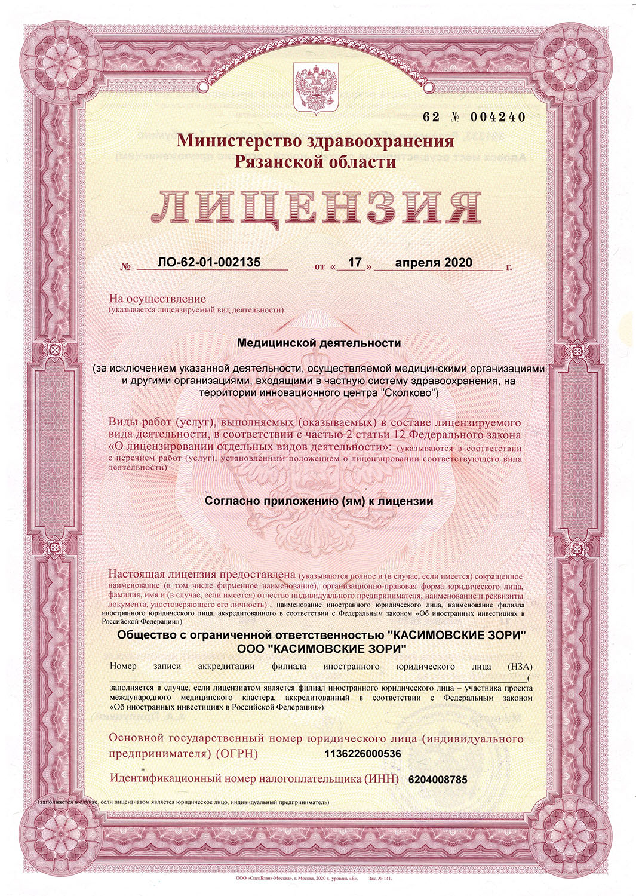
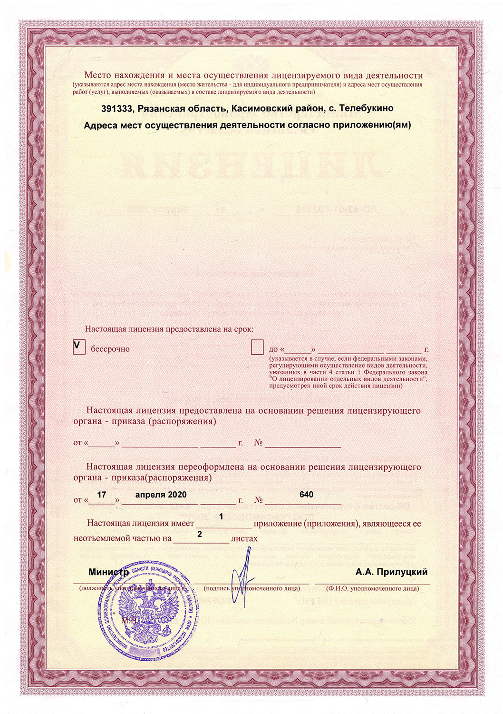
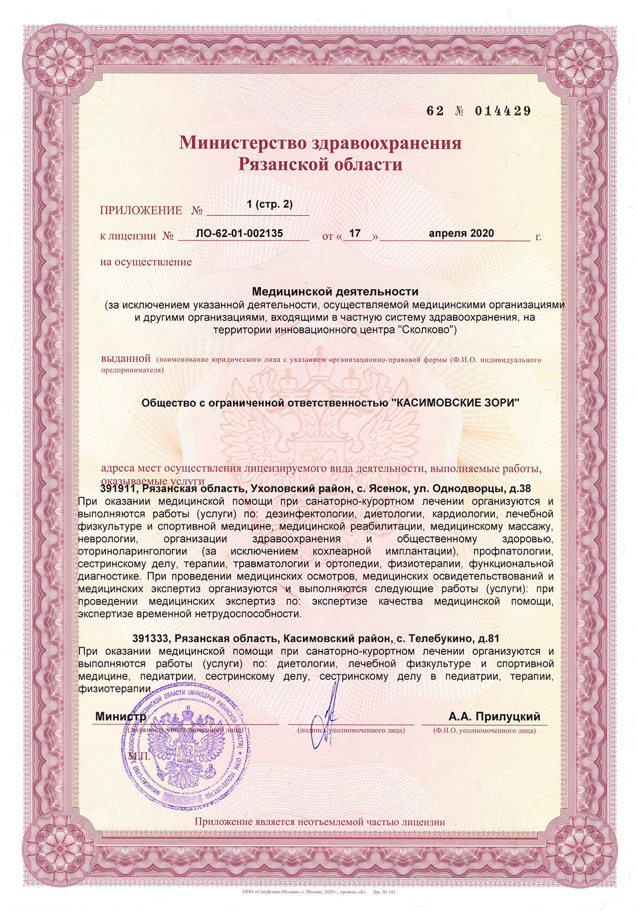
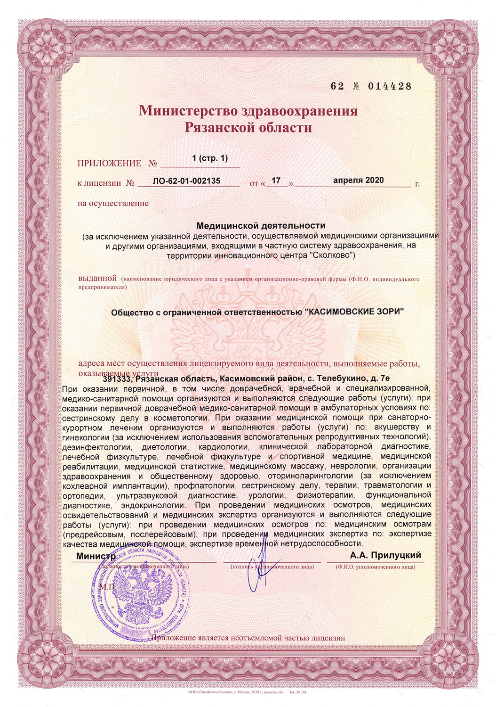
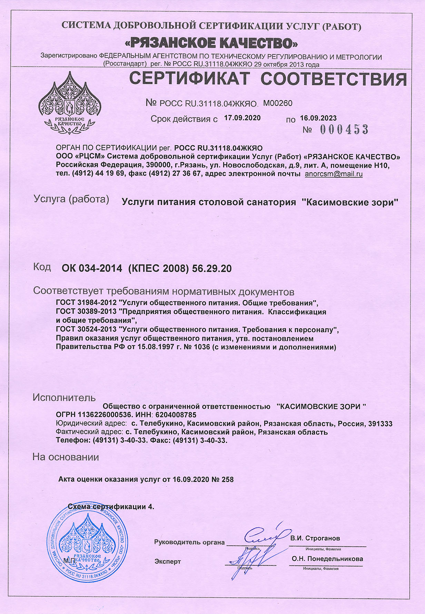
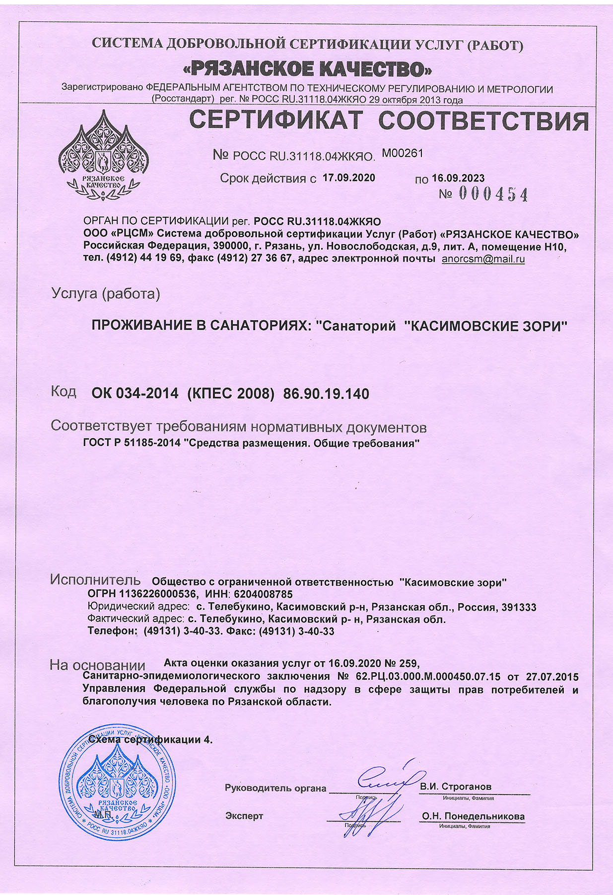

Документы
ПОЛОЖЕНИЕ О БРОНИРОВАНИИ
санаторно-курортных путевок и услуг по организации отдыха
и оздоровления
1. Общие положения
1.1 Настоящее Положение разработано в соответствии с Постановлением правительства РФ от 09 октября 2015г.№1085 (ред. от 30.11.2018г.) «Об утверждении правил предоставления гостиничных услуг в Российской Федерации», Законом РФ от 07 февраля 1992г. №2300 -1 (ред. от 29.07.2018г.) «О защите прав потребителей», действующим законодательством РФ, а также Уставом и действующими локальными актами ООО «КАСИМОВСКИЕ ЗОРИ» (далее База отдыха / Санаторий).
1.2 Основные понятия, используемые в настоящих правилах, означают следующее:
- «цена номера (койко-место в номере)» - стоимость временного проживания и иных сопутствующих услуг, определенных исполнителем, оказываемых за единую цену;
- «Заказчик» - физическое (юридическое) лицо, имеющее намерение заказать или приобрести, либо заказывающее или приобретающее путевку в соответствии с договором об оказании санаторно-курортных услуг или услуг по оздоровлению и отдыху (далее – договор) в пользу потребителя (далее Гость/ Гости);
- «Исполнитель» - ООО «КАСИМОВСКИЕ ЗОРИ», предоставляющие потребителю путевку на санаторно-курортные услуги или услуги по оздоровлению и отдыху;
- «бронирование» -предварительный заказ мест и (или) номеров Заказчиком в ООО «КАСИМОВСКИЕ ЗОРИ»;
- «расчетный час» - Время, установленное Исполнителем для заезда и выезда Гостей.
1.3 С данным Положение Гости могут ознакомится на официальном сайте База отдыха/Санатория:
http//kasimovskie-zori.ru/,
http//касимовские-зори.рф/.
2. Порядок бронирования номеров на Базе отдыха/Санатория.
2.1 Гость либо иное лицо в интересах Гостя направляет на Базу отдыха/ в Санаторий заявку на бронирование следующим способом:
- по телефонам +7(910) 610-01-92, +7(985)770-09-69, +7 (49131) 4-52-06, +7 (49131) 4-52-07, +7 (49131) 4-52-08
- по электронной почте: telebukino-2012@mail.ru
- с сайтов http//kasimovskie-zori.ru/; http//касимовские-зори.рф/
2.2 Заявки на бронирование номеров для индивидуальных Гостей принимаются не позднее, чем за 12 часов до даты предполагаемого заезда Гостя. Юридические лица направляют заявку для коммерческого предложения по указанному e-mail.
2.3 Заявка на бронирование должна содержать следующую информацию:
- ФИО Гостей
- дата, время заезда и дата, время выезда Гостя (Группы Гостей)
- тип бронируемого номера
- cпособ оплаты (наличный\ безналичный расчет)
- контакты для связи (тел, е-mail)
2.4 В случае не предоставления Гостем информации, указанной в п.2.3, в срок, указанный в п. 2.2. , База отдыха\Санаторий оставляет за собой право отказать Гостю (группе Гостей) в подтверждении заявки на бронирование.
2.5 База отдыха\Санаторий в течение 12-часов с момента получения заявки на бронирование подтверждает Гостю бронирование либо в удовлетворении заявки отказывает. В случае подтверждения заявки на бронирование База отдыха\Санаторий направляет Гостю сообщение о подтверждении бронирования. В случае отказа - направляет Гостю сообщение об отказе в подтверждении бронирования. Указанные сообщения направляются Гостю всеми доступными средствами связи (телефон, электронная почта).
2.6 С момента подтверждения Базой отдыха\Санаторием заявки на бронирование и ее направления Гостю, указанный в подтвержденной заявке номер считается предварительно забронированным.
2.7 В течение одного рабочего дня База отдыха\Санаторий направляет в адрес Гостя договор (или электронный вариант) об организации отдыха и предоставления услуг на Базе отдыха «КАСИМОВСКИЕ ЗОРИ», договор (или электронный вариант) купли-продажи санаторно-курортных путевок, счет на оплату услуг. Счет должен быть оплачен в течение 3 рабочих дней. По факту оплаты предварительное бронирование считается гарантированным.
2.8 Гарантированным бронирование считается в следующих случаях:
- при внесении Гостем 30% предоплаты за услуги проживания, санаторно- курортное лечение;
- при внесении Гостем 100% предоплаты за услуги проживания, сан- курортного лечения;
- при наличии между Базой отдыха/Санаторием и Гостем действующего договора, где закреплено право Гостя на отсрочку платежа или согласован график платежей;
- при предоставлении Гостем оригинала письма предприятия с гарантиями оплаты;
- при наличии письменного распоряжения Генерального директора Базы отдыха/Санатория.
3. Правила заезда гостей. Расчетный час.
3.1 Время, указываемое в настоящих правилах, местное.
3.2 Заезд Гостей рекомендован с 8.00 до 12.00 дня заезда, согласованного сторонами в сообщении о подтверждении бронирования. Выезд – в день отъезда с 8.00 до 12.00.
3.3 В момент заезда Гость предъявляет дежурному администратору Базы отдыха/ Санатория документ, удостоверяющий личность.
3.4 Заселение Гостя производится при 100% оплате услуг проживания, санаторно-курортного лечения.
4. Виды оплаты.
4.1 Услуги Базы Отдыха/Санатория по усмотрению Гостя могут быть оплачены следующими способами:
- оплата услуг Базы отдыха/Санатория Гостем в безналичном порядке путем банковского перевода денежных средств на расчетный счет, указанный в счете;
- оплата услуг Базы отдыха/Санатория Гостем за наличный расчет;
- оплата услуг Базы Отдыха/Санатория Гостем банковской картой.
4.2. Обязательство Гостя по оплате услуг Базы Отдыха/Санатория считается выполненным в момент зачисления соответствующих денежных средств на расчетный счет Базы Отдыха/Санатория , в момент поступления денежных средств кассу, либо факт прохождения банковской карты через терминал.
5. Отказ от бронирования.
5.1 В случае отказа (аннуляции) Гостя от гарантированного бронирования за 4 (четыре) и менее дней до даты заезда, База отдыха/Санаторий удерживает с гостя неустойку в размере стоимости 1 (койко-дня) санаторно-курортной путевки/проживания.
5.2 По согласованию сторон, в случае отказа (аннуляции) Гостя от гарантированного бронирования, возможен перенос сроков бронирования.
5.3.Заявление об отказе от бронирования (в свободной форме) и возврате перечисленных денежных средств (см. на сайте www.kasimovskie-zori.ru), направляется в сканированном варианте на электронную почту Базы отдыха/Санатория (e-mail: telebukino-2012@mail.ru) для непосредственной отмены бронирования с последующей досылкой оригинала заявления почтой России в Коммерческий отдел ООО «КАСИМОВСКИЕ ЗОРИ» по адресу: 391333, Рязанская область, Касимовский район, д. Телебукино, д. 7Е. Возврат денежных средств Гостю осуществляется только при получении оригинала заявления. Датой отказа от бронирования считается дата поступления заявления об отказе от бронирования (в свободной форме) на электронную почту ООО «КАСИМОВСКИЕ ЗОРИ», которая является точкой отсчета для подсчета фактически понесенных ООО «КАСИМОВСКИЕ ЗОРИ» расходов досрочным расторжением договора.
6. Бронирование номерного фонда для группы Гостей
6.1 При заезде группы гостей заявки на бронирование принимаются не позднее чем, за 14 (четырнадцать) дней до даты предполагаемого заезда группы. Группой считается количество Гостей, направляемых заявку на бронирование от 5 и более номеров.
6.2. В случае отказа (аннуляции) Гостя от подтвержденной Базой Отдыха/Санаторием группового бронирования, письменное уведомление о такой отмене должно быть направлено Гостем на Базу Отдыха/ Санаторий такого уведомления, но не позднее, чем за 6 (шесть) дней до официального установленного Базой Отдыха/Санаторием часа заезда (12.00) Гостя на Базу Отдыха/Санаторий. В случае В случае отказа (аннуляции) Гостя от подтвержденного Базой отдыха/Санаторием бронирования за 4 (четыре) и менее дней до даты заезда, База отдыха/Санаторий удерживает с гостя неустойку в размере стоимости 1 (одних) суток проживания.
ПРАВИЛА ПРОЖИВАНИЯ
в ООО "КАСИМОВСКИЕ ЗОРИ"
1. Общие положения
Настоящий документ разработан в соответствии с Правилами предоставления гостиничных услуг в Российской Федерации, утвержденными постановлением Правительства РФ от 09.10.2015 N 1085 (ред. от 30.11.2018) "Об утверждении Правил предоставления гостиничных услуг в Российской Федерации" и законом РФ «О защите прав потребителей».
1.2. ООО «КАСИМОВСКИЕ ЗОРИ» (далее – База Отдыха/Санаторий) предназначен для временного проживания граждан, оказания санаторно-курортного лечения и дополнительных услуг, сопутствующих их проживанию.
1.3. Номерной фонд Базы Отдыха/Санатория включает в себя:
• коттеджи различной комфортности
• гостиницe
• санаторий.
Номера оснащены мебелью, постельными принадлежностями и другим инвентарем и предметами санитарно-гигиенического назначения, предназначенными для обеспечения необходимых условий проживания, предусмотренных требованиями к гостинице.
2. Порядок оформления проживания и предоставления услуг.
2.1. Режим работы Базы Отдыха/Санатория - круглосуточно.
2.2. Оформление проживания на Базе Отдыха/Санатории производится при предъявлении паспорта гражданина РФ, свидетельства о рождении для лиц, не достигших 14 лет, военного билета для военнослужащих срочной службы, разрешения на временное проживание для лиц без гражданства, иностранных граждан при наличии национального паспорта, визы или вида на жительство, миграционной карты (кроме граждан Республики Беларусь).
2.3. Расчетный час – 12.00 часов по московскому времени. Размещение на Базе Отдыха/Санатории производится с 08:00 до 12:00 часов дня заезда, освобождение номера – до 12.00 часов дня выезда.
2.3.1. Заезд по тарифу "Ночевка", продолжительностью не более 12 часов проживания на Базе отдыха/Санатории. Время проживания рассчитывается от времени фактического заселения после 18:00.
2.3.2. Дополнительные ночевки в Санатории до даты начала и после даты окончания санаторно-курортного лечения рассчитываются по действующему прейскуранту.
2.4. При задержке выезда гостя (после 12-00) за продление проживания взимается дополнительная плата. При этом - при задержке выезда гостя до 12 часов – плата взимается по тарифу проживания "Ночевка в гостинице/санатории". При задержке выезда более 12 часов - оплата производится за полные сутки по тарифу "Проживание в гостинице/санатории".
2.5. Продление проживания после расчетного часа производится при наличии свободных номеров.
2.6. При отсутствии гостя по месту проживания более двух часов (после расчетного часа) без оплаты или обнаружения забытых гостем вещей, администрация гостиницы создает комиссию, производит опись имущества, находящегося в номере. Имущество гостя сдается в камеру хранения.
2.7. Для организации безопасности проживания администрацией Базы Отдыха/Санатория установлен пропускной режим – вьезд в на территорию осуществляется по выписанному пропуску на контрольно-пропускном пункте.
2.8. При заселении на Базу Отдыха/Санаторий гостю выдается на оплаченный срок проживания ключ от номера.
2.9. При обнаружении пропажи личных вещей из номера, утери ключа, гость обязан немедленно сообщить об этом в службу размещения (стойка Администратора) для принятия необходимых мер по розыску пропавших вещей. За оставленные без присмотра вещи Администрация ответственности не несет.
2.10. Переселение гостя в другой номер производится только с его согласия.
2.11. Лица, нарушающие общественный порядок или совершающие хулиганские действия могут быть выселены с Базы Отдыха/Санатория по усмотрению Администрации без возврата оплаты за проживание.
2.12. В гостиничном комплексе гость может воспользоваться следующими видами бесплатных услуг:
• вызов фельдшера/скорой помощи;
• вызов такси;
• побудка к определенному времени;
• пользование телевидением;
• пользование гладильной комнатой;
• стоянка автомобиля на территории Базы Отдыха/Санатория;
• wi-fi(пароль на стойке Администратора).
3. Оплата проживания и услуг.
3.1. Оплата за проживание и услуги, предоставляемые Базой Отдыха/Санаторием, может осуществляться за наличный или безналичный расчет, а также по банковским/кредитным картам в рублях.
3.2. Плата за проживание взимается на условиях предварительной оплаты на весь забронированный период. Проживание в кредит не предоставляется.
3.3. При проживании не более суток (24 часов) плата взимается за сутки независимо от расчетного часа.
3.4. При выезде с Базы Отдыха/Санатория проживающий должен произвести полный расчет за все предоставленные ему услуги, уведомить администратора о своем выезде и сдать номер администратору и ключи от номера на ресепшн.
3.5. В случае невозможности предоставления номера согласно условиям подтвержденной брони, администратор предоставляет гостю номер более высокой категории без дополнительной оплаты.
3.6. Не взимается плата за проживание детей в возрасте до 3 лет при условии их размещения с родителями (опекунами) в одном номере без предоставления отдельного места, а также питания. При предварительной заявке детская кроватка с матрасом и комплектом постельного белья предоставляется бесплатно. При предоставлении дополнительного места детям до 12 лет плата взимается согласно стоимости за проживание, указанной в действующем прейскуранте.
3.7. База Отдыха/Санаторий предлагает гостям дополнительные услуги за плату по их желанию, согласно перечню дополнительных услуг (перечень услуг находится в номерах в информационной папке гостя).
4. Правила проживания.
4.1. В целях соблюдения правил пожарной безопасности гостям, проживающим на Базе Отдыха/Санатории, запрещается:
4.1.1. Пользоваться в номерах нештатными (не предусмотренными оснащением номера) электронагревательными приборами, а также удлинителями, переходниками и др.
4.1.2. Хранить и приносить в номера огнеопасные и легковоспламеняющиеся материалы, сильнодействующие ядовитые вещества, громоздкие вещи.
4.1.3. Уходя из номера, оставлять включенными электроприборы.
4.1.4. Оставлять/бросать непогашенные сигареты (папиросы) в корзины для мусора.
4.1.5. Накрывать включенные торшеры и настольные лампы.
4.1.6. Курить в коридорах и холлах, на этажах, а также в номерах.
4.2. С целью обеспечения порядка и безопасности проживающих на Базе Отдыха/Санатории не разрешается:
4.2.1. Передавать ключ от номера посторонним лицам.
4.2.2. Оставлять посторонних лиц в номере в своё отсутствие.
4.2.3. Находиться посторонним лицам в гостиничном номере с 06-00 до 23-00 без оформленного в установленном порядке разового пропуска, при этом необходимо предъявить документ, удостоверяющий личность приглашенного. В случае отсутствия документа, удостоверяющего личность, встреча должна проходить вне территории Базы Отдыха/Санатория. Пребывание приглашенных лиц с 23.00 до 06.00 разрешается только с их регистрацией в установленном порядке. При несоблюдении правил пребывание в гостинице может быть ограничено или прервано.
4.3. Гостям надлежит бережно относиться к имуществу, оборудованию, соблюдать санитарные нормы и общественный порядок.
4.4. База Отдыха/Санаторий вправе расторгнуть договор с гостем в случае неоднократного или грубого нарушения им настоящих Правил проживания. При выселении гость обязан оплатить фактически оказанные ему услуги.
5. Правила проживания гостя в номере гостиницы с животными.
5.1. База Отдыха оставляет за собой право определять, возможно ли проживание данного домашнего животного в гостиничном номере. Размещение в номере Санатория домашнего животного категорически запрещено.
5.2. При размещении на Базе Отдыха, гость обязан ознакомится с «Правилами проживания гостей с домашними животными» и поставить подпись, подтверждающую согласие с данными правилами в анкете.
5.3.Расчет стоимости проживания с животными по действующему прейскуранту.
5.4. Гости, прибывшие на Базу Отдыха с домашними животными должны иметь справку от ветеринарного врача с отметкой обо всех прививках или предъявить ветеринарный паспорт установленного образца.
5.5. Гость, проживающий с животным, берет на себя обязательство по обеспечению соблюдения санитарно-гигиенического режима в номере, на территории Базы Отдыха:
• гость обязан привезти с собой специальный коврик или специальную клетку для домашнего животного.
• выгул домашних животных на газонах – строго запрещен.
• для кормления домашних животных гость обязан привезти с собой специальную посуду.
• для туалета кошек и собак гость обязан привезти с собой специальный лоток.
• кормить домашних животных из посуды, принадлежащей Базе Отдыха - строго запрещается.
• при отсутствии специальной клетки для домашнего животного, запрещается оставлять домашних животных без присмотра хозяев в гостиничном номере, на территории Базы отдыха /Санатория.
• запрещается брать с собой домашних животных в ресторан и другие места общего пользования.
• запрещается мыть домашних животных в душевых кабинах номера, использовать полотенца, простыни и другие постельные принадлежности, принадлежащие Базе Отдыха/Санаторию.
5.6. База Отдыха оставляет за собой право расторгнуть договор с гостем, проживающим с домашним животным:
• в случае нарушения правил проживания;
• агрессивного, шумного, неадекватного поведения домашнего животного.
7. Права и обязанности гостей.
7.1.При заезде на Базу отдыха/Санаторий Гость подписывают Договор об оказании услуг по организации отдыха и оздоровления/Договор возмездного оказания санаторно-курортных услуг, Согласие на обработку персональных данных.
7.2.При выезде подписывает Акт оказания услуг.
7.3.При обнаружении недостатков в оказании услуг, обоснованных и подтвержденных документально, гость вправе потребовать от администрации :безвозмездного устранения недостатков, равноценной замены услуги;
7.4. Гости вправе расторгнуть договор на получение услуги. Условия, порядок возврата денежных средств регламентированы Положением о порядке возврата денежных средств в ООО "КАСИМОВСКИЕ ЗОРИ".
7.5. В случае утраты или повреждения имущества Базы Отдыха /Санатория, гость обязан в соответствии с Законодательством РФ возместить причиненный ущерб.
7.6. Гости, проживающие на Базе Отдыха/Санатории, обязаны соблюдать настоящие Правила.
7.7. Пребывая на территории Базы Отдыха/Санатория, родители несут полную ответственность за своих детей в рамках гражданского и семейного кодекса, а также самостоятельно несут полную ответственность за действия и/или поведение ребенка, в результате которых с ребенком может случиться несчастный случай, он может получить травму и/или вред жизни или здоровью.
8. Обязанности и ответственность администрации Базы Отдыха/Санатория
8.1. На Базе Отдыха/Санатории производится ежедневная уборка номеров, смена полотенец раз в 3 дня , белья раз в 5 дней.
8.2. Администрация обязана устранить выявленные при оказании услуг недостатки.
8.3. Администрация не несет ответственность за несчастный случай, травму, вред жизни или здоровью Гостя и/или лиц с ним проживающим, вследствие неосторожного поведения самого Гостя и/или лиц с ним проживающих, нахождении в состоянии опьянения и/или нарушения правил проживания.
8.4. Администрация не отвечает за сохранность денег, иных валютных ценностей, ценных предметов в номере. Деньги и ценные вещи рекомендуется держать в сейфовой ячейке на ресепшен по действующему Прейскуранту цен.
8.5. В случае обнаружения забытых вещей администрация Базы Отдыха/Санатория обязана уведомить об этом владельца вещей. Забытые вещи регистрируются в специальном журнале и сдаются в камеру хранения.
8.6. Книга отзывов и предложений находится в службе размещения и выдается гостям по их требованию.
8.7. Жалобы гостей, предъявленные в письменном виде, рассматриваются администрацией в срок не более месяца со дня их подачи.
8.8. В случае нарушения Администрацией настоящих Правил, защита прав гостей, предусмотренная законодательством РФ, осуществляется в порядке, установленным Законом РФ «О защите прав потребителей».
ПОЛОЖЕНИЕ О ПОРЯДКЕ ВОЗВРАТА
ДЕНЕЖНЫХ СРЕДСТВ
(по санаторно-курортным путевкам)
1. ОБЩИЕ ПОЛОЖЕНИЯ
1.1. Настоящее Положение о порядке возврата денежных средств (далее - Положение) разработано в соответствии с Гражданским кодексом Российской Федерации, Законом Российской Федерации от 07.02.1992 N 2300-1 "О защите прав потребителей".
1.2. Настоящее Положение вводится в целях упорядочения деятельности ООО «КАСИМОВСКИЕ ЗОРИ» (далее – Исполнитель) в части возврата Заказчику денежных средств.
1.3. Настоящее Положение устанавливает: - условия, порядок возврата денежных средств; -перечень документов, необходимых для осуществления возврата денежных средств; -сроки возврата денежных средств.
1.4 Заказчик вправе отказаться от всех услуг, оказываемых Исполнителем, в любое время при условии оплаты Исполнителю фактически понесенных им расходов, связанных с исполнением обязательств, предусмотренных санаторно-курортной путевкой (п.1 ст.782 ГК РФ, ст. 32 Закона РФ "О защите прав потребителей")
2. УСЛОВИЯ, ПОРЯДОК ВОЗВРАТА ДЕНЕЖНЫХ СРЕДСТВ
2.1. При отказе Заказчика от оплаченной или частично оплаченной санаторно-курортной путевки возврат Заказчику оплаченной стоимости неиспользованных койко-дней санаторно-курортной путевки производится Исполнителем путем наличного расчета, либо безналичного перечисления на счет Заказчика с учетом следующих удержаний:
2.1.1. При отказе Заказчика от путевки с наступившим сроком действия Исполнитель удерживает с Заказчика неустойку в размере стоимости 1 (койко-дня) санаторно-курортной путевки.
2.1.2. При аннуляции бронирования:
- до 5(пяти) дней возврат денежных средств без удержания.
- менее 5 (пяти) дней до даты заезда, Исполнитель удерживает с гостя неустойку в размере стоимости 1 (койко-дня) санаторно-курортной путевки.
2.2. При досрочном выезде Заказчика по любым причинам, возврат денежных средств Заказчику производится с удержанием неустойки в размере стоимости 1 (койко-дня) санаторно-курортной путевки.
2.3 В случае не посещения Заказчиком медицинских процедур в составе санаторно-курортной путевки перерасчет или возврат стоимости неиспользованных услуг не производится.
2.4. Расчет суммы возврата за неиспользованные койко-дни санаторно-курортной путевки производится со следующего дня после отбытия Заказчика из санатория.
2.5. В случае наступления форс-мажорных обстоятельств (пожары, наводнения, землетрясения и другие природные явления) возврат денежных средств производится в размере 100 %.
2.6. В случае приобретения санаторно-курортной путевки ООО «КАСИМОВСКИЕ ЗОРИ» через посредников (агентов), с которыми Исполнитель своевременно заключил агентский договор, возврат Заказчику денежных средств осуществляется по месту оплаты данных услуг (в случае приобретения путевки через туристические фирмы, организации).
3. ПЕРЕЧЕНЬ ДОКУМЕНТОВ, НЕОБХОДИМЫХ ДЛЯ ОСУЩЕСТВЛЕНИЯ ВОЗВРАТА ДЕНЕЖНЫХ СРЕДСТВ
3.1. Возврат денежных средств Заказчику при предоставлении следующих документов:
3.1.1 При возврате наличными средствами:
- заявление на возврат денежных средств по образцу Исполнителя (в рукописном или электронном виде)
- документ об удостоверении личности (паспорт)
3.1.2. При возврате путем безналичного перечисления денежных средств:
- заявление на возврат денежных средств по образцу Исполнителя (в рукописном или электронном виде)
- копия документа об удостоверении личности (паспорта)
- копия свидетельства о постановке на налоговый учет (ИНН)
- реквизиты банковской карты с печатью банка
4. СРОКИ ВОЗВРАТА ДЕНЕЖНЫХ СРЕДСТВ
4.1. Денежные средства за не оказанные услуги возвращаются Потребителю в течение 10 (десяти) календарных дней с момента предоставления полного комплекта документов в соответствие с п. 3.1. настоящего Положения согласно ст. 31 Закона Российской Федерации от 07.02.1992 N 2300-1 "О защите прав потребителей” через кассу бухгалтерии, либо безналичного перечисления денежных средств.
РАСПИСКА
ОБ ОТВЕТСТВЕННОСТИ ЗА НЕСОВЕРШЕННОЛЕТНЕГО
НА ТЕРРИТОРИИ ООО «КАСИМОВСКИЕ ЗОРИ»
Я, _________________________________________________________________________
____________________________________________________________________________
Являюсь родителем (законным представителем) несовершеннолетнего ребенка
_____________________________________________________________Ф.И.О., дата рождения
Настоящим выражаю, что я, без каких –либо исключений, принимаю на себя всю ответственность
за жизнь, здоровье, безопасность и за вред, нанесенный имуществу, моим ребенком.
«ГК РФ (часть вторая» от 26.01.1996 № 14-ФЗ (ред. От 18.03.2019, с изм. от 03.07.2019)
ст. 1073, п.1 «За вред, причинённый несовершеннолетним, не достигшим четырнадцати лет (малолетним),
отвечают его родители (усыновители) или опекуны, если не докажут, вред возник не по их вине несовершеннолетнего.
С Правилами внутреннего распорядка пребывания на территории
ООО «Касимовские Зори» ознакомлен(а).
Дата «_______» ____________________20_____г.
Подпись родителей (или законного представителя): __________________________
Администрация ООО «Касимовские Зори»
СОГЛАСИЕ КЛИЕНТА
НА ОБРАБОТКУ ПЕРСОНАЛЬНЫХ ДАННЫХ
Я, ___________________________________________________(Ф.И.О. полностью),
проживающий по адресу (месту регистрации): _______________________________
__________________________________________________________________________,
паспорт серия и номер___________, дата выдачи __________ название выдавшего
органа ____________________________________________________________________
в соответствии с требованиями Ст. 9 ФЗ от 27.07.06 г. "О персональных данных" № 152-ФЗ, подтверждаю свое согласие на обработку в ООО «КАСИМОВСКИЕ ЗОРИ» (далее – Оператор) моих персональных данных, включающих: фамилию, имя, отчество, пол, дату рождения, адрес проживания, адрес регистрации, место работы, контактный телефон, адрес электронной почты, паспортные данные, данные о состоянии моего здоровья, заболеваниях, случаях обращения за медицинской помощью, инвалидности, номер комнаты/коттеджа, предоставленной/предоставленного для проживания, иные сведения, прямо относящиеся к моей личности/ личности предоставляемого мною лица.
Настоящее согласие дается для обработки данных в целях:
- оказания санаторно-курортной помощи, установления медицинского диагноза и оказания медицинских услуг при усло-вии, что их обработка осуществляется лицом, профессионально занимающимся медицинской деятельностью в соответ-ствии с Федеральны законом от 21.11.2011г. № 323-ФЗ «Об основах охраны здоровья граждан в РФ»;
- оказания услуг по проживанию;
- оказания дополнительных услуг;
-соблюдения миграционного законодательства (для оформления необходимой учетной документации и совершения всех действий, связанных с регистрационным учетом граждан в период пребывания в ООО «КАСИМОВСКИЕ ЗОРИ»);
- обработки информации в информационной системе персональных данных ООО «КАСИМОВСКИЕ ЗОРИ», включая передачи полученной информации по локальной сети организации и по сети интернет;
- регистрации сведений, необходимых для оказания услуг.
В процессе оказания Оператором услуг по проживанию, оказанию медицинских услуг и дополнительных услуг я предоставляю право работникам санатория и базы отдыха осуществлять все действия (операции) с моими персональ-ными данными, включая сбор, систематизацию, накопление, хранение, обновление, изменение, использование, обезли-чивание, блокирование, уничтожение. Оператор вправе обрабатывать мои персональные данные посредством внесения их в электронную базу данных, включения в списки (реестры) и отчетные формы, предусмотренные документами, регла-ментирующими предоставление отчетных данных (документов).
Оператор имеет право во исполнение своих обязательств на обмен (прием и передачу) моими персональными данными с использованием машинных носителей или по каналам связи, с соблюдением мер, обеспечивающих их защиту от несанкционированного доступа, при условии, что их прием и обработка будут осуществляется лицом, обязанным со-хранять профессиональную тайну. Срок хранения моих персональных данных соответствует сроку хранения первичных медицинских документов и составляет двадцать пять лет. Передача моих персональных данных иным лицам или иное их разглашение может осуществляться только с моего письменного согласия.
Настоящее согласие дано мной «____»__________20____ г. и действует бессрочно.
Я оставляю за собой право отозвать свое согласие посредством составления соответствующего письменного до-кумента, который может быть направлен мной в адрес Оператора по почте заказным письмом с уведомлением о вруче-нии либо вручен лично под расписку представителю Оператора. В случае получения моего письменного заявления об отзыве настоящего согласия на обработку персональных данных, Оператор обязан прекратить их обработку в течение периода времени, необходимого для завершения взаиморасчетов по оплате оказанной мне до этого медицинской помощи.
Подпись субъекта персональных данных____________________________
Расписался в моем присутствии:________________________________(должность, ФИО)
Закон РФ от 07.02.1992 N 2300-1
(ред. от 01.05.2017)
"О защите прав потребителей"
Список изменяющих документов
(в ред. Федеральных законов от 09.01.1996 N 2-ФЗ,от 17.12.1999 N 212-ФЗ, от 30.12.2001 N 196-ФЗ,
от 22.08.2004 N 122-ФЗ, от 02.11.2004 N 127-ФЗ,от 21.12.2004 N 171-ФЗ, от 27.07.2006 N 140-ФЗ,
от 16.10.2006 N 160-ФЗ, от 25.11.2006 N 193-ФЗ,от 25.10.2007 N 234-ФЗ, от 23.07.2008 N 160-ФЗ,
от 03.06.2009 N 121-ФЗ, от 23.11.2009 N 261-ФЗ,от 27.06.2011 N 162-ФЗ, от 18.07.2011 N 242-ФЗ,
от 25.06.2012 N 093-ФЗ, от 28.07.2012 N 133-ФЗ,от 02.07.2013 N 185-ФЗ, от 21.12.2013 N 363-ФЗ,
от 05.05.2014 N 112-ФЗ, от 13.07.2015 N 233-ФЗ,от 03.07.2016 N 265-ФЗ, от 01.05.2017 N 088-ФЗ)
Настоящий Закон регулирует отношения, возникающие между потребителями и изготовителями, исполнителями, импортерами, продавцами при продаже товаров (выполнении работ, оказании услуг), устанавливает права потребителей на приобретение товаров (работ, услуг) надлежащего качества и безопасных для жизни, здоровья, имущества потребителей и окружающей среды, получение информации о товарах (работах, услугах) и об их изготовителях (исполнителях, продавцах), просвещение, государственную и общественную защиту их интересов, а также определяет механизм реализации этих прав.
(в ред. Федеральных законов от 21.12.2004 N 171-ФЗ, от 25.10.2007 N 234-ФЗ)
Основные понятия, используемые в настоящем Законе:
потребитель - гражданин, имеющий намерение заказать или приобрести либо заказывающий, приобретающий или использующий товары (работы, услуги) исключительно для личных, семейных, домашних и иных нужд, не связанных с осуществлением предпринимательской деятельности;
(в ред. Федерального закона от 17.12.1999 N 212-ФЗ)
изготовитель - организация независимо от ее организационно-правовой формы, а также индивидуальный предприниматель, производящие товары для реализации потребителям;
(в ред. Федерального закона от 17.12.1999 N 212-ФЗ)
исполнитель - организация независимо от ее организационно-правовой формы, а также индивидуальный предприниматель, выполняющие работы или оказывающие услуги потребителям по возмездному договору;
(в ред. Федерального закона от 17.12.1999 N 212-ФЗ)
продавец - организация независимо от ее организационно-правовой формы, а также индивидуальный предприниматель, реализующие товары потребителям по договору купли-продажи;
(в ред. Федерального закона от 17.12.1999 N 212-ФЗ)
абзац утратил силу. - Федеральный закон от 21.12.2004 N 171-ФЗ;
недостаток товара (работы, услуги) - несоответствие товара (работы, услуги) или обязательным требованиям, предусмотренным законом либо в установленном им порядке, или условиям договора (при их отсутствии или неполноте условий обычно предъявляемым требованиям), или целям, для которых товар (работа, услуга) такого рода обычно используется, или целям, о которых продавец (исполнитель) был поставлен в известность потребителем при заключении договора, или образцу и (или) описанию при продаже товара по образцу и (или) по описанию;
(в ред. Федеральных законов от 17.12.1999 N 212-ФЗ, от 25.10.2007 N 234-ФЗ)
существенный недостаток товара (работы, услуги) - неустранимый недостаток или недостаток, который не может быть устранен без несоразмерных расходов или затрат времени, или выявляется неоднократно, или проявляется вновь после его устранения, или другие подобные недостатки;
(в ред. Федеральных законов от 17.12.1999 N 212-ФЗ, от 21.12.2004 N 171-ФЗ)
безопасность товара (работы, услуги) - безопасность товара (работы, услуги) для жизни, здоровья, имущества потребителя и окружающей среды при обычных условиях его использования, хранения, транспортировки и утилизации, а также безопасность процесса выполнения работы (оказания услуги);
уполномоченная изготовителем (продавцом) организация или уполномоченный изготовителем (продавцом) индивидуальный предприниматель (далее - уполномоченная организация или уполномоченный индивидуальный предприниматель) - организация, осуществляющая определенную деятельность, или организация, созданная на территории Российской Федерации изготовителем (продавцом), в том числе иностранным изготовителем (иностранным продавцом), выполняющие определенные функции на основании договора с изготовителем (продавцом) и уполномоченные им на принятие и удовлетворение требований потребителей в отношении товара ненадлежащего качества, либо индивидуальный предприниматель, зарегистрированный на территории Российской Федерации, выполняющий определенные функции на основании договора с изготовителем (продавцом), в том числе с иностранным изготовителем (иностранным продавцом), и уполномоченный им на принятие и удовлетворение требований потребителей в отношении товара ненадлежащего качества;
(абзац введен Федеральным законом от 21.12.2004 N 171-ФЗ)
импортер - организация независимо от организационно-правовой формы или индивидуальный предприниматель, осуществляющие импорт товара для его последующей реализации на территории Российской Федерации.
(абзац введен Федеральным законом от 21.12.2004 N 171-ФЗ)
Глава I. ОБЩИЕ ПОЛОЖЕНИЯ
Статья 1. Правовое регулирование отношений в области защиты прав потребителей
1. Отношения в области защиты прав потребителей регулируются Гражданским кодексом Российской Федерации, настоящим Законом, другими федеральными законами (далее - законы) и принимаемыми в соответствии с ними иными нормативными правовыми актами Российской Федерации.
(п. 1 в ред. Федерального закона от 21.12.2004 N 171-ФЗ)
2. Правительство Российской Федерации не вправе поручать федеральным органам исполнительной власти принимать акты, содержащие нормы о защите прав потребителей.
Правительство Российской Федерации вправе издавать для потребителя и продавца (изготовителя, исполнителя, уполномоченной организации или уполномоченного индивидуального предпринимателя, импортера) правила, обязательные при заключении и исполнении публичных договоров (договоров розничной купли-продажи, энергоснабжения, договоров о выполнении работ и об оказании услуг).
(абзац введен Федеральным законом от 21.12.2004 N 171-ФЗ)
Абзац утратил силу с 1 августа 2011 года. - Федеральный закон от 18.07.2011 N 242-ФЗ.
Статья 2. Международные договоры Российской Федерации
Если международным договором Российской Федерации установлены иные правила о защите прав потребителей, чем те, которые предусмотрены настоящим Законом, применяются правила международного договора.
Статья 3. Право потребителей на просвещение в области защиты прав потребителей
Право потребителей на просвещение в области защиты прав потребителей обеспечивается посредством включения соответствующих требований в федеральные государственные образовательные стандарты и образовательные программы, а также посредством организации системы информации потребителей об их правах и о необходимых действиях по защите этих прав.
(в ред. Федерального закона от 02.07.2013 N 185-ФЗ)
Статья 4. Качество товара (работы, услуги)
1. Продавец (исполнитель) обязан передать потребителю товар (выполнить работу, оказать услугу), качество которого соответствует договору.
2. При отсутствии в договоре условий о качестве товара (работы, услуги) продавец (исполнитель) обязан передать потребителю товар (выполнить работу, оказать услугу), соответствующий обычно предъявляемым требованиям и пригодный для целей, для которых товар (работа, услуга) такого рода обычно используется.
(в ред. Федерального закона от 25.10.2007 N 234-ФЗ)
3. Если продавец (исполнитель) при заключении договора был поставлен потребителем в известность о конкретных целях приобретения товара (выполнения работы, оказания услуги), продавец (исполнитель) обязан передать потребителю товар (выполнить работу, оказать услугу), пригодный для использования в соответствии с этими целями.
4. При продаже товара по образцу и (или) описанию продавец обязан передать потребителю товар, который соответствует образцу и (или) описанию.
5. Если законами или в установленном ими порядке предусмотрены обязательные требования к товару (работе, услуге), продавец (исполнитель) обязан передать потребителю товар (выполнить работу, оказать услугу), соответствующий этим требованиям.
(п. 5 в ред. Федерального закона от 21.12.2004 N 171-ФЗ)
Статья 5. Права и обязанности изготовителя (исполнителя, продавца) в области установления срока службы, срока годности товара (работы), а также гарантийного срока на товар (работу)
1. На товар (работу), предназначенный для длительного использования, изготовитель (исполнитель) вправе устанавливать срок службы - период, в течение которого изготовитель (исполнитель) обязуется обеспечивать потребителю возможность использования товара (работы) по назначению и нести ответственность за существенные недостатки на основании пункта 6 статьи 19 и пункта 6 статьи 29 настоящего Закона.
(в ред. Федерального закона от 21.12.2004 N 171-ФЗ)
2. Изготовитель (исполнитель) обязан устанавливать срок службы товара (работы) длительного пользования, в том числе комплектующих изделий (деталей, узлов, агрегатов), которые по истечении определенного периода могут представлять опасность для жизни, здоровья потребителя, причинять вред его имуществу или окружающей среде.
(в ред. Федерального закона от 21.12.2004 N 171-ФЗ)
3. Срок службы товара (работы) может исчисляться единицами времени, а также иными единицами измерения (километрами, метрами и прочими единицами измерения исходя из функционального назначения товара (результата работы)).
(в ред. Федерального закона от 17.12.1999 N 212-ФЗ)
4. На продукты питания, парфюмерно-косметические товары, медикаменты, товары бытовой химии и иные подобные товары (работы) изготовитель (исполнитель) обязан устанавливать срок годности - период, по истечении которого товар (работа) считается непригодным для использования по назначению.
(в ред. Федерального закона от 21.12.2004 N 171-ФЗ)
5. Продажа товара (выполнение работы) по истечении установленного срока годности, а также товара (выполнение работы), на который должен быть установлен срок годности, но он не установлен, запрещается.
(в ред. Федерального закона от 17.12.1999 N 212-ФЗ)
6. Изготовитель (исполнитель) вправе устанавливать на товар (работу) гарантийный срок - период, в течение которого в случае обнаружения в товаре (работе) недостатка изготовитель (исполнитель), продавец, уполномоченная организация или уполномоченный индивидуальный предприниматель, импортер обязаны удовлетворить требования потребителя, установленные статьями 18 и 29 настоящего Закона.
(в ред. Федерального закона от 21.12.2004 N 171-ФЗ)
Изготовитель вправе принять обязательство в отношении недостатков товара, обнаруженных по истечении установленного им гарантийного срока (дополнительное обязательство).
(абзац введен Федеральным законом от 21.12.2004 N 171-ФЗ)
Содержание дополнительного обязательства изготовителя, срок действия такого обязательства и порядок осуществления потребителем прав по такому обязательству определяются изготовителем.
(абзац введен Федеральным законом от 21.12.2004 N 171-ФЗ)
7. Продавец вправе установить на товар гарантийный срок, если он не установлен изготовителем.
Продавец вправе принять обязательство в отношении недостатков товара, обнаруженных по истечении гарантийного срока, установленного изготовителем (дополнительное обязательство).
Содержание дополнительного обязательства продавца, срок действия такого обязательства и порядок осуществления потребителем прав по такому обязательству определяются договором между потребителем и продавцом.
(п. 7 в ред. Федерального закона от 21.12.2004 N 171-ФЗ)
8. Изготовитель (продавец) несет ответственность за недостатки товара, обнаруженные в течение срока действия дополнительного обязательства, в соответствии с абзацем вторым пункта 6 статьи 18 настоящего Закона, а после окончания срока действия дополнительного обязательства - в соответствии с пунктом 5 статьи 19 настоящего Закона.
(п. 8 введен Федеральным законом от 21.12.2004 N 171-ФЗ)
Статья 6. Обязанность изготовителя обеспечить возможность ремонта и технического обслуживания товара
Изготовитель обязан обеспечить возможность использования товара в течение его срока службы. Для этой цели изготовитель обеспечивает ремонт и техническое обслуживание товара, а также выпуск и поставку в торговые и ремонтные организации в необходимых для ремонта и технического обслуживания объеме и ассортименте запасных частей в течение срока производства товара и после снятия его с производства в течение срока службы товара, а при отсутствии такого срока в течение десяти лет со дня передачи товара потребителю.
Статья 7. Право потребителя на безопасность товара (работы, услуги)
1. Потребитель имеет право на то, чтобы товар (работа, услуга) при обычных условиях его использования, хранения, транспортировки и утилизации был безопасен для жизни, здоровья потребителя, окружающей среды, а также не причинял вред имуществу потребителя. Требования, которые должны обеспечивать безопасность товара (работы, услуги) для жизни и здоровья потребителя, окружающей среды, а также предотвращение причинения вреда имуществу потребителя, являются обязательными и устанавливаются законом или в установленном им порядке.
(в ред. Федерального закона от 17.12.1999 N 212-ФЗ)
2. Изготовитель (исполнитель) обязан обеспечивать безопасность товара (работы) в течение установленного срока службы или срока годности товара (работы).
Если в соответствии с пунктом 1 статьи 5 настоящего Закона изготовитель (исполнитель) не установил на товар (работу) срок службы, он обязан обеспечить безопасность товара (работы) в течение десяти лет со дня передачи товара (работы) потребителю.
Вред, причиненный жизни, здоровью или имуществу потребителя вследствие необеспечения безопасности товара (работы), подлежит возмещению в соответствии со статьей 14 настоящего Закона.
3. Если для безопасности использования товара (работы, услуги), его хранения, транспортировки и утилизации необходимо соблюдать специальные правила (далее - правила), изготовитель (исполнитель) обязан указать эти правила в сопроводительной документации на товар (работу, услугу), на этикетке, маркировкой или иным способом, а продавец (исполнитель) обязан довести эти правила до сведения потребителя.
4. Если на товары (работы, услуги) законом или в установленном им порядке установлены обязательные требования, обеспечивающие их безопасность для жизни, здоровья потребителя, окружающей среды и предотвращение причинения вреда имуществу потребителя, соответствие товаров (работ, услуг) указанным требованиям подлежит обязательному подтверждению в порядке, предусмотренном законом и иными правовыми актами.
(в ред. Федерального закона от 21.12.2004 N 171-ФЗ)
Не допускается продажа товара (выполнение работы, оказание услуги), в том числе импортного товара (работы, услуги), без информации об обязательном подтверждении его соответствия требованиям, указанным в пункте 1 настоящей статьи.
(п. 4 в ред. Федерального закона от 17.12.1999 N 212-ФЗ)
5. Если установлено, что при соблюдении потребителем установленных правил использования, хранения или транспортировки товара (работы) он причиняет или может причинить вред жизни, здоровью и имуществу потребителя, окружающей среде, изготовитель (исполнитель, продавец) обязан незамедлительно приостановить его производство (реализацию) до устранения причин вреда, а в необходимых случаях принять меры по изъятию его из оборота и отзыву от потребителя (потребителей).
Если причины вреда устранить невозможно, изготовитель (исполнитель) обязан снять такой товар (работу, услугу) с производства. При невыполнении изготовителем (исполнителем) этой обязанности уполномоченный федеральный орган исполнительной власти принимает меры по отзыву такого товара (работы, услуги) с внутреннего рынка и (или) от потребителя или потребителей в порядке, установленном законодательством Российской Федерации.
(в ред. Федеральных законов от 21.12.2004 N 171-ФЗ, от 18.07.2011 N 242-ФЗ)
Убытки, причиненные потребителю в связи с отзывом товара (работы, услуги), подлежат возмещению изготовителем (исполнителем) в полном объеме.
6. Утратил силу. - Федеральный закон от 21.12.2004 N 171-ФЗ.
Статья 8. Право потребителя на информацию об изготовителе (исполнителе, продавце) и о товарах (работах, услугах)
1. Потребитель вправе потребовать предоставления необходимой и достоверной информации об изготовителе (исполнителе, продавце), режиме его работы и реализуемых им товарах (работах, услугах).
2. Указанная в пункте 1 настоящей статьи информация в наглядной и доступной форме доводится до сведения потребителей при заключении договоров купли-продажи и договоров о выполнении работ (оказании услуг) способами, принятыми в отдельных сферах обслуживания потребителей, на русском языке, а дополнительно, по усмотрению изготовителя (исполнителя, продавца), на государственных языках субъектов Российской Федерации и родных языках народов Российской Федерации.
Статья 9. Информация об изготовителе (исполнителе, продавце)
1. Изготовитель (исполнитель, продавец) обязан довести до сведения потребителя фирменное наименование (наименование) своей организации, место ее нахождения (адрес) и режим ее работы. Продавец (исполнитель) размещает указанную информацию на вывеске.
(в ред. Федерального закона от 21.12.2004 N 171-ФЗ)
Изготовитель (исполнитель, продавец) - индивидуальный предприниматель - должен предоставить потребителю информацию о государственной регистрации и наименовании зарегистрировавшего его органа.
2. Если вид деятельности, осуществляемый изготовителем (исполнителем, продавцом), подлежит лицензированию и (или) исполнитель имеет государственную аккредитацию, до сведения потребителя должна быть доведена информация о виде деятельности изготовителя (исполнителя, продавца), номере лицензии и (или) номере свидетельства о государственной аккредитации, сроках действия указанных лицензии и (или) свидетельства, а также информация об органе, выдавшем указанные лицензию и (или) свидетельство.
(п. 2 в ред. Федерального закона от 16.10.2006 N 160-ФЗ)
3. Информация, предусмотренная пунктами 1 и 2 настоящей статьи, должна быть доведена до сведения потребителей также при осуществлении торговли, бытового и иных видов обслуживания потребителей во временных помещениях, на ярмарках, с лотков и в других случаях, если торговля, бытовое и иные виды обслуживания потребителей осуществляются вне постоянного места нахождения продавца (исполнителя).
Статья 10. Информация о товарах (работах, услугах)
1. Изготовитель (исполнитель, продавец) обязан своевременно предоставлять потребителю необходимую и достоверную информацию о товарах (работах, услугах), обеспечивающую возможность их правильного выбора. По отдельным видам товаров (работ, услуг) перечень и способы доведения информации до потребителя устанавливаются Правительством Российской Федерации.
2. Информация о товарах (работах, услугах) в обязательном порядке должна содержать:
наименование технического регламента или иное установленное законодательством Российской Федерации о техническом регулировании и свидетельствующее об обязательном подтверждении соответствия товара обозначение;
(в ред. Федерального закона от 21.12.2004 N 171-ФЗ)
сведения об основных потребительских свойствах товаров (работ, услуг), в отношении продуктов питания сведения о составе (в том числе наименование использованных в процессе изготовления продуктов питания пищевых добавок, биологически активных добавок, информация о наличии в продуктах питания компонентов, полученных с применением генно-инженерно-модифицированных организмов, в случае, если содержание указанных организмов в таком компоненте составляет более девяти десятых процента), пищевой ценности, назначении, об условиях применения и хранения продуктов питания, о способах изготовления готовых блюд, весе (объеме), дате и месте изготовления и упаковки (расфасовки) продуктов питания, а также сведения о противопоказаниях для их применения при отдельных заболеваниях. Перечень товаров (работ, услуг), информация о которых должна содержать противопоказания для их применения при отдельных заболеваниях, утверждается Правительством Российской Федерации;
(в ред. Федеральных законов от 21.12.2004 N 171-ФЗ, от 25.10.2007 N 234-ФЗ)
цену в рублях и условия приобретения товаров (работ, услуг), в том числе при оплате товаров (работ, услуг) через определенное время после их передачи (выполнения, оказания) потребителю, полную сумму, подлежащую выплате потребителем, и график погашения этой суммы;
(в ред. Федерального закона от 21.12.2013 N 363-ФЗ)
гарантийный срок, если он установлен;
(в ред. Федерального закона от 17.12.1999 N 212-ФЗ)
правила и условия эффективного и безопасного использования товаров (работ, услуг);
информацию об энергетической эффективности товаров, в отношении которых требование о наличии такой информации определено в соответствии с законодательством об энергосбережении и о повышении энергетической эффективности;
(абзац введен Федеральным законом от 23.11.2009 N 261-ФЗ)
срок службы или срок годности товаров (работ), установленный в соответствии с настоящим Законом, а также сведения о необходимых действиях потребителя по истечении указанных сроков и возможных последствиях при невыполнении таких действий, если товары (работы) по истечении указанных сроков представляют опасность для жизни, здоровья и имущества потребителя или становятся непригодными для использования по назначению;
адрес (место нахождения), фирменное наименование (наименование) изготовителя (исполнителя, продавца), уполномоченной организации или уполномоченного индивидуального предпринимателя, импортера;
(в ред. Федерального закона от 25.10.2007 N 234-ФЗ)
информацию об обязательном подтверждении соответствия товаров (работ, услуг), указанных в пункте 4 статьи 7 настоящего Закона;
(в ред. Федерального закона от 17.12.1999 N 212-ФЗ)
информацию о правилах продажи товаров (выполнения работ, оказания услуг);
указание на конкретное лицо, которое будет выполнять работу (оказывать услугу), и информацию о нем, если это имеет значение, исходя из характера работы (услуги);
(абзац введен Федеральным законом от 17.12.1999 N 212-ФЗ)
указание на использование фонограмм при оказании развлекательных услуг исполнителями музыкальных произведений.
(абзац введен Федеральным законом от 17.12.1999 N 212-ФЗ)
Если приобретаемый потребителем товар был в употреблении или в нем устранялся недостаток (недостатки), потребителю должна быть предоставлена информация об этом.
3. Информация, предусмотренная пунктом 2 настоящей статьи, доводится до сведения потребителей в технической документации, прилагаемой к товарам (работам, услугам), на этикетках, маркировкой или иным способом, принятым для отдельных видов товаров (работ, услуг). Информация об обязательном подтверждении соответствия товаров представляется в порядке и способами, которые установлены законодательством Российской Федерации о техническом регулировании, и включает в себя сведения о номере документа, подтверждающего такое соответствие, о сроке его действия и об организации, его выдавшей.
(в ред. Федеральных законов от 17.12.1999 N 212-ФЗ, от 21.12.2004 N 171-ФЗ)
Абзац утратил силу. - Федеральный закон от 21.12.2004 N 171-ФЗ.
Статья 11. Режим работы продавца (исполнителя)
1. Режим работы государственных, муниципальных организаций торговли, бытового и иных видов обслуживания потребителей устанавливается по решению соответственно органов исполнительной власти субъектов Российской Федерации и органов местного самоуправления.
2. Режим работы организаций, осуществляющих деятельность в сферах торгового, бытового и иных видов обслуживания потребителей и не указанных в пункте 1 настоящей статьи, а также индивидуальных предпринимателей устанавливается ими самостоятельно.
3. Режим работы продавца (исполнителя) доводится до сведения потребителей и должен соответствовать установленному.
Статья 12. Ответственность изготовителя (исполнителя, продавца) за ненадлежащую информацию о товаре (работе, услуге)
(в ред. Федерального закона от 21.12.2004 N 171-ФЗ)
1. Если потребителю не предоставлена возможность незамедлительно получить при заключении договора информацию о товаре (работе, услуге), он вправе потребовать от продавца (исполнителя) возмещения убытков, причиненных необоснованным уклонением от заключения договора, а если договор заключен, в разумный срок отказаться от его исполнения и потребовать возврата уплаченной за товар суммы и возмещения других убытков.
(в ред. Федерального закона от 21.12.2004 N 171-ФЗ)
При отказе от исполнения договора потребитель обязан возвратить товар (результат работы, услуги, если это возможно по их характеру) продавцу (исполнителю).
(в ред. Федерального закона от 21.12.2004 N 171-ФЗ)
(п. 1 в ред. Федерального закона от 17.12.1999 N 212-ФЗ)
2. Продавец (исполнитель), не предоставивший покупателю полной и достоверной информации о товаре (работе, услуге), несет ответственность, предусмотренную пунктами 1 - 4 статьи 18 или пунктом 1 статьи 29 настоящего Закона, за недостатки товара (работы, услуги), возникшие после его передачи потребителю вследствие отсутствия у него такой информации.
(п. 2 введен Федеральным законом от 17.12.1999 N 212-ФЗ)
3. При причинении вреда жизни, здоровью и имуществу потребителя вследствие непредоставления ему полной и достоверной информации о товаре (работе, услуге) потребитель вправе потребовать возмещения такого вреда в порядке, предусмотренном статьей 14 настоящего Закона, в том числе полного возмещения убытков, причиненных природным объектам, находящимся в собственности (владении) потребителя.
(п. 3 введен Федеральным законом от 17.12.1999 N 212-ФЗ)
4. При рассмотрении требований потребителя о возмещении убытков, причиненных недостоверной или недостаточно полной информацией о товаре (работе, услуге), необходимо исходить из предположения об отсутствии у потребителя специальных познаний о свойствах и характеристиках товара (работы, услуги).
(в ред. Федерального закона от 17.12.1999 N 212-ФЗ)
Статья 13. Ответственность изготовителя (исполнителя, продавца, уполномоченной организации или уполномоченного индивидуального предпринимателя, импортера) за нарушение прав потребителей>
(в ред. Федерального закона от 21.12.2004 N 171-ФЗ)
1. За нарушение прав потребителей изготовитель (исполнитель, продавец, уполномоченная организация или уполномоченный индивидуальный предприниматель, импортер) несет ответственность, предусмотренную законом или договором.
(в ред. Федерального закона от 21.12.2004 N 171-ФЗ)
2. Если иное не установлено законом, убытки, причиненные потребителю, подлежат возмещению в полной сумме сверх неустойки (пени), установленной законом или договором.
(п. 2 в ред. Федерального закона от 17.12.1999 N 212-ФЗ)
3. Уплата неустойки (пени) и возмещение убытков не освобождают изготовителя (исполнителя, продавца, уполномоченную организацию или уполномоченного индивидуального предпринимателя, импортера) от исполнения возложенных на него обязательств в натуре перед потребителем.
(в ред. Федерального закона от 21.12.2004 N 171-ФЗ)
4. Изготовитель (исполнитель, продавец, уполномоченная организация или уполномоченный индивидуальный предприниматель, импортер) освобождается от ответственности за неисполнение обязательств или за ненадлежащее исполнение обязательств, если докажет, что неисполнение обязательств или их ненадлежащее исполнение произошло вследствие непреодолимой силы, а также по иным основаниям, предусмотренным законом.
(в ред. Федеральных законов от 17.12.1999 N 212-ФЗ, от 21.12.2004 N 171-ФЗ)
5. Требования потребителя об уплате неустойки (пени), предусмотренной законом или договором, подлежат удовлетворению изготовителем (исполнителем, продавцом, уполномоченной организацией или уполномоченным индивидуальным предпринимателем, импортером) в добровольном порядке.
(в ред. Федеральных законов от 17.12.1999 N 212-ФЗ, от 21.12.2004 N 171-ФЗ)
6. При удовлетворении судом требований потребителя, установленных законом, суд взыскивает с изготовителя (исполнителя, продавца, уполномоченной организации или уполномоченного индивидуального предпринимателя, импортера) за несоблюдение в добровольном порядке удовлетворения требований потребителя штраф в размере пятьдесят процентов от суммы, присужденной судом в пользу потребителя.
(в ред. Федерального закона от 21.12.2004 N 171-ФЗ)
Если с заявлением в защиту прав потребителя выступают общественные объединения потребителей (их ассоциации, союзы) или органы местного самоуправления, пятьдесят процентов суммы взысканного штрафа перечисляются указанным объединениям (их ассоциациям, союзам) или органам.
Статья 14. Имущественная ответственность за вред, причиненный вследствие недостатков товара (работы, услуги)
1. Вред, причиненный жизни, здоровью или имуществу потребителя вследствие конструктивных, производственных, рецептурных или иных недостатков товара (работы, услуги), подлежит возмещению в полном объеме.
2. Право требовать возмещения вреда, причиненного вследствие недостатков товара (работы, услуги), признается за любым потерпевшим независимо от того, состоял он в договорных отношениях с продавцом (исполнителем) или нет.
3. Вред, причиненный жизни, здоровью или имуществу потребителя, подлежит возмещению, если вред причинен в течение установленного срока службы или срока годности товара (работы).
Если на товар (результат работы) должен быть установлен в соответствии с пунктами 2, 4 статьи 5 настоящего Закона срок службы или срок годности, но он не установлен, либо потребителю не была предоставлена полная и достоверная информация о сроке службы или сроке годности, либо потребитель не был проинформирован о необходимых действиях по истечении срока службы или срока годности и возможных последствиях при невыполнении указанных действий, либо товар (результат работы) по истечении этих сроков представляет опасность для жизни и здоровья, вред подлежит возмещению независимо от времени его причинения.
(в ред. Федерального закона от 17.12.1999 N 212-ФЗ)
Если в соответствии с пунктом 1 статьи 5 настоящего Закона изготовитель (исполнитель) не установил на товар (работу) срок службы, вред подлежит возмещению в случае его причинения в течение десяти лет со дня передачи товара (работы) потребителю, а если день передачи установить невозможно, с даты изготовления товара (окончания выполнения работы).
Вред, причиненный вследствие недостатков товара, подлежит возмещению продавцом или изготовителем товара по выбору потерпевшего.
Вред, причиненный вследствие недостатков работы или услуги, подлежит возмещению исполнителем.
4. Изготовитель (исполнитель) несет ответственность за вред, причиненный жизни, здоровью или имуществу потребителя в связи с использованием материалов, оборудования, инструментов и иных средств, необходимых для производства товаров (выполнения работ, оказания услуг), независимо от того, позволял уровень научных и технических знаний выявить их особые свойства или нет.
5. Изготовитель (исполнитель, продавец) освобождается от ответственности, если докажет, что вред причинен вследствие непреодолимой силы или нарушения потребителем установленных правил использования, хранения или транспортировки товара (работы, услуги).
Статья 15. Компенсация морального вреда
Моральный вред, причиненный потребителю вследствие нарушения изготовителем (исполнителем, продавцом, уполномоченной организацией или уполномоченным индивидуальным предпринимателем, импортером) прав потребителя, предусмотренных законами и правовыми актами Российской Федерации, регулирующими отношения в области защиты прав потребителей, подлежит компенсации причинителем вреда при наличии его вины. Размер компенсации морального вреда определяется судом и не зависит от размера возмещения имущественного вреда.
(в ред. Федеральных законов от 17.12.1999 N 212-ФЗ, от 21.12.2004 N 171-ФЗ)
Компенсация морального вреда осуществляется независимо от возмещения имущественного вреда и понесенных потребителем убытков.
Статья 16. Недействительность условий договора, ущемляющих права потребителя
1. Условия договора, ущемляющие права потребителя по сравнению с правилами, установленными законами или иными правовыми актами Российской Федерации в области защиты прав потребителей, признаются недействительными.
Если в результате исполнения договора, ущемляющего права потребителя, у него возникли убытки, они подлежат возмещению изготовителем (исполнителем, продавцом) в полном объеме.
2. Запрещается обусловливать приобретение одних товаров (работ, услуг) обязательным приобретением иных товаров (работ, услуг). Убытки, причиненные потребителю вследствие нарушения его права на свободный выбор товаров (работ, услуг), возмещаются продавцом (исполнителем) в полном объеме.
Запрещается обусловливать удовлетворение требований потребителей, предъявляемых в течение гарантийного срока, условиями, не связанными с недостатками товаров (работ, услуг).
(абзац введен Федеральным законом от 21.12.2004 N 171-ФЗ)
3. Продавец (исполнитель) не вправе без согласия потребителя выполнять дополнительные работы, услуги за плату. Потребитель вправе отказаться от оплаты таких работ (услуг), а если они оплачены, потребитель вправе потребовать от продавца (исполнителя) возврата уплаченной суммы. Согласие потребителя на выполнение дополнительных работ, услуг за плату оформляется продавцом (исполнителем) в письменной форме, если иное не предусмотрено федеральным законом.
(в ред. Федеральных законов от 17.12.1999 N 212-ФЗ, от 21.12.2013 N 363-ФЗ)
Статья 16.1. Формы и порядок оплаты при продаже товаров (выполнении работ, оказании услуг)
(введена Федеральным законом от 05.05.2014 N 112-ФЗ)
1. Продавец (исполнитель) обязан обеспечить возможность оплаты товаров (работ, услуг) путем использования национальных платежных инструментов, а также наличных расчетов по выбору потребителя.
Обязанность обеспечить возможность оплаты товаров (работ, услуг) с использованием национальных платежных инструментов в рамках национальной системы платежных карт распространяется на продавца (исполнителя), у которого выручка от реализации товаров (работ, услуг) за предшествующий календарный год превышает сорок миллионов рублей.
Если место оплаты товаров (работ, услуг) находится в месте, где не предоставляются услуги доступа к подвижной радиотелефонной связи и (или) средствам коллективного доступа к информационно-телекоммуникационной сети "Интернет", продавец (исполнитель) освобождается от обязанности обеспечить в этом месте возможность оплаты товаров (работ, услуг) с использованием национальных платежных инструментов.
Продавец освобождается от обязанности обеспечить возможность оплаты товаров с использованием национальных платежных инструментов в торговом объекте, выручка от реализации товаров в котором составляет менее пяти миллионов рублей за предшествующий календарный год.
(п. 1 в ред. Федерального закона от 01.05.2017 N 88-ФЗ)
2. Оплата товаров (работ, услуг) может производиться потребителем в соответствии с указанием продавца (исполнителя) путем расчетов через субъектов национальной платежной системы, осуществляющих оказание платежных услуг в соответствии с законодательством Российской Федерации о национальной платежной системе, если иное не установлено федеральными законами или иными нормативными правовыми актами Российской Федерации.
3. При оплате товаров (работ, услуг) наличными денежными средствами обязательства потребителя перед продавцом (исполнителем) по оплате товаров (работ, услуг) считаются исполненными в размере внесенных денежных средств с момента внесения наличных денежных средств продавцу (исполнителю) либо платежному агенту (субагенту), осуществляющему деятельность по приему платежей физических лиц.
При оплате товаров (работ, услуг) путем перевода предоставляемых потребителем наличных денежных средств без открытия банковского счета обязательства потребителя перед продавцом (исполнителем) по оплате товаров (работ, услуг) считаются исполненными в размере внесенных денежных средств с момента внесения потребителем наличных денежных средств кредитной организации либо банковскому платежному агенту (субагенту), осуществляющим деятельность в соответствии с законодательством Российской Федерации о национальной платежной системе.
При оплате товаров (работ, услуг) путем перевода денежных средств в рамках применяемых форм безналичных расчетов обязательства потребителя перед продавцом (исполнителем) по оплате товаров (работ, услуг) считаются исполненными в сумме, указанной в распоряжении о переводе денежных средств, с момента подтверждения его исполнения обслуживающей потребителя кредитной организацией.
4. При оплате товаров (работ, услуг) продавцу (исполнителю) запрещено устанавливать в отношении одного вида товаров (работ, услуг) различные цены в зависимости от способа их оплаты посредством наличных расчетов или в рамках применяемых форм безналичных расчетов.
5. Продавец (исполнитель) несет ответственность за возникшие у потребителя убытки, вызванные нарушением требований пункта 1 настоящей статьи.
Статья 17. Судебная защита прав потребителей
Глава II. ЗАЩИТА ПРАВ ПОТРЕБИТЕЛЕЙ ПРИ ПРОДАЖЕ
ТОВАРОВ ПОТРЕБИТЕЛЯМ
Статья 18. Права потребителя при обнаружении в товаре недостатков
(в ред. Федерального закона от 25.10.2007 N 234-ФЗ)
1. Потребитель в случае обнаружения в товаре недостатков, если они не были оговорены продавцом, по своему выбору вправе:
- потребовать замены на товар этой же марки (этих же модели и (или) артикула);
- потребовать замены на такой же товар другой марки (модели, артикула) с соответствующим перерасчетом покупной цены;
- потребовать соразмерного уменьшения покупной цены;
- потребовать незамедлительного безвозмездного устранения недостатков товара или возмещения расходов на их исправление потребителем или третьим лицом;
- отказаться от исполнения договора купли-продажи и потребовать возврата уплаченной за товар суммы. По требованию продавца и за его счет потребитель должен возвратить товар с недостатками.
При этом потребитель вправе потребовать также полного возмещения убытков, причиненных ему вследствие продажи товара ненадлежащего качества. Убытки возмещаются в сроки, установленные настоящим Законом для удовлетворения соответствующих требований потребителя.
В отношении технически сложного товара потребитель в случае обнаружения в нем недостатков вправе отказаться от исполнения договора купли-продажи и потребовать возврата уплаченной за такой товар суммы либо предъявить требование о его замене на товар этой же марки (модели, артикула) или на такой же товар другой марки (модели, артикула) с соответствующим перерасчетом покупной цены в течение пятнадцати дней со дня передачи потребителю такого товара. По истечении этого срока указанные требования подлежат удовлетворению в одном из следующих случаев:
- обнаружение существенного недостатка товара;
- нарушение установленных настоящим Законом сроков устранения недостатков товара;
- невозможность использования товара в течение каждого года гарантийного срока в совокупности более чем тридцать дней вследствие неоднократного устранения его различных недостатков.
Перечень технически сложных товаров утверждается Правительством Российской Федерации.
(п. 1 в ред. Федерального закона от 25.10.2007 N 234-ФЗ)
2. Требования, указанные в пункте 1 настоящей статьи, предъявляются потребителем продавцу либо уполномоченной организации или уполномоченному индивидуальному предпринимателю.
(в ред. Федерального закона от 21.12.2004 N 171-ФЗ)
3. Потребитель вправе предъявить требования, указанные в абзацах втором и пятом пункта 1 настоящей статьи, изготовителю, уполномоченной организации или уполномоченному индивидуальному предпринимателю, импортеру.
(в ред. Федеральных законов от 21.12.2004 N 171-ФЗ, от 25.10.2007 N 234-ФЗ)
Вместо предъявления этих требований потребитель вправе возвратить изготовителю или импортеру товар ненадлежащего качества и потребовать возврата уплаченной за него суммы.
(в ред. Федерального закона от 25.10.2007 N 234-ФЗ)
4. Утратил силу. - Федеральный закон от 25.10.2007 N 234-ФЗ.
5. Отсутствие у потребителя кассового или товарного чека либо иного документа, удостоверяющих факт и условия покупки товара, не является основанием для отказа в удовлетворении его требований.
Продавец (изготовитель), уполномоченная организация или уполномоченный индивидуальный предприниматель, импортер обязаны принять товар ненадлежащего качества у потребителя и в случае необходимости провести проверку качества товара. Потребитель вправе участвовать в проверке качества товара.
(в ред. Федерального закона от 21.12.2004 N 171-ФЗ)
В случае спора о причинах возникновения недостатков товара продавец (изготовитель), уполномоченная организация или уполномоченный индивидуальный предприниматель, импортер обязаны провести экспертизу товара за свой счет. Экспертиза товара проводится в сроки, установленные статьями 20, 21 и 22 настоящего Закона для удовлетворения соответствующих требований потребителя. Потребитель вправе присутствовать при проведении экспертизы товара и в случае несогласия с ее результатами оспорить заключение такой экспертизы в судебном порядке.
(в ред. Федерального закона от 25.10.2007 N 234-ФЗ)
Если в результате экспертизы товара установлено, что его недостатки возникли вследствие обстоятельств, за которые не отвечает продавец (изготовитель), потребитель обязан возместить продавцу (изготовителю), уполномоченной организации или уполномоченному индивидуальному предпринимателю, импортеру расходы на проведение экспертизы, а также связанные с ее проведением расходы на хранение и транспортировку товара.
(в ред. Федерального закона от 21.12.2004 N 171-ФЗ)
(п. 5 в ред. Федерального закона от 17.12.1999 N 212-ФЗ)
6. Продавец (изготовитель), уполномоченная организация или уполномоченный индивидуальный предприниматель, импортер отвечает за недостатки товара, на который не установлен гарантийный срок, если потребитель докажет, что они возникли до передачи товара потребителю или по причинам, возникшим до этого момента.
(в ред. Федерального закона от 21.12.2004 N 171-ФЗ)
В отношении товара, на который установлен гарантийный срок, продавец (изготовитель), уполномоченная организация или уполномоченный индивидуальный предприниматель, импортер отвечает за недостатки товара, если не докажет, что они возникли после передачи товара потребителю вследствие нарушения потребителем правил использования, хранения или транспортировки товара, действий третьих лиц или непреодолимой силы.
(в ред. Федерального закона от 21.12.2004 N 171-ФЗ)
(п. 6 введен Федеральным законом от 17.12.1999 N 212-ФЗ)
7. Доставка крупногабаритного товара и товара весом более пяти килограммов для ремонта, уценки, замены и (или) возврат их потребителю осуществляются силами и за счет продавца (изготовителя, уполномоченной организации или уполномоченного индивидуального предпринимателя, импортера). В случае неисполнения данной обязанности, а также при отсутствии продавца (изготовителя, уполномоченной организации или уполномоченного индивидуального предпринимателя, импортера) в месте нахождения потребителя доставка и (или) возврат указанных товаров могут осуществляться потребителем. При этом продавец (изготовитель, уполномоченная организация или уполномоченный индивидуальный предприниматель, импортер) обязан возместить потребителю расходы, связанные с доставкой и (или) возвратом указанных товаров.
(п. 7 в ред. Федерального закона от 21.12.2004 N 171-ФЗ)
Статья 19. Сроки предъявления потребителем требований в отношении недостатков товара
1. Потребитель вправе предъявить предусмотренные статьей 18 настоящего Закона требования к продавцу (изготовителю, уполномоченной организации или уполномоченному индивидуальному предпринимателю, импортеру) в отношении недостатков товара, если они обнаружены в течение гарантийного срока или срока годности.
(в ред. Федерального закона от 21.12.2004 N 171-ФЗ)
В отношении товаров, на которые гарантийные сроки или сроки годности не установлены, потребитель вправе предъявить указанные требования, если недостатки товаров обнаружены в разумный срок, но в пределах двух лет со дня передачи их потребителю, если более длительные сроки не установлены законом или договором.
(п. 1 в ред. Федерального закона от 17.12.1999 N 212-ФЗ)
2. Гарантийный срок товара, а также срок его службы исчисляется со дня передачи товара потребителю, если иное не предусмотрено договором. Если день передачи установить невозможно, эти сроки исчисляются со дня изготовления товара.
(в ред. Федерального закона от 17.12.1999 N 212-ФЗ)
Для сезонных товаров (обуви, одежды и прочих) эти сроки исчисляются с момента наступления соответствующего сезона, срок наступления которого определяется соответственно субъектами Российской Федерации исходя из климатических условий места нахождения потребителей.
При продаже товаров по образцам, по почте, а также в случаях, если момент заключения договора купли-продажи и момент передачи товара потребителю не совпадают, эти сроки исчисляются со дня доставки товара потребителю. Если потребитель лишен возможности использовать товар вследствие обстоятельств, зависящих от продавца (в частности, товар нуждается в специальной установке, подключении или сборке, в нем имеются недостатки), гарантийный срок не течет до устранения продавцом таких обстоятельств. Если день доставки, установки, подключения, сборки товара, устранения зависящих от продавца обстоятельств, вследствие которых потребитель не может использовать товар по назначению, определить невозможно, эти сроки исчисляются со дня заключения договора купли-продажи.
(в ред. Федерального закона от 17.12.1999 N 212-ФЗ)
Абзац исключен. - Федеральный закон от 17.12.1999 N 212-ФЗ.
Срок годности товара определяется периодом, исчисляемым со дня изготовления товара, в течение которого он пригоден к использованию, или датой, до наступления которой товар пригоден к использованию.
Продолжительность срока годности товара должна соответствовать обязательным требованиям к безопасности товара.
(в ред. Федерального закона от 21.12.2004 N 171-ФЗ)
3. Гарантийные сроки могут устанавливаться на комплектующие изделия и составные части основного товара. Гарантийные сроки на комплектующие изделия и составные части исчисляются в том же порядке, что и гарантийный срок на основной товар.
Гарантийные сроки на комплектующие изделия и составные части товара считаются равными гарантийному сроку на основное изделие, если иное не установлено договором. В случае, если на комплектующее изделие и составную часть товара в договоре установлен гарантийный срок меньшей продолжительности, чем гарантийный срок на основное изделие, потребитель вправе предъявить требования, связанные с недостатками комплектующего изделия и составной части товара, при их обнаружении в течение гарантийного срока на основное изделие, если иное не предусмотрено договором.
(в ред. Федерального закона от 17.12.1999 N 212-ФЗ)
Если на комплектующее изделие установлен гарантийный срок большей продолжительности, чем гарантийный срок на основной товар, потребитель вправе предъявить требования в отношении недостатков товара при условии, что недостатки комплектующего изделия обнаружены в течение гарантийного срока на это изделие, независимо от истечения гарантийного срока на основной товар.
4. Сроки, указанные в настоящей статье, доводятся до сведения потребителя в информации о товаре, предоставляемой потребителю в соответствии со статьей 10 настоящего Закона.
5. В случаях, когда предусмотренный договором гарантийный срок составляет менее двух лет и недостатки товара обнаружены потребителем по истечении гарантийного срока, но в пределах двух лет, потребитель вправе предъявить продавцу (изготовителю) требования, предусмотренные статьей 18 настоящего Закона, если докажет, что недостатки товара возникли до его передачи потребителю или по причинам, возникшим до этого момента.
(п. 5 введен Федеральным законом от 17.12.1999 N 212-ФЗ)
6. В случае выявления существенных недостатков товара потребитель вправе предъявить изготовителю (уполномоченной организации или уполномоченному индивидуальному предпринимателю, импортеру) требование о безвозмездном устранении таких недостатков, если докажет, что они возникли до передачи товара потребителю или по причинам, возникшим до этого момента. Указанное требование может быть предъявлено, если недостатки товара обнаружены по истечении двух лет со дня передачи товара потребителю, в течение установленного на товар срока службы или в течение десяти лет со дня передачи товара потребителю в случае неустановления срока службы. Если указанное требование не удовлетворено в течение двадцати дней со дня его предъявления потребителем или обнаруженный им недостаток товара является неустранимым, потребитель по своему выбору вправе предъявить изготовителю (уполномоченной организации или уполномоченному индивидуальному предпринимателю, импортеру) иные предусмотренные пунктом 3 статьи 18 настоящего Закона требования или возвратить товар изготовителю (уполномоченной организации или уполномоченному индивидуальному предпринимателю, импортеру) и потребовать возврата уплаченной денежной суммы.
(п. 6 в ред. Федерального закона от 21.12.2004 N 171-ФЗ)
Статья 20. Устранение недостатков товара изготовителем (продавцом, уполномоченной организацией или уполномоченным индивидуальным предпринимателем, импортером)
(в ред. Федерального закона от 21.12.2004 N 171-ФЗ)
1. Если срок устранения недостатков товара не определен в письменной форме соглашением сторон, эти недостатки должны быть устранены изготовителем (продавцом, уполномоченной организацией или уполномоченным индивидуальным предпринимателем, импортером) незамедлительно, то есть в минимальный срок, объективно необходимый для их устранения с учетом обычно применяемого способа. Срок устранения недостатков товара, определяемый в письменной форме соглашением сторон, не может превышать сорок пять дней.
В случае, если во время устранения недостатков товара станет очевидным, что они не будут устранены в определенный соглашением сторон срок, стороны могут заключить соглашение о новом сроке устранения недостатков, товара. При этом отсутствие необходимых для устранения недостатков товара запасных частей (деталей, материалов), оборудования или подобные причины не являются основанием для заключения соглашения о таком новом сроке и не освобождают от ответственности за нарушение срока, определенного соглашением сторон первоначально.
(п. 1 в ред. Федерального закона от 25.10.2007 N 234-ФЗ)
2. В отношении товаров длительного пользования изготовитель, продавец либо уполномоченная организация или уполномоченный индивидуальный предприниматель обязаны при предъявлении потребителем указанного требования в трехдневный срок безвозмездно предоставить потребителю на период ремонта товар длительного пользования, обладающий этими же основными потребительскими свойствами, обеспечив доставку за свой счет. Перечень товаров длительного пользования, на которые указанное требование не распространяется, устанавливается Правительством Российской Федерации.
(в ред. Федеральных законов от 17.12.1999 N 212-ФЗ, от 21.12.2004 N 171-ФЗ, от 25.10.2007 N 234-ФЗ)
3. В случае устранения недостатков товара гарантийный срок на него продлевается на период, в течение которого товар не использовался. Указанный период исчисляется со дня обращения потребителя с требованием об устранении недостатков товара до дня выдачи его по окончании ремонта. При выдаче товара изготовитель (продавец, уполномоченная организация или уполномоченный индивидуальный предприниматель, импортер) обязан предоставить в письменной форме потребителю информацию о дате обращения потребителя с требованием об устранении обнаруженных им недостатков товара, о дате передачи товара потребителем для устранения недостатков товара, о дате устранения недостатков товара с их описанием, об использованных запасных частях (деталях, материалах) и о дате выдачи товара потребителю по окончании устранения недостатков товара.
(в ред. Федерального закона от 25.10.2007 N 234-ФЗ)
4. При устранении недостатков товара посредством замены комплектующего изделия или составной части основного изделия, на которые установлены гарантийные сроки, на новые комплектующее изделие или составную часть основного изделия устанавливается гарантийный срок той же продолжительности, что и на замененные комплектующее изделие или составную часть основного изделия, если иное не предусмотрено договором, и гарантийный срок исчисляется со дня выдачи потребителю этого товара по окончании ремонта.
(п. 4 в ред. Федерального закона от 17.12.1999 N 212-ФЗ)
Статья 21. Замена товара ненадлежащего качества
1. В случае обнаружения потребителем недостатков товара и предъявления требования о его замене продавец (изготовитель, уполномоченная организация или уполномоченный индивидуальный предприниматель, импортер) обязан заменить такой товар в течение семи дней со дня предъявления указанного требования потребителем, а при необходимости дополнительной проверки качества такого товара продавцом (изготовителем, уполномоченной организацией или уполномоченным индивидуальным предпринимателем, импортером) - в течение двадцати дней со дня предъявления указанного требования.
Если у продавца (изготовителя, уполномоченной организации или уполномоченного индивидуального предпринимателя, импортера) в момент предъявления требования отсутствует необходимый для замены товар, замена должна быть проведена в течение месяца со дня предъявления такого требования.
В районах Крайнего Севера и приравненных к ним местностях требование потребителя о замене товара подлежит удовлетворению по его заявлению в срок, необходимый для очередной доставки соответствующего товара в эти районы, в случае отсутствия у продавца (изготовителя, уполномоченной организации или уполномоченного индивидуального предпринимателя, импортера) необходимого для замены товара на день предъявления указанного требования.
Если для замены товара требуется более семи дней, по требованию потребителя продавец (изготовитель либо уполномоченная организация или уполномоченный индивидуальный предприниматель) в течение трех дней со дня предъявления требования о замене товара обязан безвозмездно предоставить потребителю во временное пользование на период замены товар длительного пользования, обладающий этими же основными потребительскими свойствами, обеспечив его доставку за свой счет. Это правило не распространяется на товары, перечень которых определяется в соответствии с пунктом 2 статьи 20 настоящего Закона.
(в ред. Федеральных законов от 21.12.2004 N 171-ФЗ, от 25.10.2007 N 234-ФЗ)
2. Товар ненадлежащего качества должен быть заменен на новый товар, то есть на товар, не бывший в употреблении.
При замене товара гарантийный срок исчисляется заново со дня передачи товара потребителю.
Статья 22. Сроки удовлетворения отдельных требований потребителя
(в ред. Федерального закона от 21.12.2004 N 171-ФЗ)
Требования потребителя о соразмерном уменьшении покупной цены товара, возмещении расходов на исправление недостатков товара потребителем или третьим лицом, возврате уплаченной за товар денежной суммы, а также требование о возмещении убытков, причиненных потребителю вследствие продажи товара ненадлежащего качества либо предоставления ненадлежащей информации о товаре, подлежат удовлетворению продавцом (изготовителем, уполномоченной организацией или уполномоченным индивидуальным предпринимателем, импортером) в течение десяти дней со дня предъявления соответствующего требования.
(в ред. Федерального закона от 25.10.2007 N 234-ФЗ)
Статья 23. Ответственность продавца (изготовителя, уполномоченной организации или уполномоченного индивидуального предпринимателя, импортера) за просрочку выполнения требований потребителя
(в ред. Федерального закона от 21.12.2004 N 171-ФЗ)
1. За нарушение предусмотренных статьями 20, 21 и 22 настоящего Закона сроков, а также за невыполнение (задержку выполнения) требования потребителя о предоставлении ему на период ремонта (замены) аналогичного товара продавец (изготовитель, уполномоченная организация или уполномоченный индивидуальный предприниматель, импортер), допустивший такие нарушения, уплачивает потребителю за каждый день просрочки неустойку (пеню) в размере одного процента цены товара.
(в ред. Федерального закона от 21.12.2004 N 171-ФЗ)
Цена товара определяется, исходя из его цены, существовавшей в том месте, в котором требование потребителя должно было быть удовлетворено продавцом (изготовителем, уполномоченной организацией или уполномоченным индивидуальным предпринимателем, импортером), в день добровольного удовлетворения такого требования или в день вынесения судебного решения, если требование добровольно удовлетворено не было.
(в ред. Федерального закона от 21.12.2004 N 171-ФЗ)
2. В случае невыполнения требований потребителя в сроки, предусмотренные статьями 20 - 22 настоящего Закона, потребитель вправе по своему выбору предъявить иные требования, установленные статьей 18 настоящего Закона.
Статья 23.1. Последствия нарушения продавцом срока передачи предварительно оплаченного товара потребителю
(введена Федеральным законом от 25.10.2007 N 234-ФЗ)
1. Договор купли-продажи, предусматривающий обязанность потребителя предварительно оплатить товар, должен содержать условие о сроке передачи товара потребителю.
2. В случае, если продавец, получивший сумму предварительной оплаты в определенном договором купли-продажи размере, не исполнил обязанность по передаче товара потребителю в установленный таким договором срок, потребитель по своему выбору вправе потребовать:
- передачи оплаченного товара в установленный им новый срок;
- возврата суммы предварительной оплаты товара, не переданного продавцом.
При этом потребитель вправе потребовать также полного возмещения убытков, причиненных ему вследствие нарушения установленного договором купли-продажи срока передачи предварительно оплаченного товара.
3. В случае нарушения установленного договором купли-продажи срока передачи предварительно оплаченного товара потребителю продавец уплачивает ему за каждый день просрочки неустойку (пени) в размере половины процента суммы предварительной оплаты товара.
Неустойка (пени) взыскивается со дня, когда по договору купли-продажи передача товара потребителю должна была быть осуществлена, до дня передачи товара потребителю или до дня удовлетворения требования потребителя о возврате ему предварительно уплаченной им суммы.
Сумма взысканной потребителем неустойки (пени) не может превышать сумму предварительной оплаты товара.
4. Требования потребителя о возврате уплаченной за товар суммы и о полном возмещении убытков подлежат удовлетворению продавцом в течение десяти дней со дня предъявления соответствующего требования.
5. Требования потребителя, установленные пунктом 2 настоящей статьи, не подлежат удовлетворению, если продавец докажет, что нарушение сроков передачи потребителю предварительно оплаченного товара произошло вследствие непреодолимой силы или по вине потребителя.
Статья 24. Расчеты с потребителем в случае приобретения им товара ненадлежащего качества
1. При замене товара ненадлежащего качества на товар этой же марки (этих же модели и (или) артикула) перерасчет цены товара не производится.
(в ред. Федерального закона от 25.10.2007 N 234-ФЗ)
2. При замене товара ненадлежащего качества на такой же товар другой марки (модели, артикула) в случае, если цена товара, подлежащего замене, ниже цены товара, предоставленного взамен, потребитель должен доплатить разницу в ценах; в случае, если цена товара, подлежащего замене, выше цены товара, предоставленного взамен, разница в ценах выплачивается потребителю. Цена товара, подлежащего замене, определяется на момент его замены, а если требование потребителя не удовлетворено продавцом, цена заменяемого товара и цена передаваемого взамен товара определяются на момент вынесения судом решения о замене товара.
(в ред. Федерального закона от 17.12.1999 N 212-ФЗ)
3. В случае предъявления потребителем требования о соразмерном уменьшении покупной цены товара в расчет принимается цена товара на момент предъявления потребителем требования об уценке или, если оно добровольно не удовлетворено, на момент вынесения судом решения о соразмерном уменьшении покупной цены.
(п. 3 в ред. Федерального закона от 17.12.1999 N 212-ФЗ)
4. При возврате товара ненадлежащего качества потребитель вправе требовать возмещения разницы между ценой товара, установленной договором, и ценой соответствующего товара на момент добровольного удовлетворения такого требования или, если требование добровольно не удовлетворено, на момент вынесения судом решения.
(п. 4 введен Федеральным законом от 17.12.1999 N 212-ФЗ, в ред. Федерального закона от 21.12.2004 N 171-ФЗ)
5. В случае возврата товара ненадлежащего качества, проданного в кредит, потребителю возвращается уплаченная за товар денежная сумма в размере погашенного ко дню возврата указанного товара кредита, а также возмещается плата за предоставление кредита.
(п. 5 в ред. Федерального закона от 21.12.2004 N 171-ФЗ)
6. В случае возврата товара ненадлежащего качества, приобретенного потребителем за счет потребительского кредита (займа), продавец обязан возвратить потребителю уплаченную за товар денежную сумму, а также возместить уплаченные потребителем проценты и иные платежи по договору потребительского кредита (займа).
(п. 6 введен Федеральным законом от 21.12.2013 N 363-ФЗ)
Статья 25. Право потребителя на обмен товара надлежащего качества
1. Потребитель вправе обменять непродовольственный товар надлежащего качества на аналогичный товар у продавца, у которого этот товар был приобретен, если указанный товар не подошел по форме, габаритам, фасону, расцветке, размеру или комплектации.
(в ред. Федерального закона от 17.12.1999 N 212-ФЗ)
Потребитель имеет право на обмен непродовольственного товара надлежащего качества в течение четырнадцати дней, не считая дня его покупки.
Обмен непродовольственного товара надлежащего качества проводится, если указанный товар не был в употреблении, сохранены его товарный вид, потребительские свойства, пломбы, фабричные ярлыки, а также имеется товарный чек или кассовый чек либо иной подтверждающий оплату указанного товара документ. Отсутствие у потребителя товарного чека или кассового чека либо иного подтверждающего оплату товара документа не лишает его возможности ссылаться на свидетельские показания.
(в ред. Федерального закона от 21.12.2004 N 171-ФЗ)
Перечень товаров, не подлежащих обмену по основаниям, указанным в настоящей статье, утверждается Правительством Российской Федерации.
2. В случае, если аналогичный товар отсутствует в продаже на день обращения потребителя к продавцу, потребитель вправе отказаться от исполнения договора купли-продажи и потребовать возврата уплаченной за указанный товар денежной суммы. Требование потребителя о возврате уплаченной за указанный товар денежной суммы подлежит удовлетворению в течение трех дней со дня возврата указанного товара.
По соглашению потребителя с продавцом обмен товара может быть предусмотрен при поступлении аналогичного товара в продажу. Продавец обязан незамедлительно сообщить потребителю о поступлении аналогичного товара в продажу.
(п. 2 в ред. Федерального закона от 21.12.2004 N 171-ФЗ)
Статья 26. Утратила силу. - Федеральный закон от 25.10.2007 N 234-ФЗ.
Статья 26.1. Дистанционный способ продажи товара
(введена Федеральным законом от 21.12.2004 N 171-ФЗ)
1. Договор розничной купли-продажи может быть заключен на основании ознакомления потребителя с предложенным продавцом описанием товара посредством каталогов, проспектов, буклетов, фотоснимков, средств связи (телевизионной, почтовой, радиосвязи и других) или иными исключающими возможность непосредственного ознакомления потребителя с товаром либо образцом товара при заключении такого договора (дистанционный способ продажи товара) способами.
(в ред. Федерального закона от 25.10.2007 N 234-ФЗ)
2. Продавцом до заключения договора должна быть предоставлена потребителю информация об основных потребительских свойствах товара, об адресе (месте нахождения) продавца, о месте изготовления товара, о полном фирменном наименовании (наименовании) продавца (изготовителя), о цене и об условиях приобретения товара, о его доставке, сроке службы, сроке годности и гарантийном сроке, о порядке оплаты товара, а также о сроке, в течение которого действует предложение о заключении договора.
3. Потребителю в момент доставки товара должна быть в письменной форме предоставлена информация о товаре, предусмотренная статьей 10 настоящего Закона, а также предусмотренная пунктом 4 настоящей статьи информация о порядке и сроках возврата товара.
4. Потребитель вправе отказаться от товара в любое время до его передачи, а после передачи товара - в течение семи дней.
В случае, если информация о порядке и сроках возврата товара надлежащего качества не была предоставлена в письменной форме в момент доставки товара, потребитель вправе отказаться от товара в течение трех месяцев с момента передачи товара.
Возврат товара надлежащего качества возможен в случае, если сохранены его товарный вид, потребительские свойства, а также документ, подтверждающий факт и условия покупки указанного товара. Отсутствие у потребителя документа, подтверждающего факт и условия покупки товара, не лишает его возможности ссылаться на другие доказательства приобретения товара у данного продавца.
Потребитель не вправе отказаться от товара надлежащего качества, имеющего индивидуально-определенные свойства, если указанный товар может быть использован исключительно приобретающим его потребителем.
При отказе потребителя от товара продавец должен возвратить ему денежную сумму, уплаченную потребителем по договору, за исключением расходов продавца на доставку от потребителя возвращенного товара, не позднее чем через десять дней со дня предъявления потребителем соответствующего требования.
5. Последствия продажи товара ненадлежащего качества дистанционным способом продажи товара установлены положениями, предусмотренными статьями 18 - 24 настоящего Закона.
Статья 26.2. Правила продажи отдельных видов товаров
(введена Федеральным законом от 18.07.2011 N 242-ФЗ)
Правила продажи отдельных видов товаров устанавливаются Правительством Российской Федерации.
Глава III. ЗАЩИТА ПРАВ ПОТРЕБИТЕЛЕЙ ПРИ ВЫПОЛНЕНИИ
РАБОТ (ОКАЗАНИИ УСЛУГ)
Статья 27. Сроки выполнения работ (оказания услуг)
1. Исполнитель обязан осуществить выполнение работы (оказание услуги) в срок, установленный правилами выполнения отдельных видов работ (оказания отдельных видов услуг) или договором о выполнении работ (оказании услуг). В договоре о выполнении работ (оказании услуг) может предусматриваться срок выполнения работы (оказания услуги), если указанными правилами он не предусмотрен, а также срок меньшей продолжительности, чем срок, установленный указанными правилами.
2. Срок выполнения работы (оказания услуги) может определяться датой (периодом), к которой должно быть закончено выполнение работы (оказание услуги) или (и) датой (периодом), к которой исполнитель должен приступить к выполнению работы (оказанию услуги).
(в ред. Федерального закона от 17.12.1999 N 212-ФЗ)
3. В случае, если выполнение работы (оказание услуги) осуществляется по частям (доставка периодической печати, техническое обслуживание) в течение срока действия договора о выполнении работ (оказании услуг), должны предусматриваться соответствующие сроки (периоды) выполнения таких работ (оказания услуг).
По соглашению сторон в договоре могут быть предусмотрены также сроки завершения отдельных этапов работы (промежуточные сроки).
(п. 3 введен Федеральным законом от 17.12.1999 N 212-ФЗ)
Статья 28. Последствия нарушения исполнителем сроков выполнения работ (оказания услуг)
1. Если исполнитель нарушил сроки выполнения работы (оказания услуги) - сроки начала и (или) окончания выполнения работы (оказания услуги) и (или) промежуточные сроки выполнения работы (оказания услуги) или во время выполнения работы (оказания услуги) стало очевидным, что она не будет выполнена в срок, потребитель по своему выбору вправе:
(в ред. Федеральных законов от 17.12.1999 N 212-ФЗ, от 25.10.2007 N 234-ФЗ)
- назначить исполнителю новый срок;
(в ред. Федерального закона от 17.12.1999 N 212-ФЗ)
- поручить выполнение работы (оказание услуги) третьим лицам за разумную цену или выполнить ее своими силами и потребовать от исполнителя возмещения понесенных расходов;
- потребовать уменьшения цены за выполнение работы (оказание услуги);
- отказаться от исполнения договора о выполнении работы (оказании услуги).
(в ред. Федерального закона от 21.12.2004 N 171-ФЗ)
Потребитель вправе потребовать также полного возмещения убытков, причиненных ему в связи с нарушением сроков выполнения работы (оказания услуги). Убытки возмещаются в сроки, установленные для удовлетворения соответствующих требований потребителя.
(в ред. Федерального закона от 17.12.1999 N 212-ФЗ)
2. Назначенные потребителем новые сроки выполнения работы (оказания услуги) указываются в договоре о выполнении работы (оказании услуги).
(в ред. Федерального закона от 17.12.1999 N 212-ФЗ)
В случае просрочки новых сроков потребитель вправе предъявить исполнителю иные требования, установленные пунктом 1 настоящей статьи.
3. Цена выполненной работы (оказанной услуги), возвращаемая потребителю при отказе от исполнения договора о выполнении работы (оказании услуги), а также учитываемая при уменьшении цены выполненной работы (оказанной услуги), определяется в соответствии с пунктами 3, 4 и 5 статьи 24 настоящего Закона.
(в ред. Федерального закона от 21.12.2004 N 171-ФЗ)
4. При отказе от исполнения договора о выполнении работы (оказании услуги) исполнитель не вправе требовать возмещения своих затрат, произведенных в процессе выполнения работы (оказания услуги), а также платы за выполненную работу (оказанную услугу), за исключением случая, если потребитель принял выполненную работу (оказанную услугу).
(в ред. Федеральных законов от 17.12.1999 N 212-ФЗ, от 21.12.2004 N 171-ФЗ)
Абзац исключен. - Федеральный закон от 17.12.1999 N 212-ФЗ.
5. В случае нарушения установленных сроков выполнения работы (оказания услуги) или назначенных потребителем на основании пункта 1 настоящей статьи новых сроков исполнитель уплачивает потребителю за каждый день (час, если срок определен в часах) просрочки неустойку (пеню) в размере трех процентов цены выполнения работы (оказания услуги), а если цена выполнения работы (оказания услуги) договором о выполнении работ (оказании услуг) не определена - общей цены заказа. Договором о выполнении работ (оказании услуг) между потребителем и исполнителем может быть установлен более высокий размер неустойки (пени).
(в ред. Федерального закона от 17.12.1999 N 212-ФЗ)
Неустойка (пеня) за нарушение сроков начала выполнения работы (оказания услуги), ее этапа взыскивается за каждый день (час, если срок определен в часах) просрочки вплоть до начала выполнения работы (оказания услуги), ее этапа или предъявления потребителем требований, предусмотренных пунктом 1 настоящей статьи.
(в ред. Федерального закона от 17.12.1999 N 212-ФЗ)
Неустойка (пеня) за нарушение сроков окончания выполнения работы (оказания услуги), ее этапа взыскивается за каждый день (час, если срок определен в часах) просрочки вплоть до окончания выполнения работы (оказания услуги), ее этапа или предъявления потребителем требований, предусмотренных пунктом 1 настоящей статьи.
(в ред. Федерального закона от 17.12.1999 N 212-ФЗ)
Сумма взысканной потребителем неустойки (пени) не может превышать цену отдельного вида выполнения работы (оказания услуги) или общую цену заказа, если цена выполнения отдельного вида работы (оказания услуги) не определена договором о выполнении работы (оказании услуги).
Размер неустойки (пени) определяется, исходя из цены выполнения работы (оказания услуги), а если указанная цена не определена, исходя из общей цены заказа, существовавшей в том месте, в котором требование потребителя должно было быть удовлетворено исполнителем в день добровольного удовлетворения такого требования или в день вынесения судебного решения, если требование потребителя добровольно удовлетворено не было.
6. Требования потребителя, установленные пунктом 1 настоящей статьи, не подлежат удовлетворению, если исполнитель докажет, что нарушение сроков выполнения работы (оказания услуги) произошло вследствие непреодолимой силы или по вине потребителя.
Статья 29. Права потребителя при обнаружении недостатков выполненной работы (оказанной услуги)
1. Потребитель при обнаружении недостатков выполненной работы (оказанной услуги) вправе по своему выбору потребовать:
- безвозмездного устранения недостатков выполненной работы (оказанной услуги);
- соответствующего уменьшения цены выполненной работы (оказанной услуги);
- безвозмездного изготовления другой вещи из однородного материала такого же качества или повторного выполнения работы. При этом потребитель обязан возвратить ранее переданную ему исполнителем вещь;
- возмещения понесенных им расходов по устранению недостатков выполненной работы (оказанной услуги) своими силами или третьими лицами.
Удовлетворение требований потребителя о безвозмездном устранении недостатков, об изготовлении другой вещи или о повторном выполнении работы (оказании услуги) не освобождает исполнителя от ответственности в форме неустойки за нарушение срока окончания выполнения работы (оказания услуги).
(в ред. Федерального закона от 17.12.1999 N 212-ФЗ)
Потребитель вправе отказаться от исполнения договора о выполнении работы (оказании услуги) и потребовать полного возмещения убытков, если в установленный указанным договором срок недостатки выполненной работы (оказанной услуги) не устранены исполнителем. Потребитель также вправе отказаться от исполнения договора о выполнении работы (оказании услуги), если им обнаружены существенные недостатки выполненной работы (оказанной услуги) или иные существенные отступления от условий договора.
(в ред. Федерального закона от 21.12.2004 N 171-ФЗ)
Потребитель вправе потребовать также полного возмещения убытков, причиненных ему в связи с недостатками выполненной работы (оказанной услуги). Убытки возмещаются в сроки, установленные для удовлетворения соответствующих требований потребителя.
2. Цена выполненной работы (оказанной услуги), возвращаемая потребителю при отказе от исполнения договора о выполнении работы (оказании услуги), а также учитываемая при уменьшении цены выполненной работы (оказанной услуги), определяется в соответствии с пунктами 3, 4 и 5 статьи 24 настоящего Закона.
(в ред. Федерального закона от 21.12.2004 N 171-ФЗ)
3. Требования, связанные с недостатками выполненной работы (оказанной услуги), могут быть предъявлены при принятии выполненной работы (оказанной услуги) или в ходе выполнения работы (оказания услуги) либо, если невозможно обнаружить недостатки при принятии выполненной работы (оказанной услуги), в течение сроков, установленных настоящим пунктом.
Потребитель вправе предъявлять требования, связанные с недостатками выполненной работы (оказанной услуги), если они обнаружены в течение гарантийного срока, а при его отсутствии в разумный срок, в пределах двух лет со дня принятия выполненной работы (оказанной услуги) или пяти лет в отношении недостатков в строении и ином недвижимом имуществе.
(п. 3 в ред. Федерального закона от 17.12.1999 N 212-ФЗ)
4. Исполнитель отвечает за недостатки работы (услуги), на которую не установлен гарантийный срок, если потребитель докажет, что они возникли до ее принятия им или по причинам, возникшим до этого момента.
В отношении работы (услуги), на которую установлен гарантийный срок, исполнитель отвечает за ее недостатки, если не докажет, что они возникли после принятия работы (услуги) потребителем вследствие нарушения им правил использования результата работы (услуги), действий третьих лиц или непреодолимой силы.
(п. 4 введен Федеральным законом от 17.12.1999 N 212-ФЗ)
5. В случаях, когда предусмотренный договором гарантийный срок составляет менее двух лет (пяти лет на недвижимое имущество) и недостатки работы (услуги) обнаружены потребителем по истечении гарантийного срока, но в пределах двух лет (пяти лет на недвижимое имущество), потребитель вправе предъявить требования, предусмотренные пунктом 1 настоящей статьи, если докажет, что такие недостатки возникли до принятия им результата работы (услуги) или по причинам, возникшим до этого момента.
(п. 5 введен Федеральным законом от 17.12.1999 N 212-ФЗ)
6. В случае выявления существенных недостатков работы (услуги) потребитель вправе предъявить исполнителю требование о безвозмездном устранении недостатков, если докажет, что недостатки возникли до принятия им результата работы (услуги) или по причинам, возникшим до этого момента. Это требование может быть предъявлено, если такие недостатки обнаружены по истечении двух лет (пяти лет в отношении недвижимого имущества) со дня принятия результата работы (услуги), но в пределах установленного на результат работы (услуги) срока службы или в течение десяти лет со дня принятия результата работы (услуги) потребителем, если срок службы не установлен. Если данное требование не удовлетворено в течение двадцати дней со дня его предъявления потребителем или обнаруженный недостаток является неустранимым, потребитель по своему выбору вправе требовать:
(в ред. Федерального закона от 17.12.1999 N 212-ФЗ)
- соответствующего уменьшения цены за выполненную работу (оказанную услугу);
- возмещения понесенных им расходов по устранению недостатков выполненной работы (оказанной услуги) своими силами или третьими лицами;
отказа от исполнения договора о выполнении работы (оказании услуги) и возмещения убытков.
(в ред. Федерального закона от 21.12.2004 N 171-ФЗ)
Статья 30. Сроки устранения недостатков выполненной работы (оказанной услуги)
Недостатки работы (услуги) должны быть устранены исполнителем в разумный срок, назначенный потребителем.
(в ред. Федерального закона от 17.12.1999 N 212-ФЗ)
Абзац исключен. - Федеральный закон от 17.12.1999 N 212-ФЗ.
Назначенный потребителем срок устранения недостатков товара указывается в договоре или в ином подписываемом сторонами документе либо в заявлении, направленном потребителем исполнителю.
(в ред. Федерального закона от 25.10.2007 N 234-ФЗ)
За нарушение предусмотренных настоящей статьей сроков устранения недостатков выполненной работы (оказанной услуги) исполнитель уплачивает потребителю за каждый день просрочки неустойку (пеню), размер и порядок исчисления которой определяются в соответствии с пунктом 5 статьи 28 настоящего Закона.
В случае нарушения указанных сроков потребитель вправе предъявить исполнителю иные требования, предусмотренные пунктами 1 и 4 статьи 29 настоящего Закона.
Статья 31. Сроки удовлетворения отдельных требований потребителя
1. Требования потребителя об уменьшении цены за выполненную работу (оказанную услугу), о возмещении расходов по устранению недостатков выполненной работы (оказанной услуги) своими силами или третьими лицами, а также о возврате уплаченной за работу (услугу) денежной суммы и возмещении убытков, причиненных в связи с отказом от исполнения договора, предусмотренные пунктом 1 статьи 28 и пунктами 1 и 4 статьи 29 настоящего Закона, подлежат удовлетворению в десятидневный срок со дня предъявления соответствующего требования.
(в ред. Федерального закона от 21.12.2004 N 171-ФЗ)
2. Требования потребителя о безвозмездном изготовлении другой вещи из однородного материала такого же качества или о повторном выполнении работы (оказании услуги) подлежат удовлетворению в срок, установленный для срочного выполнения работы (оказания услуги), а в случае, если этот срок не установлен, в срок, предусмотренный договором о выполнении работы (оказании услуги), который был ненадлежаще исполнен.
3. За нарушение предусмотренных настоящей статьей сроков удовлетворения отдельных требований потребителя исполнитель уплачивает потребителю за каждый день просрочки неустойку (пеню), размер и порядок исчисления которой определяются в соответствии с пунктом 5 статьи 28 настоящего Закона.
В случае нарушения сроков, указанных в пунктах 1 и 2 настоящей статьи, потребитель вправе предъявить исполнителю иные требования, предусмотренные пунктом 1 статьи 28 и пунктами 1 и 4 статьи 29 настоящего Закона.
Статья 32. Право потребителя на отказ от исполнения договора о выполнении работ (оказании услуг)
(в ред. Федерального закона от 21.12.2004 N 171-ФЗ)
Потребитель вправе отказаться от исполнения договора о выполнении работ (оказании услуг) в любое время при условии оплаты исполнителю фактически понесенных им расходов, связанных с исполнением обязательств по данному договору.
Статья 33. Смета на выполнение работы (оказание услуги)
1. На выполнение работы (оказание услуги), предусмотренной договором о выполнении работы (оказании услуги), может быть составлена твердая или приблизительная смета.
Составление такой сметы по требованию потребителя или исполнителя обязательно.
2. Исполнитель не вправе требовать увеличения твердой сметы, а потребитель - ее уменьшения, в том числе в случае, когда в момент заключения договора исключалась возможность предусмотреть полный объем подлежащих выполнению работ (оказанию услуг) или необходимых для этого расходов.
Исполнитель имеет право требовать увеличения твердой сметы при существенном возрастании стоимости материалов и оборудования, предоставляемых исполнителем, а также оказываемых ему третьими лицами услуг, которое нельзя было предусмотреть при заключении договора. При отказе потребителя выполнить это требование исполнитель вправе расторгнуть договор в судебном порядке.
(п. 2 в ред. Федерального закона от 17.12.1999 N 212-ФЗ)
3. Если возникла необходимость выполнения дополнительных работ (оказания дополнительных услуг) и по этой причине существенного превышения приблизительной сметы, исполнитель обязан своевременно предупредить об этом потребителя. Если потребитель не дал согласие на превышение приблизительной сметы, он вправе отказаться от исполнения договора. В этом случае исполнитель может требовать от потребителя уплаты цены за выполненную работу (оказанную услугу).
Исполнитель, своевременно не предупредивший потребителя о необходимости превышения приблизительной сметы, обязан исполнить договор, сохраняя право на оплату работы (услуги) в пределах приблизительной сметы.
(п. 3 введен Федеральным законом от 17.12.1999 N 212-ФЗ)
Статья 34. Выполнение работы из материала исполнителя
1. Исполнитель обязан выполнить работу, определенную договором о выполнении работы, из своего материала и своими средствами, если иное не предусмотрено договором.
(в ред. Федерального закона от 17.12.1999 N 212-ФЗ)
Исполнитель, предоставивший материал для выполнения работы, отвечает за его ненадлежащее качество по правилам об ответственности продавца за товары ненадлежащего качества.
(в ред. Федерального закона от 17.12.1999 N 212-ФЗ)
2. Материал исполнителя оплачивается потребителем при заключении указанного договора полностью или в размере, указанном в договоре о выполнении работы с условием окончательного расчета при получении потребителем выполненной исполнителем работы, если иной порядок расчетов за материал исполнителя не предусмотрен соглашением сторон.
(в ред. Федерального закона от 17.12.1999 N 212-ФЗ)
3. В случаях, предусмотренных договором о выполнении работы, материал может быть предоставлен исполнителем потребителю в кредит. Последующее изменение цены предоставленного в кредит материала исполнителя не влечет за собой перерасчета.
(в ред. Федерального закона от 17.12.1999 N 212-ФЗ)
4. Материал исполнителя и необходимые для выполнения работы технические средства, инструменты и прочее доставляются к месту выполнения работ исполнителем.
Статья 35. Выполнение работы из материала (с вещью) потребителя
1. Если работа выполняется полностью или частично из материала (с вещью) потребителя, исполнитель отвечает за сохранность этого материала (вещи) и правильное его использование.
Исполнитель обязан:
- предупредить потребителя о непригодности или недоброкачественности переданного потребителем материала (вещи);
- представить отчет об израсходовании материала и возвратить его остаток.
В случае полной или частичной утраты (повреждения) материала (вещи), принятого от потребителя, исполнитель обязан в трехдневный срок заменить его однородным материалом (вещью) аналогичного качества и по желанию потребителя изготовить изделие из однородного материала (вещи) в разумный срок, а при отсутствии однородного материала (вещи) аналогичного качества - возместить потребителю двукратную цену утраченного (поврежденного) материала (вещи), а также расходы, понесенные потребителем.
2. Цена утраченного (поврежденного) материала (вещи) определяется, исходя из цены материала (вещи), существовавшей в том месте, в котором требование потребителя должно было быть удовлетворено исполнителем в день добровольного удовлетворения такого требования или в день вынесения судебного решения, если требование потребителя добровольно удовлетворено не было.
Цена материала (вещи), передаваемого исполнителю, определяется в договоре о выполнении работы или в ином документе (квитанции, заказе), подтверждающем его заключение.
(в ред. Федерального закона от 17.12.1999 N 212-ФЗ)
3. Исполнитель освобождается от ответственности за полную или частичную утрату (повреждение) материала (вещи), принятого им от потребителя, если потребитель предупрежден исполнителем об особых свойствах материала (вещи), которые могут повлечь за собой его полную или частичную утрату (повреждение) либо если указанные свойства материала (вещи) не могли быть обнаружены при надлежащей приемке исполнителем этого материала (вещи).
(в ред. Федерального закона от 17.12.1999 N 212-ФЗ)
Статья 36. Обязанность исполнителя информировать потребителя об обстоятельствах, которые могут повлиять на качество выполняемой работы (оказываемой услуги) или повлечь за собой невозможность ее завершения в срок
(в ред. Федерального закона от 17.12.1999 N 212-ФЗ)
Исполнитель обязан своевременно информировать потребителя о том, что соблюдение указаний потребителя и иные обстоятельства, зависящие от потребителя, могут снизить качество выполняемой работы (оказываемой услуги) или повлечь за собой невозможность ее завершения в срок.
(в ред. Федерального закона от 17.12.1999 N 212-ФЗ)
Если потребитель, несмотря на своевременное и обоснованное информирование исполнителем, в разумный срок не заменит непригодный или недоброкачественный материал, не изменит указаний о способе выполнения работы (оказания услуги) либо не устранит иных обстоятельств, которые могут снизить качество выполняемой работы (оказываемой услуги), исполнитель вправе отказаться от исполнения договора о выполнении работы (оказании услуги) и потребовать полного возмещения убытков.
(в ред. Федерального закона от 21.12.2004 N 171-ФЗ)
Статья 37. Порядок и формы оплаты выполненной работы (оказанной услуги)
(в ред. Федеральных законов от 21.12.2004 N 171-ФЗ, от 27.07.2006 N 140-ФЗ)
Потребитель обязан оплатить оказанные ему услуги в порядке и в сроки, которые установлены договором с исполнителем.
(часть первая в ред. Федерального закона от 21.12.2004 N 171-ФЗ)
Потребитель обязан оплатить выполненную исполнителем в полном объеме работу после ее принятия потребителем. С согласия потребителя работа может быть оплачена им при заключении договора в полном размере или путем выдачи аванса.
(в ред. Федеральных законов от 17.12.1999 N 212-ФЗ, от 21.12.2004 N 171-ФЗ)
Оплата оказанных услуг (выполненных работ) производится посредством наличных или безналичных расчетов в соответствии с законодательством Российской Федерации.
(часть третья введена Федеральным законом от 27.07.2006 N 140-ФЗ)
При использовании наличной формы расчетов оплата товаров (работ, услуг) потребителем производится в соответствии с указанием продавца (исполнителя) путем внесения наличных денежных средств продавцу (исполнителю), либо в кредитную организацию, либо платежному агенту, осуществляющему деятельность по приему платежей физических лиц, либо банковскому платежному агенту (субагенту), осуществляющему деятельность в соответствии с законодательством о банках и банковской деятельности, если иное не установлено федеральными законами или иными нормативными правовыми актами Российской Федерации. При этом обязательства потребителя перед продавцом (исполнителем) по оплате товаров (работ, услуг) считаются исполненными в размере внесенных денежных средств с момента внесения наличных денежных средств соответственно продавцу (исполнителю), либо в кредитную организацию, либо платежному агенту, осуществляющему деятельность по приему платежей физических лиц, либо банковскому платежному агенту (субагенту), осуществляющему деятельность в соответствии с законодательством о банках и банковской деятельности.
(в ред. Федеральных законов от 03.06.2009 N 121-ФЗ, от 27.06.2011 N 162-ФЗ)
Статья 38. Утратила силу. - Федеральный закон от 25.10.2007 N 234-ФЗ.
Статья 39. Регулирование оказания отдельных видов услуг
Последствия нарушения условий договоров об оказании отдельных видов услуг, если такие договоры по своему характеру не подпадают под действие настоящей главы, определяются законом.
Статья 39.1. Правила оказания отдельных видов услуг, выполнения отдельных видов работ потребителям
(введена Федеральным законом от 18.07.2011 N 242-ФЗ)
Правила оказания отдельных видов услуг, выполнения отдельных видов работ потребителям устанавливаются Правительством Российской Федерации.
Глава IV. ГОСУДАРСТВЕННАЯ И ОБЩЕСТВЕННАЯ ЗАЩИТА
ПРАВ ПОТРЕБИТЕЛЕЙ
Статья 40. Федеральный государственный надзор в области защиты прав потребителей
(в ред. Федерального закона от 18.07.2011 N 242-ФЗ)
1. Федеральный государственный надзор в области защиты прав потребителей осуществляется уполномоченным федеральным органом исполнительной власти (далее - орган государственного надзора) в порядке, установленном Правительством Российской Федерации.
2. Федеральный государственный надзор в области защиты прав потребителей включает в себя:
1) организацию и проведение проверок соблюдения изготовителями (исполнителями, продавцами, уполномоченными организациями или уполномоченными индивидуальными предпринимателями, импортерами) требований, установленных международными договорами Российской Федерации, настоящим Законом, другими федеральными законами и иными нормативными правовыми актами Российской Федерации, регулирующими отношения в области защиты прав потребителей (далее - обязательные требования), предписаний должностных лиц органа государственного надзора;
2) организацию и проведение проверок соответствия товаров (работ, услуг) обязательным требованиям, обеспечивающим безопасность товаров (работ, услуг) для жизни и здоровья потребителей, окружающей среды, предупреждение действий, вводящих потребителей в заблуждение, и предотвращение причинения вреда имуществу потребителей, установленным в соответствии с международными договорами Российской Федерации, федеральными законами и иными нормативными правовыми актами Российской Федерации;
3) применение в порядке, установленном законодательством Российской Федерации, мер пресечения нарушений обязательных требований, выдачу предписаний о прекращении нарушений прав потребителей, о прекращении нарушений обязательных требований, об устранении выявленных нарушений обязательных требований, привлечение к ответственности лиц, совершивших такие нарушения;
4) систематическое наблюдение за исполнением обязательных требований, анализ и прогнозирование состояния исполнения обязательных требований при осуществлении изготовителями (исполнителями, продавцами, уполномоченными организациями или уполномоченными индивидуальными предпринимателями, импортерами) своей деятельности;
5) статистическое наблюдение в области обеспечения защиты прав потребителей, учет и анализ случаев причинения вреда жизни и здоровью потребителей, окружающей среде и имуществу потребителей, связанного с приобретением и использованием товаров (работ, услуг) с недостатками, опасных товаров (работ, услуг) либо с предоставлением потребителям несвоевременной, неполной, недостоверной и вводящей в заблуждение информации о товарах (работах, услугах);
(в ред. Федерального закона от 25.06.2012 N 93-ФЗ)
6) ежегодное проведение анализа и оценки эффективности федерального государственного надзора в области защиты прав потребителей;
7) ежегодную подготовку на основании результатов деятельности, предусмотренной подпунктами 1 - 6 настоящего пункта, государственных докладов о защите прав потребителей в Российской Федерации в порядке, установленном Правительством Российской Федерации.
3. К отношениям, связанным с осуществлением федерального государственного надзора в области защиты прав потребителей, организацией и проведением проверок изготовителей (исполнителей, продавцов, уполномоченных организаций или уполномоченных индивидуальных предпринимателей, импортеров), применяются положения Федерального закона от 26 декабря 2008 года N 294-ФЗ "О защите прав юридических лиц и индивидуальных предпринимателей при осуществлении государственного контроля (надзора) и муниципального контроля".
4. Должностные лица органа государственного надзора в порядке, установленном законодательством Российской Федерации, имеют право:
1) запрашивать и получать на основании мотивированных письменных запросов от органов государственной власти, органов местного самоуправления, общественных организаций, изготовителей (исполнителей, продавцов, уполномоченных организаций или уполномоченных индивидуальных предпринимателей, импортеров) информацию и документы по вопросам защиты прав потребителей;
2) беспрепятственно по предъявлении служебного удостоверения и копии приказа (распоряжения) руководителя (заместителя руководителя) органа государственного надзора о назначении проверки посещать территорию, здания, помещения и сооружения, используемые изготовителем (исполнителем, продавцом, уполномоченной организацией или уполномоченным индивидуальным предпринимателем, импортером) при осуществлении своей деятельности, в целях проведения мероприятий по контролю;
3) проводить отбор проб и образцов товаров, предназначенных для реализации и реализуемых потребителям, для проведения их исследований, испытаний;
4) выдавать изготовителям (исполнителям, продавцам, уполномоченным организациям или уполномоченным индивидуальным предпринимателям, импортерам) предписания о прекращении нарушений прав потребителей, о прекращении нарушений обязательных требований, об устранении выявленных нарушений обязательных требований, о проведении мероприятий по обеспечению предотвращения вреда жизни, здоровью и имуществу потребителей, окружающей среде;
5) составлять протоколы об административных правонарушениях в области защиты прав потребителей, рассматривать дела об указанных административных правонарушениях и принимать меры по предотвращению таких нарушений;
6) направлять в уполномоченные органы материалы, связанные с нарушениями обязательных требований, для решения вопросов о возбуждении уголовных дел по признакам преступлений;
7) обращаться в суд с заявлениями в защиту прав потребителей, законных интересов неопределенного круга потребителей, а также с заявлениями о ликвидации изготовителя (исполнителя, продавца, уполномоченной организации, импортера) либо о прекращении деятельности индивидуального предпринимателя (уполномоченного индивидуального предпринимателя) за неоднократное (два и более раза в течение одного календарного года) или грубое (повлекшее смерть или массовые заболевания, отравления людей) нарушение прав потребителей.
5. Орган государственного надзора может быть привлечен судом к участию в деле либо вправе вступать в дело по своей инициативе или по инициативе лиц, участвующих в деле, для дачи заключения по делу в целях защиты прав потребителей в порядке, установленном законодательством Российской Федерации.
5.1. Предписание, выданное при осуществлении государственного надзора в области защиты прав потребителей, может быть обжаловано в арбитражный суд в течение трех месяцев со дня его выдачи. В случае принятия заявления об обжаловании этого предписания к производству арбитражного суда исполнение этого предписания приостанавливается до дня вступления решения арбитражного суда в законную силу.
(п. 5.1 введен Федеральным законом от 21.12.2013 N 363-ФЗ)
6. Орган государственного надзора вправе давать разъяснения по вопросам применения законов и иных нормативных правовых актов Российской Федерации, регулирующих отношения в области защиты прав потребителей.
7. Государственный надзор за соответствием товаров требованиям безопасности, установленным техническими регламентами, осуществляется также уполномоченными федеральными органами исполнительной власти в соответствии с законодательством Российской Федерации о техническом регулировании.
8. Орган государственного надзора совместно с уполномоченными федеральными органами исполнительной власти, указанными в пункте 7 настоящей статьи, осуществляет формирование и ведение открытого и общедоступного государственного информационного ресурса в области защиты прав потребителей, качества и безопасности товаров (работ, услуг) в порядке, установленном Правительством Российской Федерации.
(п. 8 введен Федеральным законом от 25.06.2012 N 93-ФЗ)
Статья 41. Обязанность изготовителя (исполнителя, продавца, уполномоченной организации или уполномоченного индивидуального предпринимателя, импортера) по предоставлению информации органу государственного надзора
(в ред. Федерального закона от 18.07.2011 N 242-ФЗ)
Изготовитель (исполнитель, продавец, уполномоченная организация или уполномоченный индивидуальный предприниматель, импортер) по требованию органа государственного надзора, его должностных лиц обязан предоставить в установленный ими срок достоверные сведения, документацию, объяснения в письменной и (или) устной форме и иную информацию, необходимую для осуществления органом государственного надзора и его должностными лицами полномочий, установленных законодательством Российской Федерации.
Статья 42. Утратила силу. - Федеральный закон от 21.12.2004 N 171-ФЗ.
Статья 42.1. Полномочия высших исполнительных органов государственной власти субъектов Российской Федерации в области защиты прав потребителей
(введена Федеральным законом от 21.12.2004 N 171-ФЗ)
Высший исполнительный орган государственной власти соответствующего субъекта Российской Федерации осуществляет мероприятия по реализации, обеспечению и защите прав потребителей и в пределах своих полномочий принимает определенные меры.
Полномочия органа государственного надзора по осуществлению федерального государственного надзора в области защиты прав потребителей могут передаваться для осуществления органам исполнительной власти субъектов Российской Федерации постановлениями Правительства Российской Федерации в порядке, установленном Федеральным законом от 6 октября 1999 года N 184-ФЗ "Об общих принципах организации законодательных (представительных) и исполнительных органов государственной власти субъектов Российской Федерации".
Статья 43. Ответственность за нарушение прав потребителей, установленных законами и иными нормативными правовыми актами Российской Федерации
(в ред. Федерального закона от 21.12.2004 N 171-ФЗ)
За нарушение прав потребителей, установленных законами и иными нормативными правовыми актами Российской Федерации, продавец (исполнитель, изготовитель, уполномоченная организация или уполномоченный индивидуальный предприниматель, импортер) несет административную, уголовную или гражданско-правовую ответственность в соответствии с законодательством Российской Федерации.
Статья 44. Осуществление защиты прав потребителей органами местного самоуправления
(в ред. Федерального закона от 22.08.2004 N 122-ФЗ)
В целях защиты прав потребителей на территории муниципального образования органы местного самоуправления вправе:
- рассматривать жалобы потребителей, консультировать их по вопросам защиты прав потребителей;
- обращаться в суды в защиту прав потребителей (неопределенного круга потребителей).
При выявлении по жалобе потребителя товаров (работ, услуг) ненадлежащего качества, а также опасных для жизни, здоровья, имущества потребителей и окружающей среды незамедлительно извещать об этом федеральные органы исполнительной власти, осуществляющие контроль за качеством и безопасностью товаров (работ, услуг).
Прием жалоб потребителей может осуществляться через многофункциональные центры предоставления государственных и муниципальных услуг.
(часть третья введена Федеральным законом от 28.07.2012 N 133-ФЗ)
Статья 45. Права общественных объединений потребителей (их ассоциаций, союзов)
(в ред. Федерального закона от 21.12.2004 N 171-ФЗ)
1. Граждане вправе объединяться на добровольной основе в общественные объединения потребителей (их ассоциации, союзы), которые осуществляют свою деятельность в соответствии с уставами указанных объединений (их ассоциаций, союзов) и законодательством Российской Федерации.
2. Общественные объединения потребителей (их ассоциации, союзы) для осуществления своих уставных целей вправе:
- участвовать в разработке обязательных требований к товарам (работам, услугам), а также проектов законов и иных нормативных правовых актов Российской Федерации, регулирующих отношения в области защиты прав потребителей;
- проводить независимую экспертизу качества, безопасности товаров (работ, услуг), а также соответствия потребительских свойств товаров (работ, услуг) заявленной продавцами (изготовителями, исполнителями) информации о них;
- осуществлять общественный контроль за соблюдением прав потребителей и направлять в орган государственного надзора и органы местного самоуправления информацию о фактах нарушений прав потребителей для проведения проверки этих фактов и принятия в случае их подтверждения мер по пресечению нарушений прав потребителей в пределах полномочий указанных органов, участвовать в проведении экспертиз по фактам нарушений прав потребителей в связи с обращениями потребителей. При осуществлении общественного контроля общественные объединения потребителей (их ассоциации, союзы) не вправе требовать от изготовителей (исполнителей, продавцов, уполномоченных организаций или уполномоченных индивидуальных предпринимателей, импортеров) представление документов (выполнение действий), обязанность представления (выполнения) которых по требованию потребителя не установлена законом;
(в ред. Федерального закона от 18.07.2011 N 242-ФЗ)
- распространять информацию о правах потребителей и о необходимых действиях по защите этих прав, о результатах сравнительных исследований качества товаров (работ, услуг), а также иную информацию, которая будет способствовать реализации прав и законных интересов потребителей. Публикуемые общественными объединениями потребителей (их ассоциациями, союзами) результаты сравнительных исследований качества товаров (работ, услуг) не являются рекламой;
- вносить в федеральные органы исполнительной власти, организации предложения о принятии мер по повышению качества товаров (работ, услуг), по приостановлению производства и реализации товаров (выполнения работ, оказания услуг), по отзыву с внутреннего рынка товаров (работ, услуг), не соответствующих предъявляемым к ним и установленным законодательством Российской Федерации о техническом регулировании обязательным требованиям;
- вносить в органы прокуратуры и федеральные органы исполнительной власти материалы о привлечении к ответственности лиц, осуществляющих производство и реализацию товаров (выполнение работ, оказание услуг), не соответствующих предъявляемым к ним обязательным требованиям, а также нарушающих права потребителей, установленные законами и иными нормативными правовыми актами Российской Федерации;
- обращаться в органы прокуратуры с просьбами принести протесты о признании недействительными актов федеральных органов исполнительной власти, актов органов исполнительной власти субъектов Российской Федерации и актов органов местного самоуправления, противоречащих законам и иным регулирующим отношения в области защиты прав потребителей нормативным правовым актам Российской Федерации;
- обращаться в суды с заявлениями в защиту прав потребителей и законных интересов отдельных потребителей (группы потребителей, неопределенного круга потребителей);
- участвовать совместно с органом государственного надзора в формировании открытых и общедоступных государственных информационных ресурсов в области защиты прав потребителей, качества и безопасности товаров (работ, услуг).
(абзац введен Федеральным законом от 18.07.2011 N 242-ФЗ, в ред. Федерального закона от 25.06.2012 N 93-ФЗ)
Статья 46. Защита прав и законных интересов неопределенного круга потребителей
(в ред. Федерального закона от 21.12.2004 N 171-ФЗ)
Орган государственного надзора, органы местного самоуправления, общественные объединения потребителей (их ассоциации, союзы) вправе предъявлять иски в суды о прекращении противоправных действий изготовителя (исполнителя, продавца, уполномоченной организации или уполномоченного индивидуального предпринимателя, импортера) в отношении неопределенного круга потребителей.
(часть первая в ред. Федерального закона от 18.07.2011 N 242-ФЗ)
При удовлетворении такого иска суд обязывает правонарушителя довести в установленный судом срок через средства массовой информации или иным способом до сведения потребителей решение суда.
Вступившее в законную силу решение суда о признании действий изготовителя (исполнителя, продавца, уполномоченной организации или уполномоченного индивидуального предпринимателя, импортера) противоправными в отношении неопределенного круга потребителей обязательно для суда, рассматривающего иск потребителя о защите его прав, возникших вследствие наступления гражданско-правовых последствий действий изготовителя (исполнителя, продавца, уполномоченной организации или уполномоченного индивидуального предпринимателя, импортера), в части вопросов, имели ли место такие действия и совершены ли они изготовителем (исполнителем, продавцом, уполномоченной организацией или уполномоченным индивидуальным предпринимателем, импортером).
Одновременно с удовлетворением иска, предъявленного общественным объединением потребителей (их ассоциацией, союзом), органами местного самоуправления в интересах неопределенного круга потребителей, суд принимает решение о возмещении общественному объединению потребителей (их ассоциации, союзу), органам местного самоуправления всех понесенных по делу судебных издержек, а также иных возникших до обращения в суд и связанных с рассмотрением дела необходимых расходов, в том числе расходов на проведение независимой экспертизы в случае выявления в результате проведения такой экспертизы нарушения обязательных требований к товарам (работам, услугам).
Президент Российской Федерации
Б.ЕЛЬЦИН
Москва, Дом Советов России
7 февраля 1992 года
N 2300-1
Постановление Правительства РФ от 10.12.2018 N 1506
(ред. от 12.04.2019)
"О Программе государственных гарантий бесплатного оказания гражданам медицинской помощи на 2019 год и на плановый период 2020 и 2021 годов"
Список изменяющих документов
(в ред. Постановления Правительства РФ от 12.04.2019 N 440)
В целях обеспечения конституционных прав граждан Российской Федерации на бесплатное оказание медицинской помощи Правительство Российской Федерации постановляет:
1. Утвердить прилагаемую Программу государственных гарантий бесплатного оказания гражданам медицинской помощи на 2019 год и на плановый период 2020 и 2021 годов.
2. Министерству здравоохранения Российской Федерации:
а) внести в установленном порядке в Правительство Российской Федерации:
до 1 июля 2019 г. - доклад о реализации в 2018 году Программы государственных гарантий бесплатного оказания гражданам медицинской помощи на 2018 год и на плановый период 2019 и 2020 годов;
до 1 октября 2019 г. - проект программы государственных гарантий бесплатного оказания гражданам медицинской помощи на 2020 год и на плановый период 2021 и 2022 годов;
б) давать разъяснения по вопросам формирования и экономического обоснования территориальных программ государственных гарантий бесплатного оказания гражданам медицинской помощи на 2019 год и на плановый период 2020 и 2021 годов, включая подходы к определению дифференцированных нормативов объема медицинской помощи, в том числе совместно с Федеральным фондом обязательного медицинского страхования - по вопросам формирования и экономического обоснования территориальных программ обязательного медицинского страхования;
в) осуществлять мониторинг формирования, экономического обоснования и оценку реализации территориальных программ государственных гарантий бесплатного оказания гражданам медицинской помощи на 2019 год и на плановый период 2020 и 2021 годов, в том числе совместно с Федеральным фондом обязательного медицинского страхования - территориальных программ обязательного медицинского страхования;
г) привести свои нормативные правовые акты в соответствие с настоящим постановлением.
3. Рекомендовать органам государственной власти субъектов Российской Федерации утвердить до 30 декабря 2018 г. территориальные программы государственных гарантий бесплатного оказания гражданам медицинской помощи на 2019 год и на плановый период 2020 и 2021 годов.
Председатель Правительства
Российской Федерации
Д.МЕДВЕДЕВ
Утверждена
постановлением Правительства
Российской Федерации
от 10 декабря 2018 г. N 1506
ПРОГРАММА
ГОСУДАРСТВЕННЫХ ГАРАНТИЙ БЕСПЛАТНОГО ОКАЗАНИЯ ГРАЖДАНАМ
МЕДИЦИНСКОЙ ПОМОЩИ НА 2019 ГОД И НА ПЛАНОВЫЙ ПЕРИОД
2020 И 2021 ГОДОВ
Список изменяющих документов
(в ред. Постановления Правительства РФ от 12.04.2019 N 440)
I. Общие положения
Программа государственных гарантий бесплатного оказания гражданам медицинской помощи на 2019 год и на плановый период 2020 и 2021 годов (далее - Программа) устанавливает перечень видов, форм и условий медицинской помощи, оказание которой осуществляется бесплатно, перечень заболеваний и состояний, оказание медицинской помощи при которых осуществляется бесплатно, категории граждан, оказание медицинской помощи которым осуществляется бесплатно, средние нормативы объема медицинской помощи, средние нормативы финансовых затрат на единицу объема медицинской помощи, средние подушевые нормативы финансирования, порядок и структуру формирования тарифов на медицинскую помощь и способы ее оплаты, а также устанавливает требования к территориальным программам государственных гарантий бесплатного оказания гражданам медицинской помощи в части определения порядка и условий предоставления медицинской помощи, критериев доступности и качества медицинской помощи.
Программа формируется с учетом порядков оказания медицинской помощи и на основе стандартов медицинской помощи, а также с учетом особенностей половозрастного состава населения, уровня и структуры заболеваемости населения Российской Федерации, основанных на данных медицинской статистики.
Органы государственной власти субъектов Российской Федерации в соответствии с Программой разрабатывают и утверждают территориальные программы государственных гарантий бесплатного оказания гражданам медицинской помощи на 2019 год и на плановый период 2020 и 2021 годов, включая территориальные программы обязательного медицинского страхования, установленные в соответствии с законодательством Российской Федерации об обязательном медицинском страховании (далее соответственно - территориальная программа, территориальная программа обязательного медицинского страхования).
II. Перечень видов, форм и условий предоставления медицинской помощи, оказание которой осуществляется бесплатно
В рамках Программы (за исключением медицинской помощи, оказываемой в рамках клинической апробации) бесплатно предоставляются:
- первичная медико-санитарная помощь, в том числе первичная доврачебная, первичная врачебная и первичная специализированная;
- специализированная, в том числе высокотехнологичная, медицинская помощь;
- скорая, в том числе скорая специализированная, медицинская помощь;
- паллиативная медицинская помощь, в том числе паллиативная первичная медицинская помощь, включая доврачебную и врачебную, и паллиативная специализированная медицинская помощь.
(в ред. Постановления Правительства РФ от 12.04.2019 N 440)
Понятие "медицинская организация" используется в Программе в значении, определенном в федеральных законах "Об основах охраны здоровья граждан в Российской Федерации" и "Об обязательном медицинском страховании в Российской Федерации".
Первичная медико-санитарная помощь является основой системы оказания медицинской помощи и включает в себя мероприятия по профилактике, диагностике, лечению заболеваний и состояний, медицинской реабилитации, наблюдению за течением беременности, формированию здорового образа жизни и санитарно-гигиеническому просвещению населения.
Первичная медико-санитарная помощь оказывается бесплатно в амбулаторных условиях и в условиях дневного стационара, в плановой и неотложной формах.
Первичная доврачебная медико-санитарная помощь оказывается фельдшерами, акушерами и другими медицинскими работниками со средним медицинским образованием.
Первичная врачебная медико-санитарная помощь оказывается врачами-терапевтами, врачами-терапевтами участковыми, врачами-педиатрами, врачами-педиатрами участковыми и врачами общей практики (семейными врачами).
Первичная специализированная медико-санитарная помощь оказывается врачами-специалистами, включая врачей-специалистов медицинских организаций, оказывающих специализированную, в том числе высокотехнологичную, медицинскую помощь.
Специализированная медицинская помощь оказывается бесплатно в стационарных условиях и в условиях дневного стационара врачами-специалистами и включает в себя профилактику, диагностику и лечение заболеваний и состояний (в том числе в период беременности, родов и послеродовой период), требующих использования специальных методов и сложных медицинских технологий, а также медицинскую реабилитацию.
Высокотехнологичная медицинская помощь, являющаяся частью специализированной медицинской помощи, включает в себя применение новых сложных и (или) уникальных методов лечения, а также ресурсоемких методов лечения с научно доказанной эффективностью, в том числе клеточных технологий, роботизированной техники, информационных технологий и методов генной инженерии, разработанных на основе достижений медицинской науки и смежных отраслей науки и техники.
Высокотехнологичная медицинская помощь, являющаяся частью специализированной медицинской помощи, оказывается медицинскими организациями в соответствии с перечнем видов высокотехнологичной медицинской помощи, содержащим в том числе методы лечения и источники финансового обеспечения высокотехнологичной медицинской помощи, согласно приложению (далее - перечень видов высокотехнологичной медицинской помощи).
Скорая, в том числе скорая специализированная, медицинская помощь оказывается гражданам в экстренной или неотложной форме вне медицинской организации, а также в амбулаторных и стационарных условиях при заболеваниях, несчастных случаях, травмах, отравлениях и других состояниях, требующих срочного медицинского вмешательства.
Скорая, в том числе скорая специализированная, медицинская помощь оказывается медицинскими организациями государственной и муниципальной систем здравоохранения бесплатно.
При оказании скорой медицинской помощи в случае необходимости осуществляется медицинская эвакуация, представляющая собой транспортировку граждан в целях спасения жизни и сохранения здоровья (в том числе лиц, находящихся на лечении в медицинских организациях, в которых отсутствует возможность оказания необходимой медицинской помощи при угрожающих жизни состояниях, женщин в период беременности, родов, послеродовой период и новорожденных, лиц, пострадавших в результате чрезвычайных ситуаций и стихийных бедствий).
Медицинская эвакуация осуществляется выездными бригадами скорой медицинской помощи с проведением во время транспортировки мероприятий по оказанию медицинской помощи, в том числе с применением медицинского оборудования.
Паллиативная медицинская помощь оказывается бесплатно в амбулаторных условиях, в том числе на дому, в условиях дневного стационара и стационарных условиях медицинскими работниками, прошедшими обучение по оказанию такой помощи.
(в ред. Постановления Правительства РФ от 12.04.2019 N 440)
Медицинские организации, оказывающие паллиативную медицинскую помощь, осуществляют взаимодействие с родственниками и иными членами семьи пациента или законным представителем пациента, лицами, осуществляющими уход за пациентом, добровольцами (волонтерами), а также организациями социального обслуживания, религиозными организациями, организациями, указанными в части 2 статьи 6 Федерального закона "Об основах охраны здоровья граждан в Российской Федерации", в том числе в целях предоставления такому пациенту социальных услуг, мер социальной защиты (поддержки) в соответствии с законодательством Российской Федерации, мер психологической поддержки и духовной помощи.
(абзац введен Постановлением Правительства РФ от 12.04.2019 N 440)
Медицинская организация, к которой пациент прикреплен для получения первичной медико-санитарной помощи, организует оказание ему паллиативной первичной медицинской помощи медицинскими работниками, включая медицинских работников фельдшерских пунктов, фельдшерско-акушерских пунктов, врачебных амбулаторий и иных подразделений медицинских организаций, оказывающих первичную медико-санитарную помощь, во взаимодействии с выездными патронажными бригадами медицинских организаций, оказывающих паллиативную медицинскую помощь, и во взаимодействии с медицинскими организациями, оказывающими паллиативную специализированную медицинскую помощь.
(абзац введен Постановлением Правительства РФ от 12.04.2019 N 440)
Медицинские организации, оказывающие специализированную медицинскую помощь, в том числе паллиативную, в случае выявления пациента, нуждающегося в паллиативной первичной медицинской помощи в амбулаторных условиях, в том числе на дому, за 3 дня до осуществления выписки указанного пациента из медицинской организации, оказывающей специализированную медицинскую помощь, в том числе паллиативную, в стационарных условиях и условиях дневного стационара, информируют о нем медицинскую организацию, к которой такой пациент прикреплен для получения первичной медико-санитарной помощи, или близлежащую к месту его пребывания медицинскую организацию, оказывающую первичную медико-санитарную помощь.
(абзац введен Постановлением Правительства РФ от 12.04.2019 N 440)
За счет бюджетных ассигнований бюджетов субъектов Российской Федерации такие медицинские организации и их подразделения обеспечиваются медицинскими изделиями, предназначенными для поддержания функций органов и систем организма человека, для использования на дому по перечню, утверждаемому Министерством здравоохранения Российской Федерации, необходимыми лекарственными препаратами, в том числе наркотическими лекарственными препаратами и психотропными лекарственными препаратами.
(абзац введен Постановлением Правительства РФ от 12.04.2019 N 440)
В целях обеспечения пациентов, получающих паллиативную медицинскую помощь, наркотическими лекарственными препаратами и психотропными лекарственными препаратами органы исполнительной власти субъектов Российской Федерации вправе в соответствии с законодательством Российской Федерации в случае наличия потребности организовать изготовление в аптечных организациях наркотических лекарственных препаратов и психотропных лекарственных препаратов в неинвазивных лекарственных формах, в том числе применяемых у детей.
(абзац введен Постановлением Правительства РФ от 12.04.2019 N 440)
Мероприятия по развитию паллиативной медицинской помощи осуществляются в рамках соответствующих государственных программ субъектов Российской Федерации, включающих указанные мероприятия, а также целевые показатели их результативности.
(абзац введен Постановлением Правительства РФ от 12.04.2019 N 440)
Медицинская помощь оказывается в следующих формах:
- экстренная - медицинская помощь, оказываемая при внезапных острых заболеваниях, состояниях, обострении хронических заболеваний, представляющих угрозу жизни пациента;
- неотложная - медицинская помощь, оказываемая при внезапных острых заболеваниях, состояниях, обострении хронических заболеваний без явных признаков угрозы жизни пациента;
- плановая - медицинская помощь, оказываемая при проведении профилактических мероприятий, при заболеваниях и состояниях, не сопровождающихся угрозой жизни пациента, не требующих экстренной и неотложной медицинской помощи, отсрочка оказания которой на определенное время не повлечет за собой ухудшение состояния пациента, угрозу его жизни и здоровью.
При оказании в рамках Программы первичной медико-санитарной помощи в условиях дневного стационара и в неотложной форме, специализированной медицинской помощи, в том числе высокотехнологичной, скорой, в том числе скорой специализированной, медицинской помощи, паллиативной медицинской помощи в стационарных условиях, условиях дневного стационара и при посещениях на дому осуществляется обеспечение граждан лекарственными препаратами для медицинского применения и медицинскими изделиями, включенными в утвержденные Правительством Российской Федерации соответственно перечень жизненно необходимых и важнейших лекарственных препаратов и перечень медицинских изделий, имплантируемых в организм человека, а также медицинскими изделиями, предназначенными для поддержания функций органов и систем организма человека, для использования на дому при оказании паллиативной медицинской помощи в соответствии с перечнем, утверждаемым Министерством здравоохранения Российской Федерации.
(в ред. Постановления Правительства РФ от 12.04.2019 N 440)
Порядок передачи от медицинской организации пациенту (его законному представителю) медицинских изделий, предназначенных для поддержания функций органов и систем организма человека, для использования на дому при оказании паллиативной медицинской помощи устанавливается Министерством здравоохранения Российской Федерации.
(абзац введен Постановлением Правительства РФ от 12.04.2019 N 440)
III. Перечень заболеваний и состояний, оказание медицинской помощи при которых осуществляется бесплатно, и категории граждан, оказание медицинской помощи которым осуществляется бесплатно
Гражданин имеет право на бесплатное получение медицинской помощи по видам, формам и условиям ее оказания в соответствии с разделом II Программы при следующих заболеваниях и состояниях:
- инфекционные и паразитарные болезни;
- новообразования;
- болезни эндокринной системы;
- расстройства питания и нарушения обмена веществ;
- болезни нервной системы;
- болезни крови, кроветворных органов;
- отдельные нарушения, вовлекающие иммунный механизм;
- болезни глаза и его придаточного аппарата;
- болезни уха и сосцевидного отростка;
- болезни системы кровообращения;
- болезни органов дыхания;
- болезни органов пищеварения, в том числе болезни полости рта, слюнных желез и челюстей (за исключением зубного протезирования);
- болезни мочеполовой системы;
- болезни кожи и подкожной клетчатки;
- болезни костно-мышечной системы и соединительной ткани;
- травмы, отравления и некоторые другие последствия воздействия внешних причин;
- врожденные аномалии (пороки развития);
- деформации и хромосомные нарушения;
- беременность, роды, послеродовой период и аборты;
- отдельные состояния, возникающие у детей в перинатальный период;
- психические расстройства и расстройства поведения;
- симптомы, признаки и отклонения от нормы, не отнесенные к заболеваниям и состояниям.
Гражданин имеет право не реже одного раза в год на бесплатный профилактический медицинский осмотр, в том числе в рамках диспансеризации.
(в ред. Постановления Правительства РФ от 12.04.2019 N 440)
В соответствии с законодательством Российской Федерации отдельные категории граждан имеют право:
- на обеспечение лекарственными препаратами (в соответствии с разделом V Программы);
- на профилактические медицинские осмотры и диспансеризацию - определенные группы взрослого населения (в возрасте 18 лет и старше), в том числе работающие и неработающие граждане, обучающиеся в образовательных организациях по очной форме;
- на медицинские осмотры, в том числе профилактические медицинские осмотры, в связи с занятиями физической культурой и спортом - несовершеннолетние;
- на диспансеризацию - пребывающие в стационарных учреждениях дети-сироты и дети, находящиеся в трудной жизненной ситуации, а также дети-сироты и дети, оставшиеся без попечения родителей, в том числе усыновленные (удочеренные), принятые под опеку (попечительство) в приемную или патронатную семью;
- на диспансерное наблюдение - граждане, страдающие социально значимыми заболеваниями и заболеваниями, представляющими опасность для окружающих, а также лица, страдающие хроническими заболеваниями, функциональными расстройствами, иными состояниями;
- на пренатальную (дородовую) диагностику нарушений развития ребенка - беременные женщины;
- на неонатальный скрининг на 5 наследственных и врожденных заболеваний - новорожденные дети;
- на аудиологический скрининг - новорожденные дети и дети первого года жизни.
IV. Базовая программа обязательного медицинского страхования
Базовая программа обязательного медицинского страхования является составной частью Программы.
В рамках базовой программы обязательного медицинского страхования:
- гражданам (застрахованным лицам) оказываются первичная медико-санитарная помощь, включая профилактическую помощь, скорая медицинская помощь (за исключением санитарно-авиационной эвакуации), специализированная медицинская помощь, в том числе высокотехнологичная медицинская помощь, включенная в перечень видов высокотехнологичной медицинской помощи, финансовое обеспечение которых осуществляется за счет средств обязательного медицинского страхования, при заболеваниях и состояниях, указанных в разделе III Программы, за исключением заболеваний, передаваемых половым путем, вызванных вирусом иммунодефицита человека, синдрома приобретенного иммунодефицита, туберкулеза, психических расстройств и расстройств поведения;
- осуществляются профилактические мероприятия, включая диспансеризацию, диспансерное наблюдение (при заболеваниях и состояниях, указанных в разделе III Программы, за исключением заболеваний, передаваемых половым путем, вызванных вирусом иммунодефицита человека, синдрома приобретенного иммунодефицита, туберкулеза, психических расстройств и расстройств поведения) и профилактические медицинские осмотры граждан, в том числе их отдельных категорий, указанных в разделе III Программы, а также мероприятия по медицинской реабилитации, осуществляемой в медицинских организациях амбулаторно, стационарно и в условиях дневного стационара, аудиологическому скринингу, применению вспомогательных репродуктивных технологий (экстракорпорального оплодотворения), включая обеспечение лекарственными препаратами в соответствии с законодательством Российской Федерации.
Порядок формирования и структура тарифа на оплату медицинской помощи по обязательному медицинскому страхованию устанавливаются в соответствии с Федеральным законом "Об обязательном медицинском страховании в Российской Федерации".
Тарифы на оплату медицинской помощи по обязательному медицинскому страхованию устанавливаются в соответствии со статьей 30 Федерального закона "Об обязательном медицинском страховании в Российской Федерации" тарифным соглашением между уполномоченным органом исполнительной власти субъекта Российской Федерации, территориальным фондом обязательного медицинского страхования, страховыми медицинскими организациями, медицинскими профессиональными некоммерческими организациями, созданными в соответствии со статьей 76 Федерального закона "Об основах охраны здоровья граждан в Российской Федерации", профессиональными союзами медицинских работников или их объединений (ассоциаций), представители которых включаются в состав комиссии по разработке территориальной программы обязательного медицинского страхования, создаваемой в субъекте Российской Федерации в установленном порядке.
В субъекте Российской Федерации тарифы на оплату медицинской помощи по обязательному медицинскому страхованию формируются в соответствии с принятыми в территориальной программе обязательного медицинского страхования способами оплаты медицинской помощи и в части расходов на заработную плату включают финансовое обеспечение денежных выплат стимулирующего характера, в том числе денежные выплаты:
- врачам-терапевтам участковым, врачам-педиатрам участковым, врачам общей практики (семейным врачам), медицинским сестрам участковым врачей-терапевтов участковых, врачей-педиатров участковых и медицинским сестрам врачей общей практики (семейных врачей) за оказанную медицинскую помощь в амбулаторных условиях;
- медицинским работникам фельдшерско-акушерских пунктов (заведующим фельдшерско-акушерскими пунктами, фельдшерам, акушерам (акушеркам), медицинским сестрам, в том числе медицинским сестрам патронажным) за оказанную медицинскую помощь в амбулаторных условиях;
врачам, фельдшерам и медицинским сестрам медицинских организаций и подразделений скорой медицинской помощи за оказанную скорую медицинскую помощь вне медицинской организации;
- врачам-специалистам за оказанную медицинскую помощь в амбулаторных условиях.
В рамках проведения профилактических мероприятий органы исполнительной власти субъектов Российской Федерации в сфере охраны здоровья обеспечивают организацию прохождения гражданами профилактических медицинских осмотров, диспансеризации, в том числе в вечерние часы и субботу, а также предоставляют гражданам возможность дистанционной записи на медицинские исследования.
(абзац введен Постановлением Правительства РФ от 12.04.2019 N 440)
Профилактические мероприятия организуются в том числе для выявления болезней системы кровообращения и онкологических заболеваний, формирующих основные причины смертности населения.
(абзац введен Постановлением Правительства РФ от 12.04.2019 N 440)
Органы исполнительной власти субъектов Российской Федерации в сфере охраны здоровья размещают на своих официальных сайтах в информационно-телекоммуникационной сети "Интернет" информацию о медицинских организациях, на базе которых граждане могут пройти профилактические медицинские осмотры, включая диспансеризацию.
(абзац введен Постановлением Правительства РФ от 12.04.2019 N 440)
При необходимости для проведения медицинских исследований в рамках прохождения профилактических медицинских осмотров, диспансеризации могут привлекаться медицинские работники медицинских организаций, оказывающих специализированную медицинскую помощь.
(абзац введен Постановлением Правительства РФ от 12.04.2019 N 440)
Оплата труда медицинских работников по проведению профилактических медицинских осмотров, в том числе в рамках диспансеризации, осуществляется в соответствии с трудовым законодательством Российской Федерации с учетом работы за пределами установленной для них продолжительности рабочего времени.
(абзац введен Постановлением Правительства РФ от 12.04.2019 N 440)
При реализации территориальной программы обязательного медицинского страхования применяются следующие способы оплаты медицинской помощи, оказываемой застрахованным лицам по обязательному медицинскому страхованию в Российской Федерации:
- при оплате медицинской помощи, оказанной в амбулаторных условиях:
- по подушевому нормативу финансирования на прикрепившихся лиц в сочетании с оплатой за единицу объема медицинской помощи - за медицинскую услугу, за посещение, за обращение (законченный случай);
- за единицу объема медицинской помощи - за медицинскую услугу, за посещение, за обращение (законченный случай) (используется при оплате медицинской помощи, оказанной застрахованным лицам за пределами субъекта Российской Федерации, на территории которого выдан полис обязательного медицинского страхования, а также в отдельных медицинских организациях, не имеющих прикрепившихся лиц);
- по подушевому нормативу финансирования на прикрепившихся лиц с учетом показателей результативности деятельности медицинской организации (включая показатели объема медицинской помощи), в том числе с включением расходов на медицинскую помощь, оказываемую в иных медицинских организациях (за единицу объема медицинской помощи);
- при оплате медицинской помощи, оказанной в стационарных условиях, в том числе для медицинской реабилитации в специализированных медицинских организациях (структурных подразделениях):
- за законченный случай лечения заболевания, включенного в соответствующую группу заболеваний (в том числе клинико-статистические группы заболеваний);
- за прерванный случай оказания медицинской помощи при переводе пациента в другую медицинскую организацию, преждевременной выписке пациента из медицинской организации при его письменном отказе от дальнейшего лечения, летальном исходе, а также при проведении диагностических исследований, оказании услуг диализа;
- при оплате медицинской помощи, оказанной в условиях дневного стационара:
- за законченный случай лечения заболевания, включенного в соответствующую группу заболеваний (в том числе клинико-статистические группы заболеваний);
- за прерванный случай оказания медицинской помощи при переводе пациента в другую медицинскую организацию, преждевременной выписке пациента из медицинской организации при его письменном отказе от дальнейшего лечения, летальном исходе, а также при проведении диагностических исследований, оказании услуг диализа;
- при оплате скорой медицинской помощи, оказанной вне медицинской организации (по месту вызова бригады скорой, в том числе скорой специализированной, медицинской помощи, а также в транспортном средстве при медицинской эвакуации), - по подушевому нормативу финансирования в сочетании с оплатой за вызов скорой медицинской помощи.
Оплата профилактических медицинских осмотров, в том числе в рамках диспансеризации, осуществляется за единицу объема медицинской помощи (комплексное посещение) в соответствии с объемом медицинских исследований, устанавливаемым Министерством здравоохранения Российской Федерации.
(абзац введен Постановлением Правительства РФ от 12.04.2019 N 440)
При оплате медицинской помощи в медицинских организациях, имеющих в своем составе подразделения, оказывающие медицинскую помощь в амбулаторных, стационарных условиях и в условиях дневного стационара, может применяться способ оплаты по подушевому нормативу финансирования на прикрепившихся к данной медицинской организации лиц, включая оплату медицинской помощи по всем видам и условиям предоставляемой указанной медицинской организацией медицинской помощи, с учетом показателей результативности деятельности медицинской организации (включая показатели объема медицинской помощи).
Базовая программа обязательного медицинского страхования включает нормативы объемов предоставления медицинской помощи в расчете на 1 застрахованное лицо (в соответствии с разделом VI Программы), нормативы финансовых затрат на единицу объема предоставления медицинской помощи (в том числе по перечню видов высокотехнологичной медицинской помощи) и нормативы финансового обеспечения базовой программы обязательного медицинского страхования в расчете на 1 застрахованное лицо (в соответствии с разделом VII Программы), требования к территориальным программам и условиям оказания медицинской помощи (в соответствии с разделом VIII Программы), критерии доступности и качества медицинской помощи (в соответствии с разделом IX Программы).
В территориальной программе обязательного медицинского страхования в расчете на 1 застрахованное лицо устанавливаются с учетом структуры заболеваемости в субъекте Российской Федерации нормативы объема предоставления медицинской помощи, нормативы финансовых затрат на единицу объема предоставления медицинской помощи и норматив финансового обеспечения территориальной программы обязательного медицинского страхования.
При установлении территориальной программой обязательного медицинского страхования перечня страховых случаев, видов и условий оказания медицинской помощи в дополнение к установленным базовой программой обязательного медицинского страхования территориальная программа обязательного медицинского страхования должна включать в себя также значения нормативов объемов предоставления медицинской помощи в расчете на 1 застрахованное лицо, нормативов финансовых затрат на единицу объема предоставления медицинской помощи в расчете на 1 застрахованное лицо, значение норматива финансового обеспечения в расчете на 1 застрахованное лицо, способы оплаты медицинской помощи, оказываемой по обязательному медицинскому страхованию застрахованным лицам, структуру тарифа на оплату медицинской помощи, реестр медицинских организаций, участвующих в реализации территориальной программы обязательного медицинского страхования, условия оказания медицинской помощи в таких медицинских организациях.
V. Финансовое обеспечение Программы
Источниками финансового обеспечения Программы являются средства федерального бюджета, бюджетов субъектов Российской Федерации и местных бюджетов (в случае передачи органами государственной власти субъектов Российской Федерации соответствующих полномочий в сфере охраны здоровья граждан для осуществления органами местного самоуправления), средства обязательного медицинского страхования.
За счет средств обязательного медицинского страхования в рамках базовой программы обязательного медицинского страхования:
- застрахованным лицам оказываются первичная медико-санитарная помощь, включая профилактическую помощь, скорая медицинская помощь (за исключением санитарно-авиационной эвакуации), специализированная медицинская помощь, в том числе высокотехнологичная медицинская помощь, включенная в раздел I перечня видов высокотехнологичной медицинской помощи, при заболеваниях и состояниях, указанных в разделе III Программы, за исключением заболеваний, передаваемых половым путем, вызванных вирусом иммунодефицита человека, синдрома приобретенного иммунодефицита, туберкулеза, психических расстройств и расстройств поведения;
- осуществляется финансовое обеспечение профилактических мероприятий, включая профилактические медицинские осмотры граждан и их отдельных категорий, указанных в разделе III Программы, в том числе в рамках диспансеризации, диспансеризацию, диспансерное наблюдение (при заболеваниях и состояниях, указанных в разделе III Программы, за исключением заболеваний, передаваемых половым путем, вызванных вирусом иммунодефицита человека, синдрома приобретенного иммунодефицита, туберкулеза, психических расстройств и расстройств поведения), а также мероприятий по медицинской реабилитации, осуществляемой в медицинских организациях амбулаторно, стационарно и в условиях дневного стационара, аудиологическому скринингу, применению вспомогательных репродуктивных технологий (экстракорпорального оплодотворения), включая обеспечение лекарственными препаратами в соответствии с законодательством Российской Федерации.
(в ред. Постановления Правительства РФ от 12.04.2019 N 440)
За счет субвенций из бюджета Федерального фонда обязательного медицинского страхования осуществляется финансовое обеспечение высокотехнологичной медицинской помощи в медицинских организациях, участвующих в реализации территориальных программ обязательного медицинского страхования, в соответствии с разделом I перечня видов высокотехнологичной медицинской помощи.
За счет бюджетных ассигнований бюджета Федерального фонда обязательного медицинского страхования осуществляется финансовое обеспечение высокотехнологичной медицинской помощи, не включенной в базовую программу обязательного медицинского страхования, в соответствии с разделом II перечня видов высокотехнологичной медицинской помощи, оказываемой гражданам Российской Федерации:
- федеральными государственными учреждениями, включенными в перечень, утверждаемый Министерством здравоохранения Российской Федерации, функции и полномочия учредителя которых осуществляют федеральные органы исполнительной власти;
- медицинскими организациями частной системы здравоохранения, включенными в перечень, утверждаемый Министерством здравоохранения Российской Федерации.
За счет бюджетных ассигнований федерального бюджета осуществляется финансовое обеспечение:
- высокотехнологичной медицинской помощи, не включенной в базовую программу обязательного медицинского страхования, в соответствии с разделом II перечня видов высокотехнологичной медицинской помощи за счет дотаций федеральному бюджету в соответствии с федеральным законом о бюджете Федерального фонда обязательного медицинского страхования на 2019 год и на плановый период 2020 и 2021 годов в целях предоставления в порядке, установленном Правительством Российской Федерации, субсидий бюджетам субъектов Российской Федерации на софинансирование расходов субъектов Российской Федерации, возникающих при оказании высокотехнологичной медицинской помощи медицинскими организациями, подведомственными исполнительным органам государственной власти субъектов Российской Федерации;
- скорой, в том числе скорой специализированной, медицинской помощи, первичной медико-санитарной и специализированной медицинской помощи, оказываемой медицинскими организациями, подведомственными федеральным органам исполнительной власти (в части медицинской помощи, не включенной в базовую программу обязательного медицинского страхования, в том числе при заболеваниях, передаваемых половым путем, вызванных вирусом иммунодефицита человека, синдрома приобретенного иммунодефицита, туберкулеза, психических расстройств и расстройств поведения, а также в части расходов, не включенных в структуру тарифов на оплату медицинской помощи, предусмотренную базовой программой обязательного медицинского страхования);
- медицинской эвакуации, осуществляемой медицинскими организациями, подведомственными федеральным органам исполнительной власти, по перечню, утверждаемому Министерством здравоохранения Российской Федерации;
- скорой, в том числе скорой специализированной, медицинской помощи, первичной медико-санитарной и специализированной медицинской помощи, оказываемой медицинскими организациями, подведомственными Федеральному медико-биологическому агентству, включая предоставление дополнительных видов и объемов медицинской помощи, предусмотренных законодательством Российской Федерации, населению закрытых административно-территориальных образований, территорий с опасными для здоровья человека физическими, химическими и биологическими факторами, включенных в соответствующий перечень, работникам организаций, включенных в перечень организаций отдельных отраслей промышленности с особо опасными условиями труда (в части медицинской помощи, не включенной в базовую программу обязательного медицинского страхования, а также в части расходов, не включенных в структуру тарифов на оплату медицинской помощи, предусмотренную базовой программой обязательного медицинского страхования);
- медицинской помощи, предусмотренной федеральными законами для определенных категорий граждан, оказываемой в медицинских организациях, подведомственных федеральным органам исполнительной власти;
- лечения граждан Российской Федерации за пределами территории Российской Федерации, направленных в порядке, установленном Министерством здравоохранения Российской Федерации;
- санаторно-курортного лечения отдельных категорий граждан в соответствии с законодательством Российской Федерации;
- закупки лекарственных препаратов, предназначенных для лечения лиц, больных гемофилией, муковисцидозом, гипофизарным нанизмом, болезнью Гоше, злокачественными новообразованиями лимфоидной, кроветворной и родственных им тканей, рассеянным склерозом гемолитико-уремическим синдромом, юношеским артритом с системным началом, мукополисахаридозом I, II и VI типов, лиц после трансплантации органов и (или) тканей, по перечню лекарственных препаратов, сформированному в установленном порядке и утверждаемому Правительством Российской Федерации;
- закупки антивирусных лекарственных препаратов для медицинского применения, включенных в перечень жизненно необходимых и важнейших лекарственных препаратов, для лечения лиц, инфицированных вирусом иммунодефицита человека, в том числе в сочетании с вирусами гепатитов B и C;
- закупки антибактериальных и противотуберкулезных лекарственных препаратов для медицинского применения, включенных в перечень жизненно необходимых и важнейших лекарственных препаратов, для лечения лиц, больных туберкулезом с множественной лекарственной устойчивостью возбудителя;
- предоставления в установленном порядке бюджетам субъектов Российской Федерации и бюджету г. Байконура субвенций на оказание государственной социальной помощи отдельным категориям граждан в виде набора социальных услуг в части обеспечения необходимыми лекарственными препаратами, медицинскими изделиями, а также специализированными продуктами лечебного питания для детей-инвалидов в соответствии с пунктом 1 части 1 статьи 6.2 Федерального закона "О государственной социальной помощи";
- мероприятий, предусмотренных национальным календарем профилактических прививок в рамках подпрограммы "Совершенствование оказания медицинской помощи, включая профилактику заболеваний и формирование здорового образа жизни" государственной программы Российской Федерации "Развитие здравоохранения", утвержденной постановлением Правительства Российской Федерации от 26 декабря 2017 г. N 1640 "Об утверждении государственной программы Российской Федерации "Развитие здравоохранения";
- дополнительных мероприятий, установленных в соответствии с законодательством Российской Федерации;
- медицинской деятельности, связанной с донорством органов и тканей человека в целях трансплантации (пересадки).
За счет бюджетных ассигнований бюджетов субъектов Российской Федерации осуществляется финансовое обеспечение:
- скорой, в том числе скорой специализированной, медицинской помощи, не включенной в территориальную программу обязательного медицинского страхования, санитарно-авиационной эвакуации, осуществляемой воздушными судами, а также расходов, не включенных в структуру тарифов на оплату медицинской помощи, предусмотренную в территориальных программах обязательного медицинского страхования;
- скорой, в том числе скорой специализированной, медицинской помощи не застрахованным по обязательному медицинскому страхованию лицам;
первичной медико-санитарной и специализированной медицинской помощи в части медицинской помощи при заболеваниях, не включенных в базовую программу обязательного медицинского страхования (заболевания, передаваемые половым путем, вызванные вирусом иммунодефицита человека, синдром приобретенного иммунодефицита, туберкулез, психические расстройства и расстройства поведения, связанные в том числе с употреблением психоактивных веществ, включая профилактические медицинские осмотры обучающихся в общеобразовательных организациях и профессиональных образовательных организациях, а также в образовательных организациях высшего образования в целях раннего (своевременного) выявления незаконного потребления наркотических средств и психотропных веществ), и в части расходов, не включенных в структуру тарифов на оплату медицинской помощи, предусмотренную в территориальных программах обязательного медицинского страхования;
паллиативной медицинской помощи, оказываемой амбулаторно, в том числе на дому, включая медицинскую помощь, оказываемую выездными патронажными бригадами, в дневном стационаре и стационарно, включая койки паллиативной медицинской помощи и койки сестринского ухода;
(в ред. Постановления Правительства РФ от 12.04.2019 N 440)
- высокотехнологичной медицинской помощи, оказываемой в медицинских организациях, подведомственных исполнительным органам государственной власти субъектов Российской Федерации, в соответствии с разделом II перечня видов высокотехнологичной медицинской помощи;
- предоставления в медицинских организациях, оказывающих паллиативную медицинскую помощь, государственной и муниципальной систем здравоохранения психологической помощи пациенту и членам семьи пациента, а также медицинской помощи врачами-психотерапевтами пациенту и членам семьи пациента, получающего паллиативную медицинскую помощь, или после его смерти в случае обращения членов семьи пациента в медицинскую организацию.
(абзац введен Постановлением Правительства РФ от 12.04.2019 N 440)
Финансовое обеспечение оказания социальных услуг и предоставления мер социальной защиты (поддержки) пациента, в том числе в рамках деятельности выездных патронажных бригад, осуществляется в соответствии с законодательством Российской Федерации.
(абзац введен Постановлением Правительства РФ от 12.04.2019 N 440)
Субъектом Российской Федерации, на территории которого гражданин зарегистрирован по месту жительства, в порядке, установленном законом такого субъекта Российской Федерации, осуществляется возмещение субъекту Российской Федерации, на территории которого гражданину фактически оказана медицинская помощь, затрат, связанных с оказанием медицинской помощи при заболеваниях, не включенных в базовую программу обязательного медицинского страхования, и паллиативной медицинской помощи на основании межрегионального соглашения, заключаемого субъектами Российской Федерации, включающего двустороннее урегулирование вопроса возмещения затрат.
(абзац введен Постановлением Правительства РФ от 12.04.2019 N 440)
Субъекты Российской Федерации вправе за счет бюджетных ассигнований бюджетов субъектов Российской Федерации осуществлять финансовое обеспечение дополнительных объемов высокотехнологичной медицинской помощи, оказываемой медицинскими организациями, подведомственными исполнительным органам государственной власти субъектов Российской Федерации, в соответствии с разделом I перечня видов высокотехнологичной медицинской помощи.
За счет бюджетных ассигнований бюджетов субъектов Российской Федерации осуществляются:
- обеспечение граждан зарегистрированными в установленном порядке на территории Российской Федерации лекарственными препаратами для лечения заболеваний, включенных в перечень жизнеугрожающих и хронических прогрессирующих редких (орфанных) заболеваний, приводящих к сокращению продолжительности жизни граждан или к их инвалидности;
- обеспечение лекарственными препаратами в соответствии с перечнем групп населения и категорий заболеваний, при амбулаторном лечении которых лекарственные препараты и медицинские изделия в соответствии с законодательством Российской Федерации отпускаются по рецептам врачей бесплатно;
- обеспечение лекарственными препаратами в соответствии с перечнем групп населения, при амбулаторном лечении которых лекарственные препараты отпускаются по рецептам врачей с 50-процентной скидкой;
- пренатальная (дородовая) диагностика нарушений развития ребенка у беременных женщин, неонатальный скрининг на 5 наследственных и врожденных заболеваний в части исследований и консультаций, осуществляемых медико-генетическими центрами (консультациями), а также медико-генетических исследований в соответствующих структурных подразделениях медицинских организаций;
- предоставление в рамках оказания паллиативной медицинской помощи для использования на дому медицинских изделий, предназначенных для поддержания функций органов и систем организма человека, по перечню, утверждаемому Министерством здравоохранения Российской Федерации, а также обеспечение лекарственными препаратами для обезболивания, включая наркотические лекарственные препараты и психотропные лекарственные препараты, при посещениях на дому;
(абзац введен Постановлением Правительства РФ от 12.04.2019 N 440)
- обеспечение медицинской деятельности, связанной с донорством органов и тканей человека в целях трансплантации (пересадки), в медицинских организациях, подведомственных исполнительным органам государственной власти субъектов Российской Федерации.
За счет средств местных бюджетов может оказываться предусмотренная Программой медицинская помощь в медицинских организациях муниципальной системы здравоохранения в случае передачи органами государственной власти субъектов Российской Федерации соответствующих полномочий в сфере охраны здоровья граждан для осуществления органами местного самоуправления.
В рамках территориальной программы за счет бюджетных ассигнований бюджетов субъектов Российской Федерации и местных бюджетов (в случае передачи органами государственной власти субъектов Российской Федерации соответствующих полномочий в сфере охраны здоровья граждан для осуществления органами местного самоуправления) (далее - соответствующие бюджеты) и средств обязательного медицинского страхования осуществляется финансовое обеспечение проведения осмотров врачами и диагностических исследований в целях медицинского освидетельствования лиц, желающих усыновить (удочерить), взять под опеку (попечительство), в приемную или патронатную семью детей, оставшихся без попечения родителей, медицинского обследования детей-сирот и детей, оставшихся без попечения родителей, помещаемых под надзор в организацию для детей-сирот и детей, оставшихся без попечения родителей, а также проведения обязательных диагностических исследований и оказания медицинской помощи гражданам при постановке их на воинский учет, призыве или поступлении на военную службу по контракту или приравненную к ней службу, поступлении в военные профессиональные образовательные организации или военные образовательные организации высшего образования, заключении с Министерством обороны Российской Федерации договора об обучении в военном учебном центре при федеральной государственной образовательной организации высшего образования по программе военной подготовки или в военной образовательной организации высшего образования по программе военной подготовки сержантов, старшин запаса либо программе военной подготовки солдат, матросов запаса, призыве на военные сборы, а также при направлении на альтернативную гражданскую службу, за исключением медицинского освидетельствования в целях определения годности граждан к военной или приравненной к ней службе.
Кроме того, за счет бюджетных ассигнований федерального бюджета, бюджетов субъектов Российской Федерации и местных бюджетов (в случае передачи органами государственной власти субъектов Российской Федерации соответствующих полномочий в сфере охраны здоровья граждан для осуществления органами местного самоуправления) в установленном порядке оказывается медицинская помощь и предоставляются иные государственные и муниципальные услуги (выполняются работы) в медицинских организациях, подведомственных федеральным органам исполнительной власти, исполнительным органам государственной власти субъектов Российской Федерации и органам местного самоуправления соответственно, за исключением видов медицинской помощи, оказываемой за счет средств обязательного медицинского страхования, в лепрозориях и соответствующих структурных подразделениях медицинских организаций, центрах профилактики и борьбы со СПИДом, врачебно-физкультурных диспансерах, центрах охраны здоровья семьи и репродукции, медико-генетических центрах (консультациях), центрах охраны репродуктивного здоровья подростков, центрах медицинской профилактики (за исключением первичной медико-санитарной помощи, включенной в базовую программу обязательного медицинского страхования), центрах профессиональной патологии и в соответствующих структурных подразделениях медицинских организаций, бюро судебно-медицинской экспертизы, патологоанатомических бюро, медицинских информационно-аналитических центрах, бюро медицинской статистики, в центрах крови, на станциях переливания крови, в домах ребенка, включая специализированные, молочных кухнях и в прочих медицинских организациях, входящих в номенклатуру медицинских организаций, утверждаемую Министерством здравоохранения Российской Федерации, а также осуществляется финансовое обеспечение авиационных работ при санитарно-авиационной эвакуации, осуществляемой воздушными судами, медицинской помощи в специализированных медицинских организациях и соответствующих структурных подразделениях медицинских организаций, оказывающих медицинскую помощь по профилю "Медицинская реабилитация" при заболеваниях, не включенных в базовую программу обязательного медицинского страхования (заболевания, передаваемые половым путем, вызванные вирусом иммунодефицита человека, синдром приобретенного иммунодефицита, туберкулез, психические расстройства и расстройства поведения, в том числе связанные с употреблением психоактивных веществ), а также расходов медицинских организаций, в том числе на приобретение основных средств (оборудования, производственного и хозяйственного инвентаря).
За счет бюджетных ассигнований соответствующих бюджетов может осуществляться финансовое обеспечение зубного протезирования отдельным категориям граждан, а также транспортировки пациентов, страдающих хронической почечной недостаточностью, от места их фактического проживания до места получения медицинской помощи методом заместительной почечной терапии и обратно.
VI. Средние нормативы объема медицинской помощи
Средние нормативы объема медицинской помощи по видам, условиям и формам ее оказания в целом по Программе определяются в единицах объема в расчете на 1 жителя в год, по базовой программе обязательного медицинского страхования - в расчете на 1 застрахованное лицо. Средние нормативы объема медицинской помощи используются в целях планирования и финансово-экономического обоснования размера средних подушевых нормативов финансового обеспечения, предусмотренных Программой, и составляют:
- для скорой медицинской помощи вне медицинской организации, включая медицинскую эвакуацию, в рамках базовой программы обязательного медицинского страхования на 2019 год - 0,3 вызова на 1 застрахованное лицо, на 2020 и 2021 годы - 0,29 вызова на 1 застрахованное лицо;
для медицинской помощи в амбулаторных условиях, оказываемой с профилактическими и иными целями (включая посещения, связанные с профилактическими мероприятиями, в том числе посещения центров здоровья, а также посещения среднего медицинского персонала и разовые посещения в связи с заболеваниями, в том числе при заболеваниях полости рта, слюнных желез и челюстей, за исключением зубного протезирования) за счет бюджетных ассигнований соответствующих бюджетов на 2019 - 2021 годы - 0,73 посещения на 1 жителя (включая посещения по оказанию паллиативной медицинской помощи в амбулаторных условиях, в том числе на дому), в рамках базовой программы обязательного медицинского страхования на 2019 год - 2,88 посещения на 1 застрахованное лицо, на 2020 год - 2,9 посещения на 1 застрахованное лицо, на 2021 год - 2,92 посещения на 1 застрахованное лицо, в том числе:
для проведения профилактических медицинских осмотров, в том числе в рамках диспансеризации, включая выявление онкологических заболеваний, на 2019 год - 0,79 посещения на 1 застрахованное лицо, на 2020 год - 0,808 посещения на 1 застрахованное лицо, на 2021 год - 0,826 посещения на 1 застрахованное лицо, в том числе в рамках диспансеризации на 2019 год - 0,16 комплексного посещения на 1 застрахованное лицо, на 2020 год - 0,174 комплексного посещения на 1 застрахованное лицо, на 2021 год - 0,189 комплексного посещения на 1 застрахованное лицо;
(в ред. Постановления Правительства РФ от 12.04.2019 N 440)
- для медицинской помощи в амбулаторных условиях, оказываемой в связи с заболеваниями, в рамках базовой программы обязательного медицинского страхования на 2019 - 2021 годы - 1,77 обращения (законченного случая лечения заболевания в амбулаторных условиях, в том числе в связи с проведением медицинской реабилитации, с кратностью посещений по поводу одного заболевания не менее 2) на 1 застрахованное лицо, за счет бюджетных ассигнований соответствующих бюджетов на 2019 - 2021 годы - 0,144 обращения на 1 жителя;
- для медицинской помощи в амбулаторных условиях, оказываемой в неотложной форме, в рамках базовой программы обязательного медицинского страхования на 2019 год - 0,56 посещения на 1 застрахованное лицо, на 2020 и 2021 годы - 0,54 посещения на 1 застрахованное лицо;
для паллиативной медицинской помощи в амбулаторных условиях, в том числе на дому, за счет бюджетных ассигнований соответствующих бюджетов на 2019 год - 0,008 посещения на 1 жителя, на 2020 год - 0,0085 посещения на 1 жителя, на 2021 год - 0,009 посещения на 1 жителя, в том числе при осуществлении посещений на дому выездными патронажными бригадами паллиативной медицинской помощи, на 2019 год - 0,001 посещения на 1 жителя, на 2020 год - 0,0015 посещения на 1 жителя, на 2021 год - 0,002 посещения на 1 жителя;
(абзац введен Постановлением Правительства РФ от 12.04.2019 N 440)
- для медицинской помощи в условиях дневных стационаров в рамках базовой программы обязательного медицинского страхования на 2019 - 2021 годы - 0,062 случая лечения на 1 застрахованное лицо, в том числе для медицинской помощи по профилю "онкология" на 2019 год - 0,00631 случая лечения на 1 застрахованное лицо, на 2020 год - 0,0065 случая лечения на 1 застрахованное лицо, на 2021 год - 0,00668 случая лечения на 1 застрахованное лицо, за счет бюджетных ассигнований соответствующих бюджетов на 2019 - 2021 годы - 0,004 случая лечения на 1 жителя (включая случаи оказания паллиативной медицинской помощи в условиях дневного стационара);
(в ред. Постановления Правительства РФ от 12.04.2019 N 440)
- для специализированной медицинской помощи в стационарных условиях за счет бюджетных ассигнований соответствующих бюджетов на 2019 - 2021 годы - 0,0146 случая госпитализации на 1 жителя, в рамках базовой программы обязательного медицинского страхования на 2019 год - 0,17443 случая госпитализации на 1 застрахованное лицо, на 2020 год - 0,17557 случая госпитализации на 1 застрахованное лицо, на 2021 год - 0,1761 случая госпитализации на 1 застрахованное лицо, в том числе для медицинской помощи по профилю "онкология" на 2019 год - 0,0091 случая госпитализации на 1 застрахованное лицо, на 2020 год - 0,01023 случая госпитализации на 1 застрахованное лицо, на 2021 год - 0,01076 случая госпитализации на 1 застрахованное лицо;
- медицинской реабилитации в специализированных медицинских организациях, оказывающих медицинскую помощь по профилю "Медицинская реабилитация", и реабилитационных отделениях медицинских организаций в рамках базовой программы обязательного медицинского страхования на 2019 год - 0,004 случая госпитализации на 1 застрахованное лицо, на 2020 и 2021 годы - 0,005 случая госпитализации на 1 застрахованное лицо (в том числе не менее 25 процентов для медицинской реабилитации детей в возрасте 0 - 17 лет с учетом реальной потребности);
- для паллиативной медицинской помощи в стационарных условиях (включая койки паллиативной медицинской помощи и койки сестринского ухода) за счет бюджетных ассигнований соответствующих бюджетов на 2019 - 2021 годы - 0,092 койко-дня на 1 жителя.
(в ред. Постановления Правительства РФ от 12.04.2019 N 440)
Средние нормативы медицинской помощи при экстракорпоральном оплодотворении составляют на 2019 год 0,000478 случая на 1 застрахованное лицо, на 2020 год - 0,000492 случая на 1 застрахованное лицо, на 2021 год - 0,000506 случая на 1 застрахованное лицо.
Установленные в территориальных программах нормативы объема медицинской помощи при экстракорпоральном оплодотворении с учетом реальной потребности, обусловленной в том числе количеством женщин фертильного возраста, могут быть обоснованно ниже или выше соответствующих средних нормативов, предусмотренных настоящим разделом Программы.
Объем медицинской помощи, оказываемой не застрахованным по обязательному медицинскому страхованию гражданам в экстренной форме при внезапных острых заболеваниях, состояниях, обострении хронических заболеваний, представляющих угрозу жизни пациента, входящих в базовую программу обязательного медицинского страхования, включается в средние нормативы объема медицинской помощи, оказываемой в амбулаторных и стационарных условиях, и обеспечивается за счет бюджетных ассигнований соответствующих бюджетов.
Нормативы объема скорой, в том числе скорой специализированной, медицинской помощи, не включенной в территориальную программу обязательного медицинского страхования, включая медицинскую эвакуацию, устанавливаются субъектами Российской Федерации.
Субъектами Российской Федерации на основе перераспределения объемов медицинской помощи по видам, условиям и формам ее оказания устанавливаются дифференцированные нормативы объема медицинской помощи на 1 жителя и нормативы объема медицинской помощи на 1 застрахованное лицо с учетом этапов оказания медицинской помощи, уровня и структуры заболеваемости, особенностей половозрастного состава и плотности населения, транспортной доступности, а также климатических и географических особенностей регионов.
В части медицинской помощи, финансовое обеспечение которой осуществляется за счет соответствующих бюджетов, с учетом более низкого (по сравнению со среднероссийским) уровня заболеваемости и смертности населения от социально значимых заболеваний на основе реальной потребности населения установленные в территориальных программах дифференцированные нормативы объема медицинской помощи могут быть обоснованно ниже средних нормативов, предусмотренных настоящим разделом Программы.
В целях обеспечения доступности медицинской помощи гражданам, проживающим в том числе в малонаселенных, отдаленных и (или) труднодоступных населенных пунктах, а также в сельской местности, в составе дифференцированных нормативов объема медицинской помощи территориальными программами могут устанавливаться объемы медицинской помощи с учетом использования санитарной авиации, телемедицинских технологий и передвижных форм оказания медицинской помощи.
Установленные в территориальной программе нормативы объема медицинской помощи используются в целях планирования и финансово-экономического обоснования размера подушевых нормативов финансового обеспечения, предусмотренных территориальной программой.
VII. Средние нормативы финансовых затрат на единицу объема медицинской помощи, средние подушевые нормативы финансирования
Средние нормативы финансовых затрат на единицу объема медицинской помощи для целей формирования территориальных программ на 2019 год составляют:
- на 1 вызов скорой медицинской помощи за счет средств обязательного медицинского страхования - 2314 рублей;
- на 1 посещение с профилактическими и иными целями при оказании медицинской помощи в амбулаторных условиях медицинскими организациями (их структурными подразделениями) за счет средств соответствующих бюджетов (включая расходы на оказание паллиативной медицинской помощи в амбулаторных условиях, в том числе на дому) - 440,5 рубля, за счет средств обязательного медицинского страхования - 473,8 рубля, на 1 посещение для проведения профилактических медицинских осмотров за счет средств обязательного медицинского страхования - 1021,5 рубля, на 1 комплексное посещение для проведения диспансеризации, включающей профилактический медицинский осмотр и дополнительные методы обследований, в том числе в целях выявления онкологических заболеваний, за счет средств обязательного медицинского страхования - 1185,6 рубля;
(в ред. Постановления Правительства РФ от 12.04.2019 N 440)
- на 1 обращение по поводу заболевания при оказании медицинской помощи в амбулаторных условиях медицинскими организациями (их структурными подразделениями) за счет средств соответствующих бюджетов - 1277,3 рубля, за счет средств обязательного медицинского страхования - 1314,8 рубля;
- на 1 посещение при оказании паллиативной медицинской помощи в амбулаторных условиях, в том числе на дому (за исключением посещений на дому выездными патронажными бригадами), за счет средств соответствующих бюджетов - 396 рублей;
(абзац введен Постановлением Правительства РФ от 12.04.2019 N 440)
- на 1 посещение при оказании паллиативной медицинской помощи на дому выездными патронажными бригадами паллиативной медицинской помощи за счет средств соответствующих бюджетов (без учета расходов на оплату социальных услуг, оказываемых социальными работниками, и расходов для предоставления на дому медицинских изделий) - 1980 рублей;
(абзац введен Постановлением Правительства РФ от 12.04.2019 N 440)
- на 1 посещение при оказании медицинской помощи в неотложной форме в амбулаторных условиях за счет средств обязательного медицинского страхования - 601,4 рубля;
- на 1 случай лечения в условиях дневных стационаров за счет средств соответствующих бюджетов - 13045,5 рубля, за счет средств обязательного медицинского страхования - 19266,1 рубля, на 1 случай лечения по профилю "онкология" за счет средств обязательного медицинского страхования - 70586,6 рубля;
- на 1 случай госпитализации в медицинских организациях (их структурных подразделениях), оказывающих медицинскую помощь в стационарных условиях, за счет средств соответствующих бюджетов - 75560,8 рубля, за счет средств обязательного медицинского страхования - 32082,2 рубля, на 1 случай госпитализации по профилю "онкология" за счет средств обязательного медицинского страхования - 76708,5 рубля;
- на 1 случай госпитализации по медицинской реабилитации в специализированных медицинских организациях, оказывающих медицинскую помощь по профилю "Медицинская реабилитация", и реабилитационных отделениях медицинских организаций за счет средств обязательного медицинского страхования - 34656,6 рубля;
- на 1 койко-день в медицинских организациях (их структурных подразделениях), оказывающих паллиативную медицинскую помощь в стационарных условиях (включая койки паллиативной медицинской помощи и койки сестринского ухода), за счет средств соответствующих бюджетов - 2022,9 рубля.
(в ред. Постановления Правительства РФ от 12.04.2019 N 440)
Средние нормативы финансовых затрат на единицу объема медицинской помощи, оказываемой в соответствии с Программой, на 2020 и 2021 годы составляют:
- на 1 вызов скорой медицинской помощи за счет средств обязательного медицинского страхования на 2020 год - 2408,3 рубля, на 2021 год - 2513,8 рубля;
- на 1 посещение с профилактической и иными целями при оказании медицинской помощи в амбулаторных условиях медицинскими организациями (их структурными подразделениями) за счет средств соответствующих бюджетов (включая расходы на оказание паллиативной медицинской помощи в амбулаторных условиях, в том числе на дому) на 2020 год - 457,2 рубля, на 2021 год - 475,5 рубля, за счет средств обязательного медицинского страхования на 2020 год - 499,7 рубля, на 2021 год - 519 рублей, на 1 посещение для проведения профилактических медицинских осмотров за счет средств обязательного медицинского страхования на 2020 год - 1070,1 рубля, на 2021 год - 1113,2 рубля, на 1 комплексное посещение для проведения диспансеризации, включающей профилактический медицинский осмотр и дополнительные методы обследований, в том числе в целях выявления онкологических заболеваний, за счет средств обязательного медицинского страхования на 2020 год - 1193,7 рубля, на 2021 год - 1241,8 рубля;
(в ред. Постановления Правительства РФ от 12.04.2019 N 440)
- на 1 обращение по поводу заболевания при оказании медицинской помощи в амбулаторных условиях медицинскими организациями (их структурными подразделениями) за счет средств соответствующих бюджетов на 2020 год - 1325,8 рубля, на 2021 год - 1378,9 рубля, за счет средств обязательного медицинского страхования на 2020 год - 1362,5 рубля, на 2021 год - 1419,2 рубля;
- на 1 посещение при оказании медицинской помощи в неотложной форме в амбулаторных условиях за счет средств обязательного медицинского страхования на 2020 год - 616,1 рубля, на 2021 год - 650 рублей;
- на 1 посещение при оказании паллиативной медицинской помощи в амбулаторных условиях, в том числе на дому (за исключением посещений на дому выездными патронажными бригадами), за счет средств соответствующих бюджетов на 2020 год - 411 рублей, на 2021 год - 427,5 рубля;
(абзац введен Постановлением Правительства РФ от 12.04.2019 N 440)
- на 1 посещение при оказании паллиативной медицинской помощи на дому выездными патронажными бригадами паллиативной медицинской помощи за счет средств соответствующих бюджетов (без учета расходов на оплату социальных услуг, оказываемых социальными работниками, и расходов для предоставления на дому медицинских изделий) на 2020 год - 2055,2 рубля, на 2021 год - 2137,4 рубля;
(абзац введен Постановлением Правительства РФ от 12.04.2019 N 440)
- на 1 случай лечения в условиях дневных стационаров за счет средств соответствующих бюджетов на 2020 год - 13541,2 рубля, на 2021 год - 14082,9 рубля, за счет средств обязательного медицинского страхования на 2020 год - 20112,9 рубля, на 2021 год - 21145,2 рубля, на 1 случай лечения по профилю "онкология" за счет средств обязательного медицинского страхования на 2020 год - 74796 рублей, на 2021 год - 77835 рублей;
- на 1 случай госпитализации в медицинских организациях (их структурных подразделениях), оказывающих медицинскую помощь в стационарных условиях, за счет средств соответствующих бюджетов на 2020 год - 78432,1 рубля, на 2021 год - 81569,4 рубля, за счет средств обязательного медицинского страхования на 2020 год - 34986 рублей, на 2021 год - 37512,8 рубля, на 1 случай госпитализации по профилю "онкология" за счет средств обязательного медицинского страхования на 2020 год - 99208,9 рубля, на 2021 год - 109891,2 рубля;
на 1 случай госпитализации по медицинской реабилитации в специализированных больницах и центрах, оказывающих медицинскую помощь по профилю "Медицинская реабилитация", и реабилитационных отделениях медицинских организаций за счет средств обязательного медицинского страхования на 2020 год - 34928,1 рубля, на 2021 год - 35342,5 рубля;
- на 1 койко-день в медицинских организациях (их структурных подразделениях), оказывающих паллиативную медицинскую помощь в стационарных условиях (включая койки паллиативной медицинской помощи и койки сестринского ухода), на 2020 год - 2099,8 рубля, на 2021 год - 2183,8 рубля.
(в ред. Постановления Правительства РФ от 12.04.2019 N 440)
Средние нормативы финансовых затрат на 1 случай экстракорпорального оплодотворения составляют на 2019 год - 113907,5 рубля, на 2020 год - 118691,6 рубля, на 2021 год - 124219,7 рубля.
Нормативы финансовых затрат на 1 вызов скорой, в том числе скорой специализированной, медицинской помощи, не включенной в территориальную программу обязательного медицинского страхования, устанавливаются субъектами Российской Федерации. Средний норматив финансовых затрат за счет средств соответствующих бюджетов на 1 случай оказания медицинской помощи выездными бригадами скорой медицинской помощи при санитарно-авиационной эвакуации, осуществляемой воздушными судами, с учетом реальной потребности (за исключением расходов на авиационные работы) составляет на 2019 год - 6111,3 рубля, на 2020 год - 6343,5 рубля, на 2021 год - 6597,2 рубля.
Подушевые нормативы финансирования устанавливаются органом государственной власти субъекта Российской Федерации исходя из средних нормативов, предусмотренных разделом VI и настоящим разделом Программы.
Подушевые нормативы финансирования за счет средств обязательного медицинского страхования на финансирование базовой программы обязательного медицинского страхования за счет субвенций из бюджета Федерального фонда обязательного медицинского страхования устанавливаются с учетом соответствующих коэффициентов дифференциации, рассчитанных в соответствии с постановлением Правительства Российской Федерации от 5 мая 2012 г. N 462 "О порядке распределения, предоставления и расходования субвенций из бюджета Федерального фонда обязательного медицинского страхования бюджетам территориальных фондов обязательного медицинского страхования на осуществление переданных органам государственной власти субъектов Российской Федерации полномочий Российской Федерации в сфере обязательного медицинского страхования".
Подушевые нормативы финансирования за счет бюджетных ассигнований соответствующих бюджетов устанавливаются с учетом региональных особенностей и обеспечивают выполнение расходных обязательств субъектов Российской Федерации, в том числе в части заработной платы медицинских работников.
Средние подушевые нормативы финансирования, предусмотренные Программой (без учета расходов федерального бюджета), составляют:
- за счет бюджетных ассигнований соответствующих бюджетов (в расчете на 1 жителя) в 2019 году - 3488,6 рубля, 2020 году - 3621,1 рубля и 2021 году - 3765,9 рубля;
- за счет средств обязательного медицинского страхования на финансирование базовой программы обязательного медицинского страхования за счет субвенций Федерального фонда обязательного медицинского страхования (в расчете на 1 застрахованное лицо) в 2019 году - 11800,2 рубля, 2020 году - 12696,9 рубля и 2021 году - 13531,4 рубля.
При установлении в территориальной программе дифференцированных нормативов объема медицинской помощи, финансовое обеспечение которой осуществляется за счет бюджетных ассигнований соответствующих бюджетов, осуществляется перераспределение бюджетных ассигнований соответствующих бюджетов по видам и условиям оказания медицинской помощи в пределах размера подушевого норматива финансирования территориальной программы за счет бюджетных ассигнований соответствующих бюджетов.
Средние подушевые нормативы финансирования базовой программы обязательного медицинского страхования за счет субвенций Федерального фонда обязательного медицинского страхования сформированы без учета средств бюджета Федерального фонда обязательного медицинского страхования, направляемых на оказание высокотехнологичной медицинской помощи, не включенной в базовую программу обязательного медицинского страхования, в соответствии с разделом II перечня видов высокотехнологичной медицинской помощи.
Норматив финансового обеспечения территориальной программы обязательного медицинского страхования может превышать установленный базовой программой обязательного медицинского страхования норматив финансового обеспечения базовой программы обязательного медицинского страхования в случае установления органом государственной власти субъекта Российской Федерации дополнительного объема страхового обеспечения по страховым случаям, установленным базовой программой обязательного медицинского страхования, а также в случае установления перечня страховых случаев, видов и условий оказания медицинской помощи в дополнение к установленным базовой программой обязательного медицинского страхования. Финансовое обеспечение территориальной программы обязательного медицинского страхования в указанных случаях осуществляется за счет платежей субъектов Российской Федерации, уплачиваемых в бюджет территориального фонда обязательного медицинского страхования, в размере разницы между нормативом финансового обеспечения территориальной программы обязательного медицинского страхования и нормативом финансового обеспечения базовой программы обязательного медицинского страхования с учетом численности застрахованных лиц на территории субъекта Российской Федерации.
Стоимость утвержденной территориальной программы обязательного медицинского страхования не может превышать размер бюджетных ассигнований на реализацию территориальной программы обязательного медицинского страхования, установленный законом субъекта Российской Федерации о бюджете территориального фонда обязательного медицинского страхования.
В рамках подушевого норматива финансового обеспечения территориальной программы обязательного медицинского страхования субъект Российской Федерации может устанавливать дифференцированные нормативы финансовых затрат на единицу объема медицинской помощи в расчете на 1 застрахованное лицо по видам, формам, условиям и этапам оказания медицинской помощи с учетом особенностей половозрастного состава и плотности населения, транспортной доступности, уровня и структуры заболеваемости населения, а также климатических и географических особенностей регионов.
VIII. Требования к территориальной программе в части определения порядка, условий предоставления медицинской помощи, критериев доступности и качества медицинской помощи
Территориальная программа в части определения порядка и условий оказания медицинской помощи должна включать:
- условия реализации установленного законодательством Российской Федерации права на выбор врача, в том числе врача общей практики (семейного врача) и лечащего врача (с учетом согласия врача);
- порядок реализации установленного законодательством Российской Федерации права внеочередного оказания медицинской помощи отдельным категориям граждан в медицинских организациях, находящихся на территории субъекта Российской Федерации;
- перечень лекарственных препаратов, отпускаемых населению в соответствии с перечнем групп населения и категорий заболеваний, при амбулаторном лечении которых лекарственные препараты и медицинские изделия отпускаются по рецептам врачей бесплатно, а также в соответствии с перечнем групп населения, при амбулаторном лечении которых лекарственные препараты отпускаются по рецептам врачей с 50-процентной скидкой, сформированный в объеме не менее утвержденного распоряжением Правительства Российской Федерации на соответствующий год перечня жизненно необходимых и важнейших лекарственных препаратов, за исключением лекарственных препаратов, используемых исключительно в стационарных условиях (субъект Российской Федерации, в котором гражданин зарегистрирован по месту жительства, вправе предусмотреть возмещение субъекту Российской Федерации, в котором гражданин фактически пребывает, затрат, связанных с его обеспечением наркотическими и психотропными лекарственными препаратами, в рамках межбюджетных отношений в соответствии с бюджетным законодательством Российской Федерации);
- порядок обеспечения граждан лекарственными препаратами, а также медицинскими изделиями, включенными в утверждаемый Правительством Российской Федерации перечень медицинских изделий, имплантируемых в организм человека, лечебным питанием, в том числе специализированными продуктами лечебного питания, по назначению врача, а также донорской кровью и ее компонентами по медицинским показаниям в соответствии со стандартами медицинской помощи с учетом видов, условий и форм оказания медицинской помощи, за исключением лечебного питания, в том числе специализированных продуктов лечебного питания (по желанию пациента);
порядок обеспечения граждан в рамках оказания паллиативной медицинской помощи для использования на дому медицинскими изделиями, предназначенными для поддержания функций органов и систем организма человека, а также наркотическими лекарственными препаратами и психотропными лекарственными препаратами при посещениях на дому;
(абзац введен Постановлением Правительства РФ от 12.04.2019 N 440)
- перечень мероприятий по профилактике заболеваний и формированию здорового образа жизни, осуществляемых в рамках территориальной программы;
- перечень медицинских организаций, участвующих в реализации территориальной программы, в том числе территориальной программы обязательного медицинского страхования, с указанием медицинских организаций, проводящих профилактические медицинские осмотры, в том числе в рамках диспансеризации;
(в ред. Постановления Правительства РФ от 12.04.2019 N 440)
- условия пребывания в медицинских организациях при оказании медицинской помощи в стационарных условиях, включая предоставление спального места и питания, при совместном нахождении одного из родителей, иного члена семьи или иного законного представителя в медицинской организации в стационарных условиях с ребенком до достижения им возраста 4 лет, а с ребенком старше указанного возраста - при наличии медицинских показаний;
- условия размещения пациентов в маломестных палатах (боксах) по медицинским и (или) эпидемиологическим показаниям, установленным Министерством здравоохранения Российской Федерации;
- условия предоставления детям-сиротам и детям, оставшимся без попечения родителей, в случае выявления у них заболеваний медицинской помощи всех видов, включая специализированную, в том числе высокотехнологичную, медицинскую помощь, а также медицинскую реабилитацию;
порядок предоставления транспортных услуг при сопровождении медицинским работником пациента, находящегося на лечении в стационарных условиях, в целях выполнения порядков оказания медицинской помощи и стандартов медицинской помощи в случае необходимости проведения такому пациенту диагностических исследований - при отсутствии возможности их проведения медицинской организацией, оказывающей медицинскую помощь пациенту;
- условия и сроки диспансеризации населения для отдельных категорий населения, профилактических осмотров несовершеннолетних;
целевые значения критериев доступности и качества медицинской помощи, оказываемой в рамках территориальной программы;
порядок и размеры возмещения расходов, связанных с оказанием гражданам медицинской помощи в экстренной форме медицинской организацией, не участвующей в реализации территориальной программы;
- сроки ожидания медицинской помощи, оказываемой в плановой форме, в том числе сроки ожидания оказания медицинской помощи в стационарных условиях, проведения отдельных диагностических обследований и консультаций врачей-специалистов.
При этом:
- сроки ожидания приема врачами-терапевтами участковыми, врачами общей практики (семейными врачами), врачами-педиатрами участковыми не должны превышать 24 часов с момента обращения пациента в медицинскую организацию;
- сроки ожидания оказания первичной медико-санитарной помощи в неотложной форме не должны превышать 2 часов с момента обращения пациента в медицинскую организацию;
- сроки проведения консультаций врачей-специалистов не должны превышать 14 календарных дней со дня обращения пациента в медицинскую организацию;
- сроки проведения диагностических инструментальных (рентгенографические исследования, включая маммографию, функциональная диагностика, ультразвуковые исследования) и лабораторных исследований при оказании первичной медико-санитарной помощи, а также сроки установления диагноза онкологического заболевания не должны превышать 14 календарных дней со дня назначения исследований;
(в ред. Постановления Правительства РФ от 12.04.2019 N 440)
- сроки проведения компьютерной томографии (включая однофотонную эмиссионную компьютерную томографию), магнитно-резонансной томографии и ангиографии при оказании первичной медико-санитарной помощи не должны превышать 30 календарных дней, а для пациентов с онкологическими заболеваниями - 14 календарных дней со дня назначения;
- срок установления диспансерного наблюдения врача-онколога за пациентом с выявленным онкологическим заболеванием не должен превышать 3 рабочих дней с момента постановки диагноза онкологического заболевания;
(абзац введен Постановлением Правительства РФ от 12.04.2019 N 440)
- сроки ожидания оказания специализированной (за исключением высокотехнологичной) медицинской помощи не должны превышать 30 календарных дней со дня выдачи лечащим врачом направления на госпитализацию, а для пациентов с онкологическими заболеваниями - не должны превышать 14 календарных дней с момента гистологической верификации опухоли или с момента установления диагноза заболевания (состояния);
- время доезда до пациента бригад скорой медицинской помощи при оказании скорой медицинской помощи в экстренной форме не должно превышать 20 минут с момента ее вызова. В территориальных программах время доезда бригад скорой медицинской помощи может быть обоснованно скорректировано с учетом транспортной доступности, плотности населения, а также климатических и географических особенностей регионов.
В медицинских организациях, оказывающих специализированную медицинскую помощь в стационарных условиях, ведется лист ожидания специализированной медицинской помощи, оказываемой в плановой форме, и осуществляется информирование граждан в доступной форме, в том числе с использованием информационно-телекоммуникационной сети "Интернет", о сроках ожидания оказания специализированной медицинской помощи с учетом требований законодательства Российской Федерации в области персональных данных.
При формировании территориальной программы учитываются:
- порядки оказания медицинской помощи, стандарты медицинской помощи и клинические рекомендации;
(в ред. Постановления Правительства РФ от 12.04.2019 N 440)
- особенности половозрастного состава населения субъекта Российской Федерации;
- уровень и структура заболеваемости населения субъекта Российской Федерации, основанные на данных медицинской статистики;
- климатические и географические особенности региона и транспортная доступность медицинских организаций;
- сбалансированность объема медицинской помощи и ее финансового обеспечения, в том числе уплата страховых взносов на обязательное медицинское страхование неработающего населения в порядке, установленном законодательством Российской Федерации об обязательном медицинском страховании.
IX. Критерии доступности и качества медицинской помощи
Критериями качества медицинской помощи являются:
- удовлетворенность населения медицинской помощью, в том числе городского и сельского населения (процентов числа опрошенных);
- смертность населения в трудоспособном возрасте (число умерших в трудоспособном возрасте на 100 тыс. человек населения);
- доля умерших в трудоспособном возрасте на дому в общем количестве умерших в трудоспособном возрасте;
- материнская смертность (на 100 тыс. человек, родившихся живыми);
- младенческая смертность, в том числе в городской и сельской местности (на 1000 человек, родившихся живыми);
- доля умерших в возрасте до 1 года на дому в общем количестве умерших в возрасте до 1 года;
- смертность детей в возрасте 0 - 4 лет (на 1000 родившихся живыми);
- смертность населения, в том числе городского и сельского населения (число умерших на 1000 человек населения);
- доля умерших в возрасте 0 - 4 лет на дому в общем количестве умерших в возрасте 0 - 4 лет;
- смертность детей в возрасте 0 - 17 лет (на 100 тыс. человек населения соответствующего возраста);
- доля умерших в возрасте 0 - 17 лет на дому в общем количестве умерших в возрасте 0 - 17 лет;
- доля впервые выявленных заболеваний при профилактических медицинских осмотрах, в том числе в рамках диспансеризации, в общем количестве впервые в жизни зарегистрированных заболеваний в течение года;
(в ред. Постановления Правительства РФ от 12.04.2019 N 440)
- доля впервые выявленных заболеваний при профилактических медицинских осмотрах, в том числе в рамках диспансеризации, лиц старше трудоспособного возраста в общем количестве впервые в жизни зарегистрированных заболеваний в течение года у лиц старше трудоспособного возраста;
(в ред. Постановления Правительства РФ от 12.04.2019 N 440)
- доля впервые выявленных онкологических заболеваний при профилактических медицинских осмотрах, в том числе в рамках диспансеризации, в общем количестве впервые в жизни зарегистрированных онкологических заболеваний в течение года;
(абзац введен Постановлением Правительства РФ от 12.04.2019 N 440)
- доля пациентов со злокачественными новообразованиями, состоящих на учете с момента установления диагноза 5 лет и более, в общем числе пациентов со злокачественными новообразованиями, состоящих на учете;
- доля впервые выявленных случаев онкологических заболеваний на ранних стадиях (I и II стадии) в общем количестве выявленных случаев онкологических заболеваний в течение года;
- доля пациентов со злокачественными новообразованиями, взятых под диспансерное наблюдение, в общем количестве пациентов со злокачественными новообразованиями;
(абзац введен Постановлением Правительства РФ от 12.04.2019 N 440)
- доля пациентов со злокачественными новообразованиями, выявленных активно, в общем количестве пациентов со злокачественными новообразованиями, взятых под диспансерное наблюдение;
- доля лиц, инфицированных вирусом иммунодефицита человека, получающих антиретровирусную терапию, в общем количестве лиц, инфицированных вирусом иммунодефицита человека;
- доля впервые выявленных случаев фиброзно-кавернозного туберкулеза в общем количестве выявленных случаев туберкулеза в течение года;
доля пациентов с инфарктом миокарда, госпитализированных в первые 12 часов от начала заболевания, в общем количестве госпитализированных пациентов с инфарктом миокарда;
- доля пациентов с острым инфарктом миокарда, которым проведено стентирование коронарных артерий, в общем количестве пациентов с острым инфарктом миокарда, имеющих показания к его проведению;
- доля пациентов с острым и повторным инфарктом миокарда, которым выездной бригадой скорой медицинской помощи проведен тромболизис, в общем количестве пациентов с острым и повторным инфарктом миокарда, имеющих показания к его проведению, которым оказана медицинская помощь выездными бригадами скорой медицинской помощи;
- доля пациентов с острым инфарктом миокарда, которым проведена тромболитическая терапия, в общем количестве пациентов с острым инфарктом миокарда, имеющих показания к ее проведению;
- доля пациентов с острыми цереброваскулярными болезнями, госпитализированных в первые 6 часов от начала заболевания, в общем количестве госпитализированных в первичные сосудистые отделения или региональные сосудистые центры пациентов с острыми цереброваскулярными болезнями;
- доля пациентов с острым ишемическим инсультом, которым проведена тромболитическая терапия, в общем количестве пациентов с острым ишемическим инсультом, госпитализированных в первичные сосудистые отделения или региональные сосудистые центры в первые 6 часов от начала заболевания;
- доля пациентов с острым ишемическим инсультом, которым проведена тромболитическая терапия, в общем количестве пациентов с острым ишемическим инсультом, госпитализированных в первичные сосудистые отделения или региональные сосудистые центры;
доля пациентов, получивших паллиативную медицинскую помощь, в общем количестве пациентов, нуждающихся в паллиативной медицинской помощи;
(абзац введен Постановлением Правительства РФ от 12.04.2019 N 440)
- доля пациентов, получающих обезболивание в рамках оказания паллиативной медицинской помощи, в общем количестве пациентов, нуждающихся в обезболивании при оказании паллиативной медицинской помощи;
(абзац введен Постановлением Правительства РФ от 12.04.2019 N 440)
- количество обоснованных жалоб, в том числе на отказ в оказании медицинской помощи, предоставляемой в рамках территориальной программы.
Критериями доступности медицинской помощи являются:
- обеспеченность населения врачами (на 10 тыс. человек населения, включая городское и сельское население), в том числе оказывающими медицинскую помощь в амбулаторных и стационарных условиях;
- обеспеченность населения средним медицинским персоналом (на 10 тыс. человек населения, включая городское и сельское население), в том числе оказывающим медицинскую помощь в амбулаторных и стационарных условиях;
- доля расходов на оказание медицинской помощи в условиях дневных стационаров в общих расходах на территориальную программу;
- доля расходов на оказание медицинской помощи в амбулаторных условиях в неотложной форме в общих расходах на территориальную программу;
- доля охвата диспансеризацией взрослого населения, подлежащего диспансеризации;
- доля охвата профилактическими медицинскими осмотрами взрослого населения, в том числе городских и сельских жителей, подлежащего профилактическим медицинским осмотрам;
- доля охвата профилактическими медицинскими осмотрами детей, в том числе городских и сельских жителей, подлежащих профилактическим медицинским осмотрам;
- доля записей к врачу, совершенных гражданами без очного обращения в регистратуру медицинской организации;
(абзац введен Постановлением Правительства РФ от 12.04.2019 N 440)
- доля пациентов, получивших специализированную медицинскую помощь в стационарных условиях в медицинских организациях, подведомственных федеральным органам исполнительной власти, в общем числе пациентов, которым была оказана медицинская помощь в стационарных условиях в рамках территориальной программы обязательного медицинского страхования;
- число лиц, проживающих в сельской местности, которым оказана скорая медицинская помощь (на 1000 человек сельского населения);
доля фельдшерско-акушерских пунктов и фельдшерских пунктов, находящихся в аварийном состоянии и требующих капитального ремонта, в общем количестве фельдшерско-акушерских пунктов и фельдшерских пунктов;
- доля посещений выездной патронажной службой на дому для оказания паллиативной медицинской помощи взрослому населению в общем количестве посещений по паллиативной медицинской помощи взрослому населению;
- число пациентов, получивших паллиативную медицинскую помощь по месту жительства, в том числе на дому;
(абзац введен Постановлением Правительства РФ от 12.04.2019 N 440)
- число пациентов, которым оказана паллиативная медицинская помощь по месту их фактического пребывания за пределами субъекта Российской Федерации, на территории которого указанные пациенты зарегистрированы по месту жительства;
(абзац введен Постановлением Правительства РФ от 12.04.2019 N 440)
- доля женщин, которым проведено экстракорпоральное оплодотворение в общем количестве женщин с бесплодием.
Территориальной программой устанавливаются целевые значения критериев доступности и качества медицинской помощи, на основе которых проводится комплексная оценка их уровня и динамики.
Кроме того, субъектами Российской Федерации проводится оценка эффективности деятельности медицинских организаций, в том числе расположенных в городской и сельской местности (на основе выполнения функции врачебной должности, показателей использования коечного фонда).
Критериями доступности медицинской помощи, оказываемой медицинскими организациями, подведомственными федеральным органам исполнительной власти, являются:
- доля объема специализированной, в том числе высокотехнологичной, медицинской помощи, оказанной гражданам, проживающим за пределами субъекта Российской Федерации, в котором расположена медицинская организация, подведомственная федеральному органу исполнительной власти, в общем объеме медицинской помощи, оказанной этой медицинской организацией (за исключением медицинских организаций, имеющих прикрепленное население) (целевое значение - не менее 50 процентов);
- доля доходов за счет средств обязательного медицинского страхования в общем объеме доходов медицинской организации, подведомственной федеральному органу исполнительной власти (целевое значение для медицинских организаций, оказывающих медицинскую помощь при заболеваниях и состояниях, входящих в базовую программу обязательного медицинского страхования, - не менее 20 процентов).
ЛИЦЕНЗИИ САНАТОРИЯ
ООО "Касимовские Зори" получило новые медицинские лицензии на оказание медицинских услуг: акушерство и гинекология, дезинфектология, диетология, кардиология, клиническая лабораторная диагностика, лечебная физкультура, лечебная физкультура и спортивная медицина, медицинская реабилитация, медицинская статистика, медицинский массаж, неврология, организация здравоохранения и общественного здоровья, оториноларингология, профпатологии, сестринское дело, терапия, травмотология и ортопедия, ультразвуковая диагностика, урология, физиотерапия, функциональная диагностика, эндокринология.





